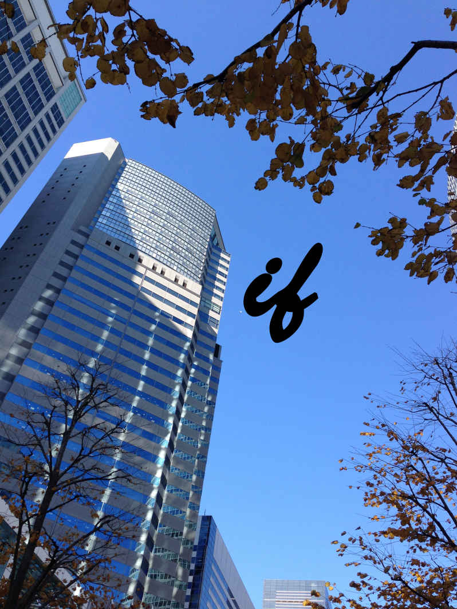

| if | |
| 夕凪なくも | |
| (2014) | |

ｉｆ
夕凪 なくも
（本編）
甘いコーヒーの匂いの漂うありふれた喫茶店に、僕と奈津 菜 は向き合って座っていた。
奈津菜は先ほどから少し俯き加減で、じっと黙ったままだった。何事につけても不器用な僕は奈津菜と会話が途切れてしまったことに戸惑い、次に発するべき言葉が見つからずにいた。
窓の外は一面の雪景色だった。この岡山に雪が降るなんて、何十年に一度かくらいに珍しいと奈津菜は言っていた。僕らのテーブルには店イチオシのエスプレッソが置かれていて、まだ湯気がほんのりと立ち上っていた。奈津菜が胸に抱く小さな赤ん坊は、むずかることもなく大人しく眠っていた。
「......あの日、あたしは妊娠しやすい日だったの」
奈津菜は突然ぽつんとそんなことを呟いた。その後で奈津菜は自分の言葉に恥じらうように、顔を赤らめて深く俯いた。
一瞬何のことか分からなかったけれど、少し時間を置いてから僕は奈津菜の言う「あの日」のことを理解した。
今から七年前の「あの日」だ。
それ以外に考えられない。
僕は同時に狂おしいほどの後悔に襲われた。どうして「あの日」、まだお互いに学生だった「あの日」に奈津菜を一度でも抱いておかなかったのだろうと。
あの日奈津菜を抱いて、奈津菜の願い通りにしていれば未来は大きく変わったかもしれない。
僕と奈津菜の間には元気な赤ん坊ができて、僕らは今とはまったく違った生活を送っていたかもしれない。目の前で奈津菜が抱く赤ん坊は、誰か他の男の子供ではなく、僕の子供だったかもしれない。
（奈津菜との未来......）
それを想像しただけでもトキメキと希望で胸がいっぱいになる。
もう決して叶うはずのない遠い過去の「夢物語」にもかかわらず、僕は今でもそんな少年のような気持ちになって心が躍る。
七年前の喫茶店での久しぶりの邂逅 は、そこでお開きになった。
まだ昼下がりだったけれど喫茶店の外は大雪だったし、奈津菜は赤ん坊を抱えていたから。その上何事につけても不器用な僕は、上手く奈津菜を口説いてどこか別の夕飯の店だとか居酒屋だとかへと誘うことができなかった。
さらには旦那を家に待たせてあると言っていたから、奈津菜自身決して僕と親密な雰囲気になるつもりはなかったように思う。
僕のほうだって奈津菜のような美人を口説けるわけがないと最初から諦めていた。大きな黒目がちの瞳に、整った鼻筋とシャープな頬のライン。何度見ても見惚れてしまうけれど、旦那と赤ん坊がいる身ではどうしようもない。何とか自分を律して諦めた。
諦めて更に七年の歳月が早々と流れるうちに、奈津菜との連絡はついに一切途切れた。今となっては奈津菜の携帯の連絡先には電話もメールも繋がらないし、奈津菜が今現在どこで何をしているのかまったく分からない。知る由もない。
あの岡山市内のありふれた喫茶店の近くに、今でも奈津菜は旦那と子供と住んで幸福な家庭生活を送っているのだと思う。そして奈津菜のその平穏な暮らしに、僕が波風を立てる権利はないと思う。
合算して十四年前の「あの日」以外は。
十四年前の「あの日」だけは僕のような冴えない小太りの男にも、奇跡的なチャンスが巡ってきた。けれども僕はそのチャンスを物にできなかった。そのことが未だに悔やまれてならない。
僕は毎晩そんなことを悶々と考えながら、だだっ広いオフィスの中で一人黙々とリライターのバイトをしている。
世間でそこそこ名の知れたソムリエや美容師や料理研究家やタレントの「書きたいこと」を、本人のざっくりとした原稿や資料から類推して枝葉を広げて、文章を再構築しながら一冊の本にする。それがリライトだ。説明すると難しく思うかもしれないけれど、やっているほうは割と簡単だ。
それに僕一人だけが書いているわけじゃない。正社員も含めた複数の人間が、一冊の本にリライターとして携わっている。正社員の方々は主にリライトする本の取材を担当しているようだ。
もうとっくに知られていることかもしれないけれど、有名な人の書く「自伝」とか「××入門」といった類の本やスマホ向けアプリの一部には、未だにその裏側で僕らのような複数のリライターやゴーストライターが関っている。僕らは出版社の子会社に雇われていて、親会社から回されてきた有名人の原稿をチェックしてまた親会社に戻す。
僕が深夜にこの労働をしている理由は単純だ。
昼間は正社員がパソコンを使っていて、空きがないからだ。
唯一パソコンに空きがあるのは深夜。そして僕は正社員並みの仕事をこなせない、何事につけても不器用な男だ。だから深夜にただひたすら文章だけをこねくり回すだけの、この仕事を任されている。
身分がアルバイトである理由も簡単だ。
現代には様々な娯楽が満ち溢れている。小説、ノンフィクション、漫画、アニメ、動画、映画、音楽、ゲーム、 ＡＶ......どの娯楽を取っても無料で一般人が充分に楽しめるコンテンツが豊富に揃っている。それらの内の幾つかはすでにオワコン、つまり「終わったコンテンツ」とまで言われている。
だから文字だけの本やそのスマホ向けアプリなんて、イマドキそう簡単に売れるはずがない。そう簡単に売れないから僕はいつまで経っても正社員にはなれず、バイトの身分のまま。
たったそれだけだ。
最初は文章を書くのが好きで始めた仕事だけれど、長年の出版不況とほぼ時を同じくして長年アルバイトをやっていると、さすがに感覚が麻痺して日々が惰性で動いているような錯覚を覚える。
単なる流れ作業の仕事。流れ作業の日常。
バイトを始めたばかりの頃は毎日仕事を得た喜びに打ち震えていたというのに、今の僕の毎日は本当に一枚の紙のように薄っぺらい。
<あの日、あたしは妊娠しやすい日だったの>
真夜中に一人で仕事をしていると心細さのあまり、奈津菜のその言葉が何度も僕の脳内にリフレインする。
しんと静まり返ったオフィスの中で、一つ深呼吸をした。
もう奈津菜は決して僕のものにはならないんだ。
そう諦めをつけるしか方法がない。けれども僕は学生時代から今でもなお、奈津菜に恋をしている。
恋とか愛とは何だとか、そういった定義はよく分からないけれど、とにかく奈津菜と一緒に毎日を穏やかに暮らせれば、どれだけ幸せなことだっただろうかと想像しては顔がにやけてくる。
少なくとも今の惨めな境遇よりは、はるかにマシだと思う。
開いていたパソコンにログインしていたスカイプから、小さくメッセージ音が鳴った。妻の陽子 からだ。さすがに職場にはヘッドセットを持ち込めないので、文字だけのチャットをするべく素早く文字を入力した。
<何や？>
<あゆみが発作を起こしたみたいや。さっきあゆみから電話があった。あたし仕事中やし、和也が病院に連れて行ってくれへん？>
<アホな。こっちだって仕事中やぞ>
<和也 は単なるバイトやろ！ あたしは正社員。どうしても抜けられないんや>
単なるバイトと正社員...はるかな格差を感じる。
<介護の仕事って、そんなに大変なんか？>
<当たり前やろ！ 今さら何言ってんねん！>
恐らく夜勤中の携帯から打っているのだろう、文字が少し遅れてパソコンのモニターに流れてくる。そのどんよりとした文字からは、陽子の怒り狂って真っ赤に膨れ上がった顔が浮かび上がってくるようだ。
<そんなことを言ったって、僕だって...>
そこで文字を入力する手が止まる。僕にだって言いたいことは山のようにある。
第一娘のあゆみは僕と血が繋がった子供じゃない。三歳年上の陽子の連れ子だ。しかももう四歳だ。
僕は僕なりにあゆみに対して複雑な感情を未だに抱いている。
素直に愛してあげられないのだ。
<早く決めて！ あゆみからしんどいって、さっきからずっと携帯に電話がかかってくるんや！ 可哀想やろ！？>
<明け方に仕事が終ったら、連れて行く>
<それじゃ遅いの！ あゆみは熱まで出してんねんで！ 発作の起きている時に熱まで出したらあの子......>
そこでふいにぴたりと文字の流れが止まった。
何だか陽子が次の一言を躊躇っているようにも思えた。しばらく経ってから恐る恐るといった風に文字が流れてきた。
<あの子......死んじゃうかも......>
大袈裟 な、と内心でため息を吐きながらあゆみの容姿を思い浮かべた。あゆみは陽子と同じようにでっぷりと太っていて、血色が悪い。お世辞にも美人とは言えない。
ハッキリ言えば二人ともブスだ。
デブでブスな女はネット上では「デブス」と罵られているし、僕だって好きじゃない。でも僕だって人のことは言えない容姿をしているから、口に出して言うことはない。
何はともあれ厳しい家族や親戚から散々プレッシャーをかけられて仕方なく結婚した、一応ながらも「妻」とその連れ子の「娘」だ。ここは諦めて「現実の」家庭生活に戻らないといけないのかもしれない。
奈津菜の可憐な容姿は、永遠に過去の「夢物語」のままにしておいたほうがいいのかもしれない。
<分かった>
意を決して文字を打った。そもそも僕があゆみを愛しているなんてことがあるだろうか？
あゆみの小さな体を、本当に心から心配して打った文字なのだろうか？
分からない。
分からないけれど、もし陽子に離婚の二文字を突き付けられたなら両親や兄たち、親戚たちからどれだけ激しい叱咤と揶揄の言葉を浴びせられるだろうと恐れた。
両親や兄たち、親戚たちの結びつきは極めて強く、結婚の圧力も強く、それがゆえに僕は、
「好きでない女でもこぶ付きでもかまへん！ とにかく早く結婚せえ！」
と彼らに無理強いされたほどなのだ。
強引にもほどがある。
だけどそれが僕の実家の事情というものだったのだ。結婚してようやく一人前、ようやく社会人の仲間入り。そのためなら相手が誰であろうと一切問わない。一見メチャクチャなようだけど、田舎なんて大抵どこもそんな感じじゃないだろうか。
僕はふうっとため息をついて一瞬考えた。
僕は本当に陽子と好き合って結婚したのだろうか、その決断に間違いはなかっただろうかと。
でも本当はうだうだと一人で考えていたって、結論は出ないことは充分すぎるほど分かっている。
第一今陽子と別れたなら、所詮バイトの身分でしかない僕は生きていけない。生存のためには陽子と添い遂げるしか道はない。
<行ってくれるんね。よかった>
パソコンのモニターを通して、文字からため息が溢れ出てくるようだ。
僕は取りあえずスカイプの画面を小さくし、代わりに出退勤を管理するソフトを立ち上げた。そのソフトが映し出すパソコンの画面に「娘が病気なので早退します」と書き込み、「早退」の欄にチェックを入れる。
（けれども娘？）
もう一度僕は「娘」という文字を読み返す。つくづく不思議な文字だ。僕にはそういう子を持った「覚え」がないのだから。
そもそもあゆみのほうだって、僕にまったく懐いていない。あゆみはいつも僕によそよそしい態度を取る。
僕は愛だとか恋だとかが分からない人間だけれど、それはあゆみだって同じだと思う。あゆみだって僕に対して「愛している」はおろか、「好き」という感情すら抱いていないと思う。
それは今までの家庭生活の中で痛いほど感じてきたことだ。
そのことを思い出すたびあゆみが僕の「娘」であることに、とてつもない違和感を持たざるを得ないのだ。
<取りあえず行ってくる>
僕は迷いを振り切るようにスカイプにそう書き残して、さっさとパソコンの電源を落とした。
陽子からあゆみについてのこまごまとした事情など、聞いているだけで眠たくなりそうだった。
自転車の荷台にあゆみを乗せて夜間も診察している行きつけの総合病院に着くと、一階の内科の待合室はあゆみと同じような小さな子供たちで満員だった。もうとっくに夜中の三時を回っているというのに。
以前冬に同じように来た時は、インフルエンザが流行っていた。真夏の今はどうだろう？ 何か流行病か夏風邪が子供たちに蔓延しているのだろうか。それとも単にこの大阪の下町には、夜間も子供を診察する病院が少なすぎるのだろうか。
どうやら後者のほうが正しいから混み合っているのだろうと思い直して、僕はあゆみをおんぶしながら内科の受付に向かった。あゆみはすっかり元気を失くしていて、その上持病の喘息から来ると思われる激しい咳とぜいぜいといった独特の荒い呼吸を繰り返していた。あゆみの体は標準よりずっと太っているはずなのに、本当に軽く感じる。
「竹中和也さん。ご家族の方ですね。待合室でお待ちください」
女の看護師は慣れた手つきで僕の差し出す保険証を受け取り、さっさと受付の奥へと戻って行ってしまった。
あの赤色のカードの保険証。あれは扶養家族のものだ。
自分で会社の健康保険に入ることができないので、陽子の扶養ということになっているのだ。病院であの赤色のカードを提示するたびに、いつもとてつもない恥ずかしさと屈辱を覚える。そしてふがいない自分を呪う。
どうして他の男たちと同じように、健康保険料すら自分で払えないのかと。
けれども現実は厳しいのだから、仕方がない。雇用情勢は依然として厳しく、非正規雇用は増える一方だ。そもそも僕のように大学を卒業しても正社員になれなかったり、なれたとしても一度でもドロップアウトしてしまうと、再び正社員の地位に這い上がることが困難というかほぼ不可能な現状が日本にはある。
いわゆる「再チャレンジの不可能性」というやつだ。その上経済の先行きは見えないし、労働者の給与の上昇も見込みがない。
まったくお先真っ暗だ。
恥を忍んでも、屈辱に耐えてでも、赤色の扶養家族のカードを病院に提示するしかない。
病院に行くと僕の頭はそのことばかりで、あゆみのことなんてちっとも頭になかった。少し気だるさを覚えながら待合室の空いている席に座り、隣の席にあゆみを座らせた。
あゆみはぜいぜいと荒い呼吸を繰り返しながら、俯き加減に座って苦しそうに咳をしていた。その間も僕の頭の中は、あの赤色のカードのことで一杯だった。
（もし、僕が陽子と結婚していなければ...「もしあの日、あの時」奈津菜を抱いていれば...今のような惨めな生活はなかったんじゃないか？
もっと毎日の生活に張り合いが出て、仕事も頑張れたんじゃないか？）
ぼうっと天井を見上げながら、奈津菜の愛らしい顔を思い起こした。
奈津菜のためだったら、僕は何でもやっただろう。奈津菜との子供だったら、命を賭けてでも守ったことだろう。
大学を卒業した後は僕の好奇心を満たすだけのアルバイトのリライターなどという身分に堕ちず、新卒という特権を死にもの狂いで行使して、堅実に就職を目指していたことだろう。
例えば中小企業でいいから、もっと地に足の着いた正社員。営業職とか。あるいはもしかしかするとオヤジに土下座してまでも、オヤジの会社に就職させてもらったかもしれない。
とにかく奈津菜と一緒になっていれば、僕は不器用ながらも奈津菜と僕らの子供を愛し抜き、そのために不器用ながらも懸命にまっとうで堅実な正社員の仕事をしていたに違いない。
決して赤色のカードなんかじゃなかっただろう。
多分。
（もしも十四年前の「あの日」が変わっていれば......）
総合病院の天井にはぽつぽつと穴が空いていて、それが何のためかは分からなかったけれど、その数を数えながらひたすら奈津菜のことを考えていた。子供たちの咳声、泣き声、喚く声......それらが夜勤明けの僕には不愉快でたまらなかった。
「順番、先に回したほうがいいんじゃありません？」
ふいに横合いで若い女の声がしたけれど、僕は他人のことだと思ってやはりぼうっと天井を見つめて奈津菜との十四年前を思い浮かべていた。
「苦しそうですよ、娘さん」
突然肩を叩かれた。声のする方を見ると、驚くほどの美人で若い白衣姿の女が立っていて、心配そうに交互に僕とあゆみを見つめていた。
「順番......ですか......」
振り絞るような声で言ったが、その声が出ていたのかどうかは分からない。
何しろ目の前の美人の白衣の女は、若い頃の奈津菜そっくりだったのだから。小さな顔とシャープな頬のラインに、目鼻立ちがすべて整っていて、目は大きく黒目勝ちの瞳で......
「あたし、神経生理科の研究員の加藤渚 と申します。内科のことはよく分かりませんけど、娘さん、苦しそうですから診察の順番を先にするように言って来ますね」
そこまで言うと加藤渚なる女は小走りに内科の受付のほうへと走り去って行った。僕は一瞬あの渚という女が、実は奈津菜なんじゃないかと錯覚したくらいだ。
何しろ奈津菜との一件はもう十四年も前の話だ。今のように写メというものが存在しなかったし、奈津菜を撮った写真も引っ越しを繰り返したせいで一枚も残っていない。
七年前に再会した時も僕は貧乏でお金がなくて、携帯やらデジカメやらが買えなくて、奈津菜の写真を撮ることができなかった。
僕の瞼に焼きついた思い出。それだけが頼りだけれど、どう見てもあの渚とかつての「記憶の中の奈津菜」の顔が重なってしまう。奈津菜への恋心が一瞬にして渚への恋心へと一変したような、妙な感覚だ。
よく世の中には「出会った瞬間びりぴりと来たので、結婚を決めました」という人がいるけれど、今の僕の渚に対する初印象はそんな感じだった。陽子やあゆみの存在が一瞬にして疎ましく思えてならなかった。
渚という女は内科の受付で大きな手振り身振りを繰り返し、必死に僕とあゆみの存在を看護師たちに説明しているようだった。
（それにしてもあれだけの美人にして、神経生理学科の研究員......さぞかしモテるだろうな）
と妙な場所で妙なことを考えた。若い頃の奈津菜と顔立ちが重なるからこそ、余計にそんな妙なことを考えてしまうのかもしれない。
だってどの世の中に美人を好きじゃない男がいるだろうか？
みんな美人は好きだし、自分だけのものにしたいと思うだろう？
その間にもあゆみは苦しそうな呼吸と咳を繰り返している。膝に手を当てて前傾姿勢のような形になり、目には涙まで浮かんでいる。
さすがに可哀そうに思って、僕はそっとあゆみの背中を撫でてあげようとした。
するとあゆみは「嫌っ！ 触らんといて！」と悲鳴のような声を上げ、再びぜいぜいと苦しそうな呼吸を始めた。
やれやれ仕方がない、とため息を吐き再び渚のほうを見る。
ちょうど渚と内科の看護師らしい女がこちらへ向かって歩いて来る途中だった。僕は立ち上がって軽く会釈をした。内科の看護師にというよりも、渚に向かって。
「何で早く言ってくれはらへんかったのですか！？」
内科の看護師はあゆみに近づき、その背中をさすりながら咎めるような口調で僕を見上げた。
僕は場違いなことにも、この内科の看護師は意外と胸にボリュームがある、などと考えていた。彼女の胸のプレートには「矢部 幸子 」と書かれてあった。
「こんなに症状が酷いって早く言ってくれたら、対応違いましたのに！」
そんなことを言われたって、受付ではきわめて事務的な対応しかしてくれなかったじゃないか。渚が現れて僕の代わりに説明してくれるまで、矢部さんは何もしてくれなかったじゃないか。
そんな言葉も吐きたくなるけれど、僕はぐっとこらえて「はあ、すみません」を繰り返してぺこぺこと頭を下げた。
「診察、早くします。吸入器あてがったらよろしいから」
矢部さんは慣れた所作であゆみを抱きかかえると、そのまま内科の診察室へと消えて行った。僕と渚は取り残されるような形になった。
「あの......」
何とか渚と話をしたくて、口を開いた。
「はい？」
渚の声音はこの大阪の下町独特の強い訛りではなく、どこか柔らかなぬくもりを感じさせる落ち着いたトーンだ。
「どうしてこんな深夜に...神経生理学科の方が...」
勤務しているんですか、まで言えなかった。あまりにも緊張しすぎて。まるで七年ぶりに奈津菜に再会したかのような、激しい胸のドキドキと緊張があった。
早くも僕は渚に恋をしてしまったのかもしれない。
「ある装置の実験中なんです。だから昼も夜もなくて」
「ある装置？ 実験？」
「竹中 さんはこんなことを考えたことはありませんか？」
渚から突然僕の新しい苗字を呼ばれたことに戸惑った。
渚はやはりあの僕の赤色のカードを見ていたのだ。多分受付で矢部さんと会話している最中かどこかで。
「もし、好きな夢を自由に見ることができたらなあって。そしてその自由に見た夢を記録して、何度も見返すことができたらなあって」
赤色のカードの恥ずかしさに耐えながらも、僕は思わず奈津菜のことを思い出した。
僕の夢の中の、奈津菜。
僕の夢で出てきた奈津菜を、記録する。一生涯残る奈津菜。
悪くはない。それどころかとてもいい案だと思う。
「思いますね」
「だったら」
ふいに渚は目を輝かせて僕を見つめた。渚の身長は比較的高く、ヒールを履いていないのに僕と同じくらいの背丈だ。小柄だった奈津菜とは、そこだけが違う。
「あたしたちの実験に協力してくれませんか？」
「実験？」
その言葉が妙に引っかかった。
「あ、実験というかその...」
渚はふいに顔を赤らめながら、パチパチと何回か瞬きを繰り返した。付けまつ毛なのか分からないけれど大きな目の上半分はとても濃く深い黒色で、半円形の綺麗な輪郭を形作っている。
「竹中さんが見たい夢はないのかなあ、って思って」
「ありますよ」
「どんな夢です？」
渚は再びぱっと明るい表情になって、僕をじっと見つめた。やはり渚に見つめられると、奈津菜に見つめられていた時と同じような、胸の奥がじんと痺れるような妙な快感を覚える。
「１９９９年12 月３日の日の夢です」
僕はその数字を何の障害もなくすらすらと言うことができた。今でも忘れない、「あの日」のことだ。
渚は少し戸惑ったような表情を浮かべながら、
「どうしてです？」と首を傾げた。
「もしも、ということも夢では可能でしょう？」
「もしも？」
ますます渚は首を斜めに傾げた。
「ｉｆということです。もし、あの時、ああしておけば未来は変わったかもしれないのに。そんなこと、加藤先生にもありませんか？」
「なるほど、ありますね」
渚はようやく理解したように、何度か軽く頷いた。
「その『もしも』が夢の中だっていい、叶えられたら僕は満足しますよ」
「新しい発見です」
渚は目を輝かせながら、本当に嬉しそうな笑顔を作った。
その右頬にえくぼを作りながら笑う表情まで、まるで若い頃の奈津菜と同じだ。渚は奈津菜の親戚か、奈津菜その人なんじゃないかと錯覚するほどだ。
「新しい発見というと？」
「あたしたちは実験中の装置のことを、ブレイン・ストリーミングと呼んでいます。ブレイン・ストリーミングの中に入れば、自由に夢を操作することができ、その夢の内容もモニターできるので、悪夢で悩む患者さんたちの手助けになると考えていました。でも竹中さんのような新しい動機でも実験...じゃなくて、もう完成に近い状態まで持ってこられたのですが...その...使えるかもしれませんね。後は試用モニターになってくださる方々を募集している段階なんです」
そこまで一気に言ったところで、渚はようやく僕のぽかんとした表情に気付いたのか、慌てて口を閉じた。
「あの...娘さんは大丈夫でしょうか...」
渚は申し訳なさそうに肩をすくめた。
「小児喘息なので、いつものことです。点滴か吸入さえしてもらえれば、熱は下がって発作も収まります」
「よかったです」
渚はほっとため息を吐き、再び本当に嬉しそうな笑顔を浮かべた。一体この魅力的な笑顔で何人、いや何十人の男たちを魅了してきたのだろうかとやけに冷静に考えた。
そう言えば奈津菜にだって、群がる男たちはたくさんいた。奈津菜はその詳細を僕には話さなかったけれど、奈津菜と出会うきっかけになった大学のテーブルトークＲＰＧサークル「サーベル」の男たちは、多分みんな密かに奈津菜に恋をしていたんじゃないかと思う。
奈津菜がサークル部屋に来ると話は盛り上がったし、奈津菜がいない時でも「奈津菜は本当は誰が好きなんだろう」なんていう噂話をしていた。
テーブルトークＲＰＧのサークルなんてオタクの集まりなのだから、仕方がないかもしれない。
ちなみにテーブルトークＲＰＧとは、テレビゲームで行うＲＰＧの代わりにテーブルを囲んで会話だけで進めるゲームのことだ。テレビゲームのＲＰＧの元祖だとも言われている。奈津菜はそれが大好きだったから、ゲームマスターにもプレイヤーにも、進んで立候補した。ゲームマスターとはその名の通り、ゲームを自ら作り出す役目だ。プレイヤーはその指示に従って行動する。
思い出すときりがない。
「竹中さん。是非、ブレイン・ストリーミングの試用モニターになってくれませんか？ モニターですから、もちろん無料です。感想を書いていただければそれだけで結構です。その上その１９９９年の......」
「12 月３日です」
「そうそう、その日のｉｆを夢の中で叶えられるかもしれません」
「でも実験なのでしょう？」
僕は『実験』という単語の語調を強くした。その点だけがやけに気になって仕方がなかったのだ。
「いや、だからその......さっきも言ったように、もう完成品に近いです」
「え、でも......危険はないんですか？」
渚の真っ直ぐな黒目勝ちの瞳に戸惑いながらも、さすがに僕もその点だけは確認せざるを得なかった。
何しろそんな大がかりな装置の「実験のモニター」ということになると、戸惑いを隠しきれない。思わずぐっと両手を握りしめ、額からじっとりと緊張の冷汗が滲み出るのを抑えきれなかった。
「危険はありませんよ、今まで何度も実験を繰り返してきましたから」
渚はまたしても男を魅了するチャーミングな笑顔を浮かべて、くすりと笑った。そのぱっと花の咲いたような美しい笑顔を見ると、本当に十四年ぶりに若々しい奈津菜に再会したような気持ちになって、胸の奥がずきりと痛む。
（奈津菜は今ごろ、一体どこで何をしているのだろう）
数えると奈津菜だって今年もう三十二歳だ。旦那とは上手くいっているだろうか。二人目の子供はできたのだろうか。そんなことを考えていると、自然と会いたさがますます募ってくる。そして「あの日」のことを激しく後悔する。
僕はきっと陽子なんていう、こぶ付きの女と結婚している場合じゃなかったのだと思う。もっと真剣に奈津菜の行方を捜して大阪と岡山をくまなく走り回って、奈津菜の居場所を突き止めて、十四年越しの愛を奈津菜に告げるべきだったのではなかったのか。そんな焦りや不安にも似た気持ちが沸き起こってくる。
「......会いたい......人がいます......」
僕は無意識のうちにふっとそんな言葉を漏らしていた。
「は？」
渚は怪訝そうな表情を浮かべて僕の目を覗き込んだ。
「僕にはかつて好きな人がいた。本当に好きで心の底から愛している人がいた。けれどもその人とはもう二度と会えない。それならせめて夢の中だけでも...会いたい...」
「ブレイン・ストリーミングに協力してくれるんですね？」
渚の華やいだ表情を見つめながら、ゆっくりと頷いた。もはや目の前の渚と若い頃の奈津菜との顔の区別がつかないくらいに、僕は渚に惹かれていた。
ぼうっと渚を見つめながら、あることを思い出した。
大学生時代に何かの本で読んだことがあるけれど、人類で初めて夢に科学的にアプローチしたことで有名なジクムント・フロイトによれば、「夢は無意識下に抑圧された願望が検閲を受けて出現する形である」のだそうだ。
もしそれが本当なら、意識では忘れていても無意識では決して忘れられなかった奈津菜のあの愛らしい顔の多彩な表情、それだけでなく無意識下に抑圧された奈津菜との学生時代の様々な思い出さえも、ブレイン・ストリーミングなる装置によって蘇るかもしれない。
「よかったあ」
渚のため息が、わんわんと泣き叫んだりばたばたとリノリウムの床を走り回る深夜の子供たちの隙間をかいくぐって聞こえてきた。
何だかそんな渚の喜び様がふと気になった。
もはや完成品に近くて、悪夢を除去するほどの力を持つブレイン・ストリーミングならば、有料でもモニターになりたいという人々が殺到するのではないか？
さらに夢をある程度操作できるというのならまるで遊園地のアトラクションのように楽しげで、順番待ちするほどの人気が自然と出るのではないか？
それなのに何故僕ごときが無料でモニターになることに、渚はそんなに安堵し喜ぶのだろうか。
「竹中あゆみさんのお父様〜」
ふいにのんびりとした女の声が聞こえてきても、それがすぐに「僕」のことだとは思わなかった。僕は明確に、「あゆみの父親」という自覚を欠いていた。
「では、竹中さん。明日というか日付が変わって今日はお仕事の帰り、都合がつきますか？」
渚が小声になってやや早口で僕の耳元で囁いた。その吐息がなんだか甘ったるくてくすぐったい。
「僕の仕事は基本的に夜から深夜なんです」
「じゃあ、今日のお昼はどうでしょう？」
「構いませんよ」
「では正午に、神経生理学研究室にいらしてください。お待ちしています。それから」
渚はぐっと顔を僕に近づけてきた。洗いたてのシャンプーの匂いが漂ってきて、思わず心臓の鼓動が早くなるのを感じた。
「ブレイン・ストリーミングのことは誰にも絶対に秘密です。この総合病院の医師にも看護師にも、勿論ご家族やご友人にも、絶対に秘密でお願いします」
そこまで言うと渚は足早にその場を立ち去ろうとした。その渚と、小さなあゆみの手を引いた内科の看護師の矢部さんがすれ違うのがほぼ同時だった。
渚は立ち止まってくっと腰をかがめ、あゆみのおかっぱの頭を撫でながら「しんどかったよな〜大丈夫？」と声をかけていた。あゆみは僕には決して見せない笑顔で渚を見上げ、「大丈夫！」と笑った。
何だか僕は変てこなパラレルワールドを想像した。僕の妻が渚で、僕と渚の子供があゆみ、という想像だ。悪くはない。それどころか天国だ。けれども現実は辛く厳しい。僕の妻はでっぷりと肥えた醜い陽子であり、その陽子の実の子があゆみなのだ。その現実だけはどうしても変えられない。
それならいっそのこと...夢の中だけでも...
僕は即座に今日の正午、ブレイン・ストリーミングなる装置を受けることに決めた。
「今度からは発作起こったら、はよ連れて来てくださいや！」
矢部さんは怒ったように僕に向かって言い、あゆみの手を僕に預けた。あゆみの手を握ろうとすると、あゆみは逃げるようにするりと僕の手をかわし、僕が座っているソファからかなり離れた位置にすとんと腰を下ろした。
大丈夫なんやね、とあゆみに確認の声をかけることも億劫になって、僕はソファに座ったまま目を閉じて束の間、一日の疲れを癒した。そしてブレイン・ストリーミングなる装置について様々な想像を巡らせた。
あゆみのことなんかより、ブレイン・ストリーミング、だった。
ブレイン・ストリーミングさえ受ければ、夢の中で過去に置き忘れた「ｉｆ」が蘇る...奈津菜との「あの日」が蘇る...もう一度夢の中で奈津菜と出逢える...何と魅惑的な出来事だろうか...
目を醒ますと大きな水音がしていた。それからまな板の上で何かを刻むトントンという音。陽子とあゆみと一緒に住むこのアパートの部屋は二ＤＫと狭い上に、防音構造がしっかりとしていないのだ。隣の部屋の物音だって、まるまる聞こえてきてしまうほどだ。
僕はいつもの六畳の畳敷きの上に、ごろりと横になって眠っていた。いつの間にか僕の体には薄いタオルケットがかけられてある。
一瞬、渚と会話をしたあの総合病院のことが夢だったのではないかと錯覚した。ゆっくりと手元の時計を見る。午前十一時を少し回ったところだ。渚との会話が本当であったのならば、今すぐにでも出かける支度をしなければならない。何しろ僕は蒸し暑さのあまり、パンツ一枚で眠っていたのだから。
けれどもあの渚は「現実」だったのだろうか？
のんびりと首をかしげながら起き上がり、そっと台所のほうを見た。でっぷりと太った陽子の後ろ姿があった。いつもの見慣れた昼の光景だ。僕は夜中のバイトが終って起きたばかり、陽子は夜勤が明けて遅い朝食を作っているところ。まったく普段と変わり映えのしない光景だ。つくづくうんざりする光景でもある。
「昨日ありがとう」
突然陽子が後ろ姿のまま声を出したので、びくりと体が震えた。陽子は人の気配に敏感だから、僕が起きたことにもすぐに気付いたのだろう。
「あゆみのこと？」
「うん。助かったわ」
大阪の下町独特の強い訛りが返ってきた。陽子の実家はこのアパートのすぐ近くにある。陽子はこの下町で産まれ育ち、この下町で三十六歳になる現在まで働いてきたのだ。
道理で大阪弁の訛りが強いわけだ。
カーテンを開けるとさあっと眩いばかりの陽光が差し込んできた。遠くにはうっすらと野暮ったい通天閣を見通すことができる。
僕はしばらくの間ぼうっと、遠くの通天閣を眺めていた。
隣県の奈良の田舎で産まれ育った僕でもさすがに、通天閣は何となく野暮ったく見えて仕方がない。テレビで何度か見たことのある東京タワーや東京スカイツリーのほうが、よっぽど洗練されていてお洒落に見える。一度は東京へ行ってみたいと思うけれど、陽子と東京に行くというのは何だか味気ない。かと言って僕一人で行くまとまった金も休みもない。
それにしても、昨晩の渚は現実だったのか夢だったのか？
僕は立ち上がって、隣の陽子とあゆみの部屋のドアをそっと開けようとした。
「開けんといて！」
陽子はやはり僕の気配に気づいたのか、後ろ姿のまま鋭い声を放った。
「やっと熱が冷めて発作も収まって、ぐっすり眠ってるんやから。起こさんといて」
「やっぱり......僕が今朝あゆみを病院に連れていったんか？」
「当たり前やろ！ だからお礼を言ったんやろ！ まだ寝ぼけてるん！？」
どうやら僕が今朝早く、あゆみを総合病院に連れて行ったことは事実らしい。とするならば、あの総合病院での渚との会話のやり取りも「現実」であった可能性が高い。それなら今日の正午の渚との待ち合わせの約束を果たすべく、そろそろ支度を始めなければならない。
そっと台所のほうを見る。匂いからしてどうやら魚の焼き物と味噌汁と何かを作っている風だけれど、陽子の料理はまだ終る気配を見せない。電気釜も、まだ炊き立て中だ。
「あの......ちょっと出かけたいんだけど、料理の前にええかな？」
「パチンコ？ 競馬？」
くすりと意味ありげに陽子が笑った。不気味な笑い声だ。僕に会うべき友達もガールフレンドもいないと見越しての、探りだろう。
「職場で......残っていた仕事があって......ほら、昨日の夜あゆみを病院に連れて行ったから、できなかった分」
「たかがデータ入力やろ」
陽子は本当に僕のことを裏まで見透かしているようで、不気味でならない。
でも「データ入力」は僕が陽子に吐いた唯一の嘘っぱちだ。リライターの仕事には何かと秘密が伴う。例えば有名なタレントの本を加筆訂正、時には代筆したとして、実はそれを書いたのが僕だと分かれば世間は騒然となるだろう。
とりわけ現代はネット社会で、情報は瞬時に共有される。リライターという職業を大っぴらにして歩くのは危険だ。
そういうわけで家族である陽子にも本当のことは言えず、やむなく「データ入力のバイトをしている」と嘘を吐かざるを得ないのだ。自分でも厄介な仕事を選んだと思うけれど、僕にできる仕事はそれくらいしかなかったのだから仕方がない。
「たかがデータ入力でも、やるべき仕事はきちんと済ませておかないと」
けれどももう陽子に唯一の嘘を吐くのも慣れてきた。今ならさらりと平気で何度でも「データ入力」と言える。実際データ入力の仕事とさほど変わらないんじゃないかと思うこともある。仮にそんな事情まで見透かされているとしたなら、陽子は本当に不気味だ。
「昼は正社員で席が埋まってるのとちゃうん？」
思いがけないツッコミに少し動揺し、
「なんか......さっき上司からメールで産休に入った人が出て、一つ席が空いたからって」
と、とっさに適当な嘘を吐いた。
「ふうん」
どうやら陽子は納得してくれたらしい。のんびりと味噌汁の味見をしている。背後からも見える陽子の横顔の血色の悪い唇、それに分厚い足の指のような手の親指が、下手なホラー映画を観ているようで何だか萎えた。
本当に僕はどうして、どこで間違ってこんな女と結婚してしまったのだろう。
「だから料理の前にええかな？」
「ええよ。別にあんたのための料理やあらへんし」
さらりと言う陽子に、何だか更なる打撃を与えられたような気がした。
「僕のためじゃない？」
「あゆみに栄養を付けさせようと思って、久しぶりに手の込んだ料理を作っているだけやから。気にせんでええで。あんたは風俗でも何でも言ってき、もしへそくりでもあるならな」
（そうか、そうやんな）
と自分を納得させるほかなかった。
僕と陽子は籍こそ同一であれ、所詮は「赤の他人」なのだ。
僕は時々不思議に思う。
世の中のカップルは元々皆初めは「赤の他人」だったにもかかわらず、どうして「恋」だとか「愛」という情を持つことができるのだろうかと。少なくとも僕と陽子の間にはそういった感情はないと思うから、世の中のカップルがどれも不思議でならないのだ。
（一体恋とか愛ってどんなものなのだろう。愛情によって結びつく関係というものは、一体どういうものなのだろう）
僕にはまだ分からない。陽子と結婚するまで一度も女と付き合ったことはないし、陽子ともお見合いで結婚した。最初は陽子に子供がいるなんて思いもしなかったし、気づきもしなかった。
陽子から結婚を迫られ渋々承諾した時に初めて、あゆみという存在がいることを知った。後は惰性のまま、結婚への道を進んだ。
だから僕には恋だとか愛だとかというものが分からない。他人から本気で愛されたという経験もない。
奈津菜への消え残らない「恋心」ですら、僕の一方的な片想いに過ぎないと思う。それだって立派な「恋」だと言われればそれまでかもしれないけれど、何より僕には「両想い」という経験が一度もない。だから人から「恋」され「愛」されるという感覚や、それによって結びつく関係の素晴らしさというものが、まるで分からないのだ。
かたんと引き戸が開く音がした。はっとなって振り返ると、いつの間にか寝巻姿に着替えたあゆみが、片膝を付いてこちらを見上げていた。瞬間、あゆみは「キモイ！」と叫んで勢いよく引き戸を閉めてしまった。
「出かけるんなら、早く服を着て行ってきいや。あんたのパンツ一丁は誰から見てもキモイわ」
陽子のその言葉に促されて、僕は渋々自分の部屋に戻りＴシャツとジーンズ姿に着替えた。もはや僕の望んでいた「家庭生活」などどこにもないのだと、半ば諦めながら。
真夏の熱線で今でも溶け出してしまいそうな下町を自転車で走りながら、ぼんやりと思った。僕は僕の人生において、一体何を望んでいたのだろうかと。幸せな恋愛、幸せな結婚、幸せな家庭生活。それらをずっと夢描いていたはずだ。けれども三十三歳の今になって、そのどれ一つとして叶えられていないことに気付いた。
問題は「幸せな」だ。
僕は今、幸せじゃない。とてもじゃないが幸せとは言えない。むしろ不幸とさえ言える。
けれどもこの不幸を、一体誰に相談すればいいというのだろうか？
たとえ相談できる相手がいたとしても、その相手は僕の問いかけに上手く答えを出してくれるのだろうか？
それこそお寺にでも行って禅問答でもしなければ、答えなんて出ないんじゃないか。もしかするとそこまでしても答えの出ないかもしれない問いに、僕はがんじがらめに縛りつけられているんじゃないか。
そう思うとひどく憂鬱になった。
この先陽子とあゆみという重い重荷を背負った生活が淡々と、延々と続く。それは死ぬまでかもしれないし、死ぬ前に陽子やあゆみから「別れ」を告げられるかもしれない。
そこは分からないけれど、取りあえず今のところは終りのない日常が淡々と続いている。陽子は別れを切り出さないし、僕も面倒だし他に好きな相手も身近にいないから、陽子に別れを告げられない。
（好きな相手......渚......）
陽光に照らされてきらびやかに光る通天閣を眺めながら、ふとそんなことを考えた。そしてその言葉を小さく呟いてみた。
悪くない。
渚は二十四、五歳くらいに見えたけれど、もう結婚しているのだろうか？
結婚までしていなくても、恋人くらいはいるのだろうか？
何かの本で読んだことがある。女医は婚期が遅いと。医大を現役で出ても二十四歳、そこから研修医として病院に勤務して一人前になる頃には、もう三十路を超えていると。
それならば僕にもチャンスがあるかもしれない。
どんなチャンスかって？
それは分からない。そこまでは考えていない。
けれどもとにかく見慣れたいつもの通天閣が、唐突に色とりどりの輝かしい色彩を放ったような錯覚を覚えた。
この通天閣 を見通せる下町の総合病院に渚は勤務していて、ブレイン・ストリーミングという新しい装置の開発にずっと携わってきた。「渚が働いている下町」。それを思うと、この下町だって悪くはないと思った。むしろ訳もなく期待に胸が躍ってしまうのだ。
喩えるなら初恋の時のトキメキのように。
僕は大好きな歌を口ずさみながら自転車をこぎ、総合病院の敷地の中に入った。平日の昼下がりのせいか、駐車場に車は少ない。庇のある出入口にたむろしているのは、お年寄りばかりだ。
駐輪場に自転車を止めてロックをかけながら改めて総合病院を見上げると、白いはずの外壁は汚れが目立ちくすんだ煙のような色をしていた。
普段はあゆみの発作が起こった時、もっぱら深夜に利用するだけなので気付かなかった。
それに普段は総合病院の一階しか入ったことはないけれど、階数を数えると五階まであった。建物全体は長方形をしていて、それが五階分どすんと広い敷地内に置かれたといった風だ。
昼間に見る総合病院はこんな姿をしていたのかと、改めて驚いた。
自転車にロックをかけると、強い日差しから逃れるように足早に総合病院の中に入った。すうっと冷たい空気が流れた。その時に初めて、体全体がぐっしょりと汗で濡れていることに気付いた。ジーンズのポケットに手を突っ込むと、いつの間にかハンカチが入っていた。
多分陽子が入れてくれていたのだろう。
今朝のタオルケットといいハンカチといい、陽子は妙なところで僕の身を案じてくれているような気がする。妻としての「愛情」というより、「母性」のようなものを陽子からは感じる。
ハンカチで顔の汗を拭いながら、一階のロビーにある各科の見取り図を見た。神経生理学科の研究室は最上階の五階の角部屋にあった。五階には院長室や理事室もある。僕は位置を頭に入れてから、エレベーターで五階に上がろうとした。
その時ふいに、
「竹中さん」
と強い大阪弁訛りの女の声が聞こえた。振り向くと、いつもあゆみが世話になっているあの内科の矢部さんが書類を持って立っていた。
「こんな昼間にお一人で、どうしたんです？」
「いや......その......」
まずいところを見られたな、と思った。素直にブレイン・ストリーミングのことを言いたくても、渚は「誰にも秘密」だと言っていた。渚がそう言うのなら、秘密にしておかなければならない。
「ちょっと......あゆみがいつもお世話になっているので......院長先生にお礼を言っておこうかと」
「そんな必要、ありまへんけれど」
矢部さんは疑うような眼差しをじろりと僕に向けた。それよりやはりついつい矢部さんの豊満な胸に自然と目がいってしまう。
「矢部幸子」
そのプレートを眺める振りをしながら、なかなか豊満な胸だけれど形はどうなんだろうと変な考えを起こした。
そしてその時ふと、陽子が形は悪いけれど豊かな胸の持ち主だから、僕は渋々ながらも最終的に結婚を決めたのだ、と思い出した。陽子から豊かな胸を取ってしまえば、後には何も残らない。
「あ、じゃあ......ちょっと最近体がだるいので、内科の先生に診てもらおうかと......」
「そうですか。総合受付は一階ですがね」
僕のとっさの嘘など簡単に見破ったのかもしれないけれど、矢部さんは忙しいせいかそれ以上何も言わずさっさとその場を立ち去ってしまった。ほっと胸を撫で下ろして、改めて周囲を見渡した。
確かにお年寄りの姿ばかりで、比較的若い僕は一階のロビーで浮いている存在なのかもしれない。
隠れるようにして素早くエレベーターホールに向かい、叩きつけるように昇降ボタンを押した。エレベーターが一階に降りて来る時間さえもどかしかった。僕が今ここにいることを矢部さんの他にも顔見知りの看護師や医師に見られたなら、いつ陽子にそのことが伝わるか分からない。
仮に陽子に伝わったら、きっと陽子は僕を問い詰めてくるだろう。どうしてたった一人で真昼に総合病院に行ったのかと。
仮にそうなれば、渚との「秘密の約束」を裏切ってしまいかねない。それだけは避けたかった。
つまりは僕だって陽子に愛想を尽かしているのだし、陽子より渚のほうがずっと魅力的に見えて仕方がないのだ。
ちらちらと腕時計と見ながらエレベーターを待ち、ようやく到着するとするりと逃げるようにエレベーターの中に滑り込んだ。急いで「閉」のボタンを押し、叩きつけるように五階のボタンを押した。
エレベーターがゆっくりと上昇を始めた時、ようやくほっと一息吐いた。同乗者が誰もいなかったことは幸いだった。
安物のデジタル腕時計で確認すると、エレベーターが一階に到着したのはたったの二分の間だった。そのたったの二分間がひどく長く感じられ、と同時に何だか「渚との秘密の情事」を共有しているような錯覚にまで陥ったわけだ。
エレベーターが上昇している間、ハンカチが入っていたのとは逆のポケットに入っていた安物の合皮製の財布の中を確認した。渚はブレイン・ストリーミングは「無料」だと言っていたけれど、何だかクセで病院に来ると健康保険証を確認してしまう。そしてそれが家族扶養の赤色のカードだという事実が、ますます僕を打ちのめす。
渚に赤色のカードを見られるのが恥ずかしくて、念のために財布の一番奥の隠れた位置にカードを入れ直した。現実は現実だけれど、時には人には見せなくていい現実だってあるだろう。
チンという安っぽい音が鳴って、エレベーターは五階に着いた。降りても人影はまったくなかった。ただだだっ広い廊下がずっと奥まで続き、その廊下に沿って重厚な木製を思わせる濃いブラウン色の各科の診察室らしきドアが立ち並んでいるだけだった。
あらかじめ一階のロビーの見取り図で確認しておいた通り、躊躇いなく足早になって廊下の一番奥へと進んだ。もうすぐ渚に逢える。ただそれだけで何だか胸が小躍りするような気持ちだった。
ブレイン・ストリーミングの試用モニターの振りをして、渚を口説くという案はどうだろうと考えてみた。
悪くはない。
けれども残念ながら、僕には女性経験がほとんどないに等しい。渚をどうやって口説けばいいのか、その方法がそもそも分からない。
（とりあえず何かと都合をつけて、喫茶店にでも誘い出して二人きりになればいいのだろうか？
けれども二人きりになった後、何をすればいいのだろう？）
色々と考えているうちに、廊下の一番奥に辿り着いた。真正面に窓があって、通天閣を眺めることができた。その通天閣も何だかいつもとは違う、ひときわ光り輝く魅力的な巨塔に感じた。
廊下の右側に目を移すと「神経生理学研究室」と書かれたプレートがドアに貼られていた。反対側のドアには何のプレートも貼られていない。取りあえずプレートの書かれた部屋をノックしてみた。
意外と頑丈なドアのようだ。ごつごつというどっしりとした重厚な音しか鳴り響かない。
案の定中には聞こえていないのか、何度ノックを繰り返しても部屋は開かない。ドアノブに手をかけてみても、鍵がかかっていて開かない。
そうこうしている間に誰かが来たら、一体どうするのだろう。渚はブレイン・ストリーミングのことを「秘密」と言っていたではないか。
焦っているとふいに内側からドアが開いた。同時にぎいいと音が鳴ったような気もするけれど、それ以上に驚いたのはドアの内側から顔を見せたのが渚ではなく、薄いフレームの眼鏡をかけた老けた白衣の女だったからだ。老けた白衣の女は眼鏡越しにじろじろと僕の全身を見回し、怪訝そうに眉をひそめた。
「あの......渚さん......加藤渚さんからここに来るよう言われた......モニターです......」
「ああ」
予想外に老けた白衣の女の声は甲高かった。それとなく胸のプレートに目をやると、「金山和枝」と書かれてあった。胸はそこそこボリュームがあったけれど、残念ながら僕は五十を過ぎていると思しき年増の女に興味はない。
「私、渚の上司の金山 です。ちょっと資料を研究室に持っていくので、部屋の中に入ってください。渚がいますから」
金山さんはそこまで言うと、足早に廊下の反対側のドアに向かって歩き、ポケットから取り出したカードキーでドアを開けて中に入ってしまった。僕はしばらくその後ろ姿を見送ってから、恐る恐る神経生理学研究室内に足を踏み入れた。
まず気付いたのは「無音」ということだった。ブレイン・ストリーミングなる「装置」が置かれているはずなので、何らかの「音」がするかと思っていたけれど、そんなことはまったくなかった。
ゆっくりと歩を進めて行くと、がらんとした空洞の部屋になっていることが分かった。その空洞の部屋の真ん中に、真っ白で巨大なMRIのような機械が置かれていた。その機械からはケーブルが何本か伸びていて、それらのケーブルは傍らのデスクに置かれた何台かのパソコンに繋がれていた。
そのパソコンのモニターの前に、あの僕と同じ背丈ほどの白衣の渚の後ろ姿があった。
どうやら渚は立ったままパソコンのモニターを見つめ、時折マウスを動かして熱心にクリックを繰り返しているようだった。リノリウムの床の上を静かに歩く僕の足音にさえ気づかないほど、夢中になっている様子だった。
一体パソコンのモニターに何が映っているんだろうと、そっと渚の背後から覗き見しようとした時、「きゃっ！」という甲高い悲鳴と共に渚がこちらを振り返った。
「ああ、びっくりした。竹中さんだったんですね」
「約束通り来ました」
僕はできる限りの笑顔を浮かべた。無礼さえも許してもらえるように、できるだけ気持ちを込めて。
「秘密は守ってくれましたか？」
渚の声は意に反して冷静沈着だった。
「勿論です。妻にも、さっき会った看護師の矢部さんにも、一切何も話していません」
そう言いながらさりげなく渚の胸を見た。プレートではなく、胸を。やはり奈津菜と同じくボリュームはまったくなかった。
だけどそんなことは問題じゃない。
僕が奈津菜を好きになった理由は...胸なんかより顔なんかよりもっと......もっと大切なこと。人を好きになるってこういうことなんだ、と初めて僕に気付かせてくれた奈津菜への感謝。だから絶対に取り返したい、あの十四年前の思い出を。夢でも構わないから。せめて、この辛い現実から逃れるためにも。
そう渚に伝えたくても、上手く言葉が出て来なかった。
「ありがとうございます。どうぞこちらの椅子におかけになって、お待ちください」
渚は僕の心中のもどかしさなどお構いなしに、傍らのデッキチェアを指さした。仕方なく言われた通りにデッキチェアに座った。座り心地は悪くない。よく見るとデッキチェアはパソコンの台数分だけ置かれてある。パソコンが四台あるから、デッキチェアも四脚。それとは別に、何故か小さな木製の椅子が幾つか置かれていた。
がらんとした室内の照明は明るく、中央に置かれたMRIのような真っ白な装置がやけに輝いて見える。出来上がったばかりの機械、といった印象だ。
再びさり気なくパソコンのモニターに目を移すと、どのモニターにも複雑な数式と文字の羅列だけしか映っていなかった。渚はこんな複雑な数式と文字の羅列を熱心に見ながら、一体何を考えていたのだろう。
「自由な夢は、もうすぐ見ることができます」
渚は再びパソコンのモニターを真剣な眼差しで見つめ、立ったままマウスを動かした。
「あの１９９９年12 月３日の夢も？」
「そうです。あらかじめお伺いしておきますが、１９９９年12 月３日に一体何が起こったのですか？」
「それは......」
思わず口ごもった。本当のことを渚に話すことが、何となく躊躇われた。それは渚に淡い恋心を抱いてしまっているせいなのかもしれない。
「まあ、答えたくないならそれで構いません。竹中さんの潜在意識に刷り込まれた１９９９年12 月３日の記憶を呼び覚まし、夢という形で再現してみせますから」
「そうですか......」
僕にはその仕組みがいまいちぴんとこなかった。このがらんとした空洞の中央に置かれている真新しい装置、恐らくブレイン・ストリーミングが一体どういう仕組みになっているのかもわからなかったし、そんな装置ごときで僕の「あの日」を夢という形で再現させてくれるなどとは想像もつかない話だった。
「ただ一点お伺いしたい点があります」
「何でしょう？」
「竹中さんは夢の中で１９９９年12 月３日を再現したとして、どうしてみたいですか？ 私たちが簡単に夢を誘導させてみせます」
（夢を誘導......）
やはりぴんとこなかった。
「そんなことが本当にできるんですか？」
「できます」
初めて渚は微笑みを浮かべ、僕のほうを見た。あまりにも魅力的な眩しい笑顔だった。
「夢の映像を生みだすのは大脳の視覚 野 で、その生まれた映像を連合 野 で意味のあるまとまりに合成していると神経生理学では考えられています。このブレイン・ストリーミングでは」
渚はくるっと室内の中央に置かれた真っ白なMRIのような装置に目を移した。やはりあれがブレイン・ストリーミングという最新の装置なのだろう。
「その連合野に微弱な電気を流すことで、夢の映像のまとまりを操作して、被験者にとってより都合のいい夢のストーリーへと変えていきます。ブレインとは脳。ストリーミングとは動画を再生する技術。つまりブレイン・ストリーミングは脳内に与えられたその微弱な電気刺激を、コンピュータで映像に変換させて再生させる技術なのです」
「ふむ......」
僕は思わず唸 った。そんな簡単な仕組みで、夢を操作できるのだろうかという一抹の疑念もあった。
「だから竹中さんは、夢の中でどういう行動を取ってみたいですか？」
「それは...」
奈津菜を抱いておきたかった。
そんなことなど言えるはずもなかった。言える空気でもなかった。
「分かりました」
渚は再び僕を見て、穏やかに微笑んだ。
「お話したくないなら結構です。こちらから竹中さんの脳の連合野に『行動の解除』の信号を送っておきます。つまり竹中さんは夢の中で自由に行動できるんです」
「そんなことができるんですか！？」
思わずデッキチェアから立ち上がりそうになった。
「不可能ではありません。竹中さんは思う存分、１９９９年12 月３日を夢の中で楽しんでください」
「あの...話は変わりますが他にモニターの方は？」
「試用モニターの方ですか？ います。でもモニターの方相互の話は禁止になっていますから、顔を合わせることは決してありません。秘密の保持が優先ですから。あたしたちもそういう風にシフトを組んでいます」
その時ぎいいという重い鉄製の扉が開き、誰かが室内に入ってきた。先ほどの老けた白衣の金山さんだった。僕は思わずデッキチェアから立ち上がって、軽く会釈をした。
「どうも。ご協力ありがとうございます」
金山さんは無表情のまま言うと、すぐに渚のほうを見た。
「渚、準備はできている？」
「バグがまだ完全に修正できなくて」
渚の声はひそひそとした小さな声音になっていた。
「バグなんて実験途中で何とでもなるやろう」
「でも......」
渚の表情は不満そうだった。僕だって「バグ」と聞いて何だか突然不安になった。
「実験しながらバグを取り除いて行ったらええやろ。というか、それしか前に進む道はないやろ」
「そうですけど......」
渚はちらりと僕を見た。僕が不安そうな表情を浮かべているのが分かったのか、にっこりと微笑み、
「大丈夫ですよ。実際あたしと金山研究員、その他何人かのモニターで何度も実験を繰り返してきましたから」
「そうですか」
ここまで来たらそう答えるしかなかった。僕自身の願望を果たすだけでなく、渚の研究のお手伝いをしてあげたい、というちょっとした下心もあった。渚の研究のお手伝いをしてあげたら、お茶の一杯くらい付き合ってくれるかもしれない。
「では、早速始めましょうか」
金山さんが僕を見た。
「あの......実験には時間がかかるんですか？」
「お仕事ですか？」
金山さんは毅然とした態度を崩さず、どこか近寄り難い印象を受ける。
「夜の七時からバイトなんです」
「それまでには終らせますよ」
今度は渚がにこりと微笑んだので、何だかほっと安堵した。ただ金山さんがいる限り、渚をお茶に誘えないのが残念だった。
「では、こちらへどうぞ」
渚がパソコンのモニターから離れて、ブレイン・ストリーミングのほうへ向かって歩き出そうとした時、
「あの......」
僕は意を決して口を開いた。くるりと僕を振り返った渚の姿が、遠い昔の奈津菜の可憐な姿を思い出させて、思わずドキッとした。
「何でしょう？」
「......僕は『竹中』と呼ばれるより、『佐田 』と呼ばれるほうがしっくりきます」
僕自身の個人情報を警戒したというより、渚に旧姓で呼ばれたほうが数倍しっくりくるし嬉しいのだ。金山さんが少し怪訝そうな表情を浮かべて、僕ではなく渚の顔を見た。渚はその場を取り繕うように、
「分かっています、分かっています。次から佐田さんとお呼びしますね」
そう微笑んで、再び先に立って歩き出した。
やっぱり渚は僕の赤色のカードを見ただけでなく、そこからいつの間にか僕の旧姓まで調査していたのかもしれない。ブレイン・ストリーミングにふさわしいかどうか、モニターの素行調査として。
無性に恥ずかしかったけれど、今は敢えて気にしないことにして渚の後に付いて黙って歩いた。
室内は防音設備が整っているのだろう。やはり無音のままだった。こつこつという渚のヒールの音まではっきりと聞こえた。渚に案内されるがまま室内を歩いてブレイン・ストリーミングに近づくと、装置のすぐ横に上下の開閉式の扉があることに気付いた。渚は何の躊躇いもなく全身の力を使って、その扉を開いた。ぎいいというやはり重たい音が室内に流れた。
「この中のベッドに横たわってください」
扉の中を覗き込むと、中は人一人入るのが精一杯くらいの狭く暗い空間で、よく見ると渚の言う通り簡易式のベッドが一台取り付けられていた。簡易式のベッドの枕元には、目までをすっぽりと覆うようなフルフェイスのヘルメットのようなものが置かれてあった。
「ベッドに横たわって、その枕元のヘルメットを頭に装着してください」
渚に促されるがままベッドの上に横たわり、フルフェイスのヘルメットを頭に付けた。もはや何も見えない。かと思うと渚の手が伸びてくる気配がして、軽くヘルメットの装着状態を確認するように、何度か僕の額の上の辺りとヘルメットとを触った。
渚の手は小さくて温かくて、それだけで何だか奈津菜の手のぬくもりを思い出してしまうほどだった。陽子の手はいつも冷たいのに、どうして渚や奈津菜は温かいんだろうと、ふと不思議に思った。
「どうしてこのヘルメットは目まで覆うんですか？」
渚に顔を触れられるのが何だか少し恥ずかしくなってきて、たまらず問うた。
「夢を見ている人の眼球運動を追い、脳内の微弱な電気信号と掛け合わせて、実験室のパソコンのモニターに一つの映像として映し出して確認するためです」
「ということは、僕の見た夢は渚さん...じゃなくて加藤さんたちにも見えるってことですか？」
真っ暗闇の中で渚がくすりと照れたように笑う声が聞こえた。
「そうです。竹中さん...じゃなくて佐田さんの見た夢は、あのパソコンのモニター上に表示されます」
「何だか恥ずかしいなあ」
渚の軽い冗談に笑う余裕もなく、思わず本音を漏らした。夢の中で「あの日」に帰ることができ、自由に行動できるなら...それはあまり渚や金山さんに見られたくはない映像だ。
「こちらにも守秘義務はありますから、ご心配なさらず」
渚が言い終えたところでヘルメットの調整はできたのか、渚が僕の額から手を放した。何だかもっと渚に触れていてもらいたいような名残り惜しい気持ちだった。
渚の指先はすらりと細くてたおやかで、陽子のあの足の指かと見まがうような分厚い「肉体」とはまるで違ったから。
「装着完了です。では早速、仮眠を取ってください」
「急に仮眠といわれても...深夜のバイトが終って寝て起きたばかりですから...」
「ほんのうつらうつらするだけでいいんです。夢はレム睡眠時に起こりますから、深い眠りは必要ありません。それでは、ごゆっくり」
そんな渚の声が聞こえたかと思うと、再びぎいいという音が鳴ってブレイン・ストリーミングの扉が閉まる音がした。扉が閉まってしまうと、本当に真っ暗闇で無音の世界だった。
外の渚や金山さんの話声すらまったく聞こえない。
何だか急に不安になった。別に閉所恐怖症じゃないけれど、やはり狭い暗闇の空間の中で無音の状態で放置されると、気分は嫌なものだ。
「佐田さん、聞こえますか」
ふいにどこからか声がした。渚の声だった。少しだけ安心した。
「はい」
フルフェイスのヘルメットを付けながら、きょろきょろと無意識に辺りを見回していた。けれどもどこから声が聞こえてきたのかは定かではなかった。
「マイクの調整」
渚の言葉がか細く聴こえたかと思うと、
「今、ブレイン・ストリーミングの外からマイクで話しています」
今度は渚の声が装置の内部全体から、ぐわんと響き渡るように聴こえてきた。喩えるならブレイン・ストリーミングの内部全体がスピーカーだ。
「佐田さんはできるだけ心をリラックスさせて、横たわって目を閉じるだけでもいいですから。それともイージーリスニングでもかけますか？」
次第に渚の声は不愉快でないほどのボリュームに下がっていった。
「いえ、結構」
僕は全身の力を抜いてごろりとベッドの上に横たわった。合皮製のわりには意外と弾力性があって、寝心地としては悪くないベッドだった。
「僕は音楽が鳴っていると眠れないんです」
「そうですか。では佐田さんが入眠するのを待ちます。その間、佐田さんは１９９９年12 月３日のことを強く思い返してください」
「はい」
言われるがまま、ヘルメットの中で目を閉じた。そして「あの日」のことを思い返した。「あの日」、明け方までいつものように奈津菜と長電話をしていたのだった。まだ携帯は普及していなかったし、ピッチもまだ高かったから、固定電話からそれぞれの一人暮らしをする部屋で電話をしていたのだった。
ファミレスでも行けば電話代など気にせず話せたのだろうけれど、奈津菜はいつも深夜のファミレスに行くことを渋った。きっと奈津菜なりに僕を「男」として警戒していたに違いない。だから僕らの間のやり取りは、もっぱら深夜の固定電話ばかりだった。
（一体どんなことを話したっけ）
あまりにたくさんのことを話し過ぎて、もうその一つ一つを詳細には憶えていない。
（でも思い出したい。一体何の話をしていたっけ）
確か僕らはお互い本が好きだったから、本に関する話はたくさんした。それからお互いの恋愛観や結婚観、人生観......そんなことを稚拙ながらも懸命に話していたように思う。奈津菜は優しい男が好きだと言っていたはずだ。
優しい男性が好きで、優しい男性に包まれるように穏やかな結婚生活を送り、子供は二人くらい欲しくて、性別は男の子と女の子一人ずつで、産まれてくる子供には絶対にお腹にいる時から絵本を読み聞かせてあげたくて、マンションより小さくて古くてもいいから田舎の一軒家に住みたくて、老後は優しい夫と手を繋いで散歩をしたい...ありふれた考え方かもしれないけれど、と奈津菜は最後に照れたような笑みを浮かべたはずだ。
僕らがひどく若い頃の、ひどく懐かしい思い出だ。
十四年も前の出来事なのに、今こうして真剣に思い起こしてみるとまざまざとリアルに、様々な思い出が蘇ってくる。密室で無音で、陽子やあゆみのことを一切気にせずにいられる環境だというせいもあるかもしれない。
ある日いつものように明け方までの電話した後、いつものように「それじゃ、またな」と僕が電話を切ろうとした時ふいに奈津菜が言い出したのだった。
「なあ、今日うちに来おへん？」
思わずドキッとした。何しろ僕は今まで、女の一人暮らしの部屋になど行ったことがないのだから。僕は中学生と高校生の頃も、女とは無縁の生活を送っていた。
女だけじゃない、男ともだった。
僕は友達も恋人もいない、一人淋しいぼっちの中学高校生活を送っていた。一体何が理由だったのかは分からない。けれども三十三歳になった今でも本当に友達と呼べる友達がいないということは、僕自身に「何らかの」原因があったに違いない。
とにかく僕は小さい頃からずっと孤独のぼっちで、大学に入ってからもずっとぼっちのままだった。
その孤独の隙間を埋めてくれたのが、奈津菜だった。
奈津菜はテーブルトークＲＰＧサークル「サーベル」に、二年遅れて入ってきた後輩だった。奈津菜は天性の明るさと人懐っこさで、一躍「サーベル」の看板娘になった。僕はすぐに奈津菜に恋に落ちたけれど、「サーベル」の他の男たちは同じように奈津菜に恋に落ちたと思う。けれども僕は他の男たちを押しのけてでも奈津菜と付き合いたかった。奈津菜を僕だけのものにしたかった。
そのためにはありとあらゆることをした。奈津菜の誕生日のプレゼントや、何気ない日であってもサプライズ的な奈津菜の好きな本のプレゼント、という奇抜な方法も辞さなかった。多分かなりぎこちないプレゼントの仕方だったと、今では懐かしく思い返すけれど。
手紙も送ったことがある。ラブレターとかじゃなくて、共通の話題であるテーブルトークＲＰＧについての話題だった。あの頃はまだインターネット網が普及していなくて、手紙一通送るのも大変な時代だった。
だから手書きの手紙は、僕らの仲を親密にさせるのにとても効果があったように思う。
プレゼントや、本と手紙の交換......それらをやり取りしているうちにだんだんと僕と奈津菜の距離は縮まって行って......
「何考えてるん！？」
突然、傍らで聞き覚えのある声がした。はっとなって振り向くと、童顔で黒目勝ちの奈津菜の顔がすぐ近くにあった。
ここは間違えるはずがない。人生において最初で最後に一日を過ごした、奈津菜の一人暮らしをしているワンルームマンションだった。
シングルベッドが置かれ、その上にはぬいぐるみが何個か整然と置かれている。部屋の中は比較的綺麗に整頓されていて、カーテンのピンクの色合いや水色の洋服箪笥やその上に置かれた小物などは、何だか女の子っぽいセンスを感じる。小窓の脇には小さな本棚が置かれ、ぎっしりと文庫本が詰まっている。もう一方のベランダの窓ガラスからは、真冬の陽光が眩しいほどに射し込んでいた。
「奈津菜......懐かしいな......」
奈津菜の童顔を見つめながら、思わず涙が溢れ出しそうになった。会いたい、会いたいと切実に願っていた奈津菜にこんな身近に接することができるなんて、僕はなんて幸せ者だろうと思ったのだ。
「何言ってるん？」
奈津菜は思いがけず、不思議そうに首を傾げた。
「今朝電話で話したばかりやん」
そこまで言われて、もしや、と思った。これがブレイン・ストリーミングが見せる「夢の世界」なのだろうか。渚や金山さんが操作している「あの日」の再現なのだろうか。
けれどもこの奈津菜の部屋の圧倒的なまでのリアリティ。さらにはかすかに香ってくる、奈津菜が好きだったラベンダーの香水の香り。エアコンのブゥーンという音と、生暖かい空気。そこまでを忠実に渚や金山さんは再現したというのだろうか。だとしたら、あまりにも出来過ぎている夢ではないだろうか。
「昨日の昼間も一緒にカレー食べたし。憶えてないん？」
奈津菜はそう言ってくすりと笑った。そんな笑顔もあまりにチャーミングで、思わず見惚れてしまうほどだった。
そして、そうだった。
僕らは「あの日」の前日の夜、大学のキャンパスの隣にあるタイ風の「コープクン」というカレー屋で一緒に大好きなグリーンカレーを食べながら、尽きない話をしたのだと思い出した。
あの店のカレーは美味い。特にグリーンカレーが美味い。などという他愛のないネタで、およそ三時間に渡ってグリーンカレーを食べラッシーを飲みながら、話をしたのだった。
「なあ、それよりチェスせえへん？ 昨日電話で約束したやん」
奈津菜は無邪気にそう言って、カラーラックの中からチェス盤と駒を取り出した。そしてチェス盤をカーペットの上に置き、そのチェス盤の上にばらばらと駒を撒き散らして、くいっと僕を見上げて微笑んだ。
あの時とまったく同じだ。
あの日の、あの時と。
「やろ？」
微笑みながら僕を見つめる、奈津菜。僕はあの日、１９９９年12 月３日という奈津菜の誕生日に奈津菜の部屋に初めて行き、二人してチェスに熱中したのだ。テーブルトークＲＰＧでも時折登場するアイテムの一つであり、中世のヨーロッパから存在するチェスを共通の話題としながら。
でもバカだった。そんなことよりも、僕はもっと他にするべきことがあったように思う。チェスなんかよりも、もっと別のこと。例えば奈津菜に愛を告白すること。
「......奈津菜」
俯いて黙々と升目に沿って駒を並べる奈津菜に向かって、声をかけた。
「何？」
柔らかい関西弁のイントネーションが返ってきた。奈津菜は大学に入るためにわざわざ故郷の岡山を出て大阪に来たと言っていたけれど、大阪にいる間岡山弁はほとんど出なかった。ほとんどが柔らかく温かな関西弁だった。
「僕......」
そこで沈黙する。その先がどうしても言えなかった。「あの日」と同じように。
僕は間違いなく奈津菜に恋をしている。けれどもそのことを奈津菜に告げてしまったら、僕らの関係はがらがらと音を立てて壊れてしまうんじゃないかと怖かったのだ。
僕らの関係。
本当に仲のいい兄と妹のように食事に行ったり、毎晩のように固定電話で電話をすること。そんな僕らの関係が僕の不用意に発する言葉によって、一瞬で崩壊してしまうことが何よりも怖かった。
まさに「あの日」と同じ気持ちだ。
（でも......ここは勇気を振り絞って言わなければならない......そうでないと......これから七年後に再会した時、僕はきっと激しく後悔する）
これから七年後の奈津菜は、まったくの別人になっていたのだから。
「奈津菜......僕......奈津菜のことが......」
緊張のためか声が上ずってしまい、なかなか言葉が出ない。無理もない、女性にそんな言葉を面と向かって言うなんて、人生で初めての経験なのだから。
全身が震え、かっと熱を帯び始める。それでも奈津菜は不思議そうな表情を浮かべたまま、僕の目をじっと覗き込んでいた。
（好きだ......）
その言葉が、どうしても言えない。あまりに恥ずかしすぎる。そんなに見つめないでくれ、奈津菜。焦れば焦るほど、じっとりと嫌な汗が額に滲み出してきた。
その時突然、誰か正体の分からない女の声が聞こえてきた。
<戻ってきて！>
と同時にゆっくりと視界がぼやけてきた。靄がかかったように奈津菜の童顔がうっすらと輪郭を失くしていき、ゆらめきながら次第に見えなくなっていく。一瞬、緊張のあまり眩暈を起こしたのかと思った。
けれども次の鋭い声ではっと我に返った。
<実験を一時中断します>
今度は明らかに渚の声だった。目の前の奈津菜はその瞬間、すっと消えた。視界は真っ暗闇になった。僕は何がどうなったのか訳が分からず、一瞬パニック状態に陥った。
「どういうことです！？」
必死に叫び、再び懐かしい奈津菜の姿を探そうとしても、目の前は真っ暗闇だ。身動きしようにも、あまりに今横たわっているスペースが狭すぎて自由が利かない。
「どういうことなんですか！」
僕は必死に叫びながら、装着されたヘルメットを脱ぎ捨てて、真っ暗闇の中で激しくブレイン・ストリーミングの扉を叩いた。ぐわわんという金属音が何度か響き渡った後で、ゆっくりと扉が開き、さあっと光が射し込んできた。光の向こうには白衣の渚の姿があった。
やはりさっきいたあの部屋は十四年前ではなく、ブレイン・ストリーミングが作り出した架空の「夢の世界」なのだと思い知った。何だか失望したような気持ちになったと同時に、あの<戻ってきて>という女の声は誰のものだったのだろうと不思議に思った。
あの声は明らかに渚の声ではなかった。どこか聞き覚えがあるようで思い出せない、本当に不思議な女の声だった。
「どうして実験を中断するんですか？」
僕は少し恨みがましい気持ちを抱きながら、渚を見つめた。
「実験は成功したからです」
渚は意に反して満足したような笑みを浮かべていた。やっぱりそうだ。渚と奈津菜の顔はとても似ている。細部が微妙に違うけれど、ほっそりとしたシャープな顔のラインや整った鼻筋、黒目がちの大きな瞳といった大まかな部分ではほとんど同じだ。だから僕はこんな怪しげなブレイン・ストリーミングなる装置の試用モニターの誘いに、軽々と乗ったのだと思う。
「実験が成功したってどういうことですか？」
「そこは狭いでしょう。まずは外に出て、ゆっくりとアイスコーヒーでも飲んでください」
渚がにこにこと無邪気に笑いながら言うので、仕方なくヘルメットをベッドの枕元に置き、ブレイン・ストリーミングの外に出た。
明るい照明ががらんとした広い室内を照らし出していた。
四台のパソコンが乗っているテーブルの前のデッキチェアには金山さんが座り、じっとモニターを見つめていた。やはりそのモニターも僕には意味の分からない数式や文字の羅列だった。
「さあ、どうぞこちらへ」
渚に導かれるまま、金山さんとは少し離れたデッキチェアに座った。その前のテーブルに、渚が紙コップをそっと置いた。飲んでみると淹れたてに氷を流し込んだアイスコーヒーだった。
気のせいだろうか、渚の身長は思っていたほど高くないと思った。よく見ると僕よりやや低い。僕がブレイン・ストリーミングの中に入っている間に、踵の低いサンダルにでも履き替えたのだろうか。
「疲れたでしょう。ゆっくりしてください」
「まったく疲れてなんかいません。僕はもっと夢の続きが見たかった」
「やっぱりゲームに使えるわね」
横合いから金山さんの失笑するような声が聞こえた。
「どういうことです？」
金山さんを振り返ったけれど、金山さんはモニターを見つめたままそれ以上一言も発さなかった。
「ゲームって何です？」
仕方なく渚のほうを見ると、渚も苦笑を浮かべながら、僕の隣のデッキチェアに腰を下ろした。白衣の隙間から見えるタイトなミニスカートが、やけに扇情的だった。そのミニスカートから伸びる脚はすらりと長く細く、その上生脚だったことに驚いた。
「前にも佐田さんにお話ししたように、あたしたちは悪夢の除去のためにブレイン・ストリーミングを開発したんです。過去のトラウマや精神疾患が理由で、毎晩悪夢にうなされている患者さんはたくさんいます。そんな患者さんたちの夢を操作し、悪夢を除去することがブレイン・ストリーミングの当初の開発目的でした」
渚はゆっくりと諭すようにそこまで言うと、ふうっとため息を吐いて虚空を見つめた。
「でも先ほど金山上級研究員が言ったように、ブレイン・ストリーミングは別の目的でも使えるかもしれません。それが、ゲームです。あたし、テレビゲームやオンラインゲームのことはよく分かりませんけれど、あれにハマる人たちはたくさんいますよね。中には一日二十四時間ずっとパソコンの前でオンラインゲームにハマって、引きこもり状態になる人も多いと聞きます。あれと同じような一種の中毒症状を、ブレイン・ストリーミングは引き起こす可能性があるわけです」
「つまり......裏を返せばブレイン・ストリーミングを治療としてだけではなく、一つの娯楽として使う道もあるということですか？」
「そうですねえ」
何だか浮かないような表情を浮かべながら、渚は応えた。
「いいアイディアじゃないですか！」
僕は思わずぐっと身を乗り出した。
「とってもいいアイディアだと思いますよ！ 僕がさっき見た夢。あれは本当にリアルでした。しかも単なるバーチャル・リアリティではなく、本当に自分が経験したことが、目の前でまざまざと再現されました。多分、脳内の記憶と関係しているからでしょう？ あの時、ああしておけば......そんな過去の願いが夢の中で叶えられるのなら、誰だって何度でもブレイン・ストリーミングを試したくなりますよ！ そうしたら変な話ですけど、お金儲けにもなるじゃないですか！」
「でもねえ」
やはり浮かない表情を浮かべたまま、渚はため息を吐いた。それから少し疲れたように、淡いブラウンのストレートの髪の毛を垂らして俯き加減になった。
「駄目なんです」
「何故です？ ここが病院だから、ゲーム目的だと研究費が下りないからですか？」
「それもありますけど......」
俯 き加減のまま、渚は疲れ果てたように呻くような声を出した。
「やりましょうよ。僕もこれからどんどんモニターとして協力しますよ。僕だって日常は退屈で仕方ありません。でもブレイン・ストリーミングがあるなら、毎日が楽しくなって......」
「でもどうしても駄目なんです！」
渚は俯いたまま、悲鳴のような金切声を上げた。その様子があまりに不可解に思ったので、じっと渚の俯いた頭頂部の辺りを眺めていると、
「やってみたらいいじゃない」
と横合いから金山さんの声が聞こえた。
「佐田さんがやりたいって言うなら、とことんまで協力してもらえばいいじゃない」
金山さんは相変わらずパソコンのモニターを見つめたままだった。渚は思わずといった風に金山さんを振り返り、
「そんな......どうしてそんな勝手なことを......」
そこまで言うと、まるで何か言ってはならないことを言ってしまったようにぐっと言葉を飲み込み、再び俯いた。
しばらくの間沈黙があった。ただ金山さんがマウスをクリックする音と、時折キーボードを叩く音だけがやけに広い無音の室内に響き渡った。
その間に僕はちらりと自分の腕時計を確認した。
午後一時十三分。
やけに長い夢を見たように思ったけれど、意外と現実の時間は短かったようだ。総合病院に来てから小一時間ほどしか経っていない。今夜のバイトの出勤までに、まだ随分と時間が残っている。
それにしても、十四年ぶりの奈津菜の眩しいくらいの笑顔......息遣い......
まさに正確に「あの日」の夢を見られたことが奇跡のように思えたし、至福の時間でもあった。
直後に聞こえた<戻ってきて>という正体不明の女の声のことなど、すっかり気にならなくなっていた。
あの声はもしかすると、渚の声だったのかもしれない。そう考えるのが自然だろう。僕はまどろんで至福の夢を見ていたのだし、もしかするとまだ夢の続きだったのかもしれない。
「佐田さん、まだ時間あるの？」
金山さんがモニターを見つめながら問いかけてきた。
「はい！」
僕は喜んで返事をした。佐田さんからタメ語を使われたことなど、気にならなくなっていた。
「じゃあ渚、実験を続けなさい」
渚はそれでも俯いたまま何も言わなかった。どうして渚はここまでブレイン・ストリーミングを使うことに躊躇しているのだろう。
「渚！ 上司命令よ！」
金山さんの鋭い声にはっとなったように渚は顔を上げ、渋々といった風に僕の目を見つめた。その顔は何だか青ざめていて、不安に戸惑い慄いているように思える。
「本当にいいですか......佐田さん？」
「僕なら構いませんよ。まだ時間はたっぷりある」
「では先ほどと同じように、ブレイン・ストリーミングの中へお願いします」
「分かりました」
僕は子供のように湧き出す好奇心から来る興奮を抑えながら立ち上がって、ブレイン・ストリーミングのほうへ足早に向かった。
奈津菜は小さな赤ん坊を抱いて、喫茶店のテーブル越しに座っていた。泣いてむずがる赤ん坊を、時々その小柄な体全身で優しくゆすってあやしている。店内には甘いコーヒーの匂いがぷうんと漂っていて、窓の外に目をやると粉雪が降り注いでいた。
違う......これは十四年前の記憶じゃなくて、七年前の記憶だ。僕が見たいのはこの夢じゃない。そう渚に向かって叫びたかったけれど、お洒落な木製の素材で作られた店内は静寂に包まれていて、渚らしい人影どころか客らしい人影もまったくない。
唯一カウンターの向こうでワイシャツ姿のマスターらしき中年の男が、黙々と食器を拭いているだけだ。
「できちゃった結婚っていうん？ それとも今は『授かり婚』って言うんかな？ あれ」
ホットコーヒーをすすりながら照れたように奈津菜は言うけれど、そんなことは僕にはもう分かっている。
奈津菜は十四年前の「あの日」を境に僕の前から姿を消し、突然七年後に僕の実家に直筆の手紙を送ってきたのだ。一人暮らしをしていたアパートへ実家のオカンから手紙を転送された僕は、ひどく驚いてその手紙に書いてあった奈津菜の連絡先である携帯に電話をかけたのだ。
「久しぶりに逢ってみいへん？ 積もる話をしよう」
それが奈津菜の返答で、よくよく聞いてみるともう故郷の岡山に帰ったというのだ。
「事情があって、大阪まで出て行けへんねん。ごめんやけど、もし会えるんやったらＪＲ岡山駅まで来てくれへん？」
奇妙に思ったけれど、僕はとにかく高速バスに飛び乗った。高速バスで四、五時間ほどかけてようやく辿り着いたのが、この待ち合わせ場所のＪＲ岡山駅近くの喫茶店だった。その日はちょうど奈津菜の誕生日でもあった。だから僕には高速バスでの長時間移動など、苦にならなくなっていた。
（それにしても、このふりしきる雪......）
奈津菜は岡山市内で雪が降るなんて何十年かに一度くらい珍しい、と以前漏らしていた。
僕は不思議な思いで、奈津菜の赤ん坊と窓の外の雪を交互に見つめていた。
赤ん坊が誰の子なのかは知らない。ただ結婚した相手は岡山市役所に勤める公務員だと、奈津菜は言っていたはずだ。
（赤ん坊の父親と、奈津菜が結婚した相手は同一なのだろうか？）
たまにリアルな嘘を吐く奈津菜の言葉は、どこまでが本当でどこまでが嘘か分からなくなることがある。
「その......結婚相手の......公務員の人との子供？」
思い切って僕は問いかけてみたけれど、奈津菜は何も答えなかった。何も答えないまま、「寒いでちゅか〜」「お乳おいしいなあ〜」などと赤ん坊をあやしていた。
そうだ、僕は前から不思議だったのだ。奈津菜と結婚相手の公務員との関係について。本当に二人の間の子供なのかだけじゃなくて、どこでそんなお堅い職業の人と知り合って、どうしてできちゃった結婚にまで至ったのかの経緯も含めて。
それに十四年前の「あの日」からこの七年前の「今」まで七年間、奈津菜は一体どこで何をしていたのだろう？
すべてが疑問だらけの邂逅だったのだ。
「奈津菜の実家って確か、岡山市内じゃないもっと田舎にあるって言ってへんかったっけ？」
僕はかつての奈津菜との会話を思い出しながら、再び訊ねた。いつの間にか僕の前には七年前と同じくエスプレッソが置かれていて、それは確か奈津菜が「この店のイチオシや」と紹介してくれたものだった。けれども今の僕には到底、店のイチオシのエスプレッソなど飲める気にもなれなかった。
奈津菜に赤ん坊ができて、旦那がいる。
ただその事実だけで僕らの関係はある意味で、「終わった」ような思いだった。
だから七年前のこの日は、ほとんどろくな会話もせず喫茶店を立ち去り、二度と奈津菜と連絡を取るまいと決意したのだった。その長い空白の七年間の間に、奈津菜は携帯の番号もメアドも変えていた。
とにかく奈津菜は相手は誰にせよ、子供を産んだのだ。そして誰かと結婚し、その後で気まぐれに子供だけを僕に紹介した。
でも子供ができたって結婚したって、他の異性が興味ならなくなるわけじゃないとも思う。実際僕は陽子やあゆみなんかよりずっと、渚に興味を抱いている。そして渚以上に奈津菜に会いたいと、ずっと願ってきた。陽子と結婚したからこそ、なおさらますます。
「......失礼やけど......旦那さんとは上手くいってるのかな？」
僕は仕方なく質問を変えることにした。
「何で？」
奈津菜は赤ん坊をあやしながら、無邪気に笑った。
「だって旦那さんがいるのに、僕なんかとこんな所で二人きりで会ったりして...いいのかな...」
「上手くいってるで〜」
のんびりとした柔らかな関西弁の返事が返ってきた。そうか。誰もが僕と陽子とあゆみの家庭生活みたいに悲惨なものじゃないのかもしれない。けれどもそれならどうして、わざわざ僕を岡山まで呼び出したりしたのだろう？
「でも......」
奈津菜が続けた。
「でも？」
「......あたしの実家がついに倒産してん」
初耳だった。奈津菜の実家は確かスイカやぶどうや桃や野菜などを栽培する、零細な農園を経営していたはずだ。
「あたし......もう実家に戻りたくない」
「いつ倒産したん？」
「七年前。和也と最後に会った日の、ちょっと後くらい......」
そんな馬鹿な......どうして一言僕に相談してくれなかった？
そう言おうとして、口をつぐんだ。奈津菜があまりにも哀しそうな表情を浮かべるから。そしてその大きな目には、大粒の涙が溜まっていたから。
「だから......あの日の後大阪から離れて、岡山の実家に帰ったん？」
僕の問いかけに、奈津菜は涙を浮かべながら何度か首を横に振った。
「違う。大学を中退して......しばらく大阪で働いてた」
「どんな仕事？」
「それは言えへん」
（言えない仕事......まさか、あの清純で控えめだった奈津菜が......人には言えない仕事に就くなんて......）
とてもじゃないけれど信じられない。というか信じたくない。でも大阪にはミナミという大きな歓楽街がある。
僕らが住んでいた下町から、電車ですぐ近くだ。
僕だって奈津菜との別れを決断した後、何度かミナミの安いピンサロに通ったことがある。金でしか女に触れられない自分が、あまりにも惨めで情けなかった。
でもあれと同じことか、もしかするともっと想像もつかないプレイを、この目の前の清純で愛らしい奈津菜が、金と引き換えにやっていたとしたら......
考えたくもないことだけれど、仮に事実そうだとしたら？
「まあ、過去は過去やん」
奈津菜は静かに笑って目に溜めた涙を拭った。
「それより和也はどうしてる？ もう結婚したん？ あたしは和也の今を見届けたかってん」
「結婚は......」
何だか複雑だった。今は「七年前」の設定のはずだ。「七年前」の僕はまだ独身だし、素人の女も知らなかった。そう言えばあの頃はひどく寂しく、女の体というものに無性に触れてみたくて、ミナミの安っぽいピンサロに行っていたのだった。
友達もいない、仕事もろくにできない。
本当に孤独な毎日の中で、何度も両親から「とにかく誰でもええから結婚せえ！」と強烈なプレッシャーをかけられていたのだった。自分の運命とか宿命というものが呪わしくて、また実際にあまりに寒くて、思わず身震いした。
僕はつい先ほどブレイン・ストリーミングを試すために、灼熱の太陽の下汗をかきながら自転車をこいで総合病院まで来たというのに、窓の外は一面の粉雪だ。
七年前の再現そのものだ。
渚や金山さんは、本当にとんでもない装置を作り上げたものだ。まさに商売にはうってつけだろうと思う。これほどまでに過去を鮮明に、五感を使って再現させることができるのだから。新しいゲームには最適な環境だ。
僕は身震いしながら渋々、七年前と同じ言葉をなぞった。
「結婚は......してないよ......でも......」
「でも？」
奈津菜は不思議そうに首を傾げた。その無邪気な子供のような表情は、さらに七年前の「あの日」のまだ清純だった「はずの」奈津菜を彷彿とさせて、何だか切なかった。
「でも僕は......結婚しても不幸な毎日を送ることになると思う」
その言葉は「この世界」での僕のアドリブだった。
「なんで？ 和也はいい人だし、奥さんになる人はとっても幸せやと思うけど」
（だったらどうして奈津菜は僕と......）
その言葉をぐっと飲み込んだ。すべては十四年前の「あの日」で決まったことなのだ。
「あの日」僕がもう少し勇気を振り絞って行動を変えていれば、今のような奈津菜との哀しい密会はなかっただろうし、これから七年の歳月が経つうちに奈津菜とまったく連絡が取れなくなるという不幸は免れていただろう。
<あの日、あたしは妊娠しやすい日だったの>
その奈津菜の言葉がすべてだ。七年前の「現実」とは違う「夢」には置き換えられているけれど、すべては七年前の「現実」の奈津菜の「その言葉」に集約されているのだ。
「あの日」僕が勇気を振り絞って奈津菜を抱いていれば...きっと未来は大きく変わっていたことだろう。目の前の赤ん坊は誰か知らない男の赤ん坊ではなく、きっと僕と奈津菜の間の赤ん坊であったことだろう。僕は奈津菜と奈津菜の子供を、心の底から愛しながら必死に堅実な仕事をしていたことだろう。
（でも......）
奈津菜の抱く、おくるみで慎重に寒さから守られた赤ん坊を見つめながらふと思った。
たとえ「夢」の中で何かを変えられたとしても、「現実」の世界では何も変えられないじゃないかと。現実の時間は決して変えられないのだ。現実の時間は決して過去を遡ることはなく、前へ前へと進んでいくのだ。無情にも。
その時の移ろいを、僕も奈津菜も、恐らく渚や金山さんにも誰にも変えることはできないだろう。
<戻ってきて！>
鋭い女の声ではっと我に返った。
目の前の奈津菜を見ても、熱心に赤ん坊をあやしているだけだ。一瞬目の前の奈津菜の声かと勘違いしそうだったけれど、よく脳内で反芻するとそうじゃない。渚の声でもない。二度目に聞くこの謎の女の声は、一体誰の声なのだろう。
そう言えば僕は随分と長い間、奈津菜と七年前の邂逅を愉しんでいたけれど、そろそろバイトの時間ではないのだろうか？ だとしたらどうやってこの「夢」の世界から抜け出せばいいのだろうか？
僕は少し焦ってきた。
腕時計を見ても、七年前と同じ正午過ぎを示しているに過ぎない。バイトに遅刻すれば、またしても職場をクビになるかもしれない。クビとはいかないにしても、怖い上司から散々怒鳴られるだろう。
あの怖い上司に怒鳴られ続けていると、次第に今の比較的簡単なリライターのバイトすら辞めたくなってくる。それだけ僕はメンタル的に打たれ弱いのだ。繊細な心の持ち主、と言われたこともあるけれど、そんな綺麗な言葉じゃ済まない。
その上上司の叱責はえげつないほど厳しいのだ。お金をもらって仕事をしている以上、仕方のないことかもしれないけれど。
けれどもそもそも僕はいつの間に、ブレイン・ストリーミングの中に入ったのだろう。もはやその現実と夢の境目すら憶えていないほどだ。
<戻れなくなる前に、早く！>
再びどこからか同じ女の声が聞こえた。どこか焦っているか、こちらを急かすような声音でもある。
（戻れなくなる前に？
一体どういう意味なのだろう？）
そう急かされても、僕にはこの七年前の岡山駅前の喫茶店から抜け出して、猛暑の大阪の下町の総合病院へと帰るすべがまったく分からない。でも今のままでもいいんじゃないかと、赤ん坊をあやす母親の優しい顔になった奈津菜を見つめながら思った。
今の僕らは、まるで夫婦のようだ。
そんな錯覚すら覚えるほど、甘くまったりとした時間が流れている。陽子やあゆみのいる辛い現実世界とは、大きな違いだ。
「奈津菜」
「何？」
奈津菜は母親の顔から女の顔に戻って、にっこりと微笑んで僕を見つめた。
「七年前のあの日、奈津菜の部屋で僕が奈津菜を抱いていたら、僕らの未来は変わったやろうか？」
「変わったと思う、大きく」
奈津菜は何の躊躇いもなくそう言って、くすりと笑った。
「あたしは和也の子供を産んで、今頃貧しくとも一緒に大阪で暮らしていたと思う」
「そのはずやんな...でもあの時、僕は童貞で女の子の口説き方も抱き方も何も分からなかったんや。ほんまに後悔している」
自分が童貞だったなんて、夢の世界だからこそ言える言葉だ。現実の世界なら恥ずかしくて奈津菜は勿論、誰にも言えない。
「それならそうと、言ってくれたらよかったのに。あたしがやり方を教えたのに」
意外な言葉だった。奈津菜だって僕と同じように、異性を知らない純情で可憐な十九歳だと思い込んでいた。
「奈津菜は...七年前のあの日の前に誰かと付き合っていたん？」
「井波 君と」
またしても意外だった。井波良 太 は「サーベル」の同級生で、男から見ても「イケメン」と思える顔立ちをしていた。瞬間、僕は井波に激しい嫉妬と殺意を覚えた。あの井波が奈津菜の「初めて」を奪ったのかと。
今となっては井波がどこで何をしているか分からないけれど、もしふとした拍子で井波と出くわすことがあったら、僕は何をしでかすか分からない。
「知らなかったな」
努めて平静を装って話す僕の声は、心なしか震えている。
「秘密のお付き合いやったもん」
確かに秘密にしておいたほうがよかったのだろう。「サーベル」には奈津菜を狙う男たちがうようよいて、もし仮に奈津菜と井波が付き合っている事実を知ればサークル内は激しい奈津菜争いの喧嘩になり、サークル自体が崩壊していたかもしれない。
奈津菜は純朴で可憐な「サーベル」の一輪の華。
表向きはそういうスタンスを取っていたからこそ、「サーベル」は崩壊せずに済んだ。けれども裏では...一体どういうことが奈津菜と井波の間で行われていたのか、想像するだけで寒気がする。
「井波と別れたから、あの日僕を部屋に誘ったん？」
僕の言葉に、奈津菜は恥じらうように顔を赤らめてこくんと一つ頷いた。
「その後井波とは？」
しばらくの間沈黙があった。奈津菜は言いにくそうに顔をしかめ、虚空を見つめていた。やがて虚空を見つめながら、
「......お客さんとして来てもらった」
小さな声で呟いた。
（お客さん......）
衝撃だった。
奈津菜がやはり風俗で働いていた事実も衝撃ならば、その客となっていた井波も衝撃だった。
（けれども......）
それは事実なのだろうか？
ここは夢の世界のはずではなかっただろうか？
すべては夢の世界であるならば、奈津菜が今まで僕に話してきたことはフィクションだという可能性もある。というかその可能性のほうが高い。
奈津菜の実家が倒産して、奈津菜は借金を返すために風俗で働いていた。さらに井波と付き合いがあったばかりか、井波がその後客にまでなっていたなんて......あまりにも信じられない話だ。
奈津菜はそんなことをする女じゃない、と十四年前の「あの日」までは信じていた。奈津菜はそんな大胆で裏表を使い分けたりしないし、秘密の情事を抱えるような女でもないと。
「実験を中断してください！」
僕はがらんとした喫茶店の中で、誰に言うとでもなく大声を張り上げた。
聞きたくなかった。そんな奈津菜の「嘘」の物語なんて。たとえ夢の世界であろうとも。
「加藤さん、金山さん聞こえているんでしょう！ 早く実験を中断してください！ 僕が望んだ世界はこんなのじゃなかった！」
「......何を......言ってるん？」
奈津菜が不思議そうな表情を浮かべて僕を見つめた。僕はその大きな目をぐっと覗き込んだ。
「これは夢なんや」
「は」という口を開いて、奈津菜はぽかんとした表情を浮かべた。
「すべては夢なんや。今の僕らは、七年前の出来事を僕の脳内で再生しているに過ぎへん」
「意味分からん。じゃあ、ちょっと待って」
奈津菜は赤ん坊を隣の椅子に横たえると、傍らのバッグから携帯とボールペンの付いたメモ帳を取り出した。携帯はスマートフォンではなく二つ折りのフィーチャーフォンだった。
奈津菜は携帯を広げてボタンを操作すると、画面を見つめながら何かをボールペンでメモ帳に書き留めた。
書き終えるとメモ帳を破り、「はい」と僕に手渡した。メモ帳を見ると僕の住むアパートから少し離れた、言われれば何となく分かる住所が書かれていた。
「それ、井波くんの住所。お客さんとして呼んでくれる時は、よくその部屋に呼んでくれた」
「デリヘル......をしていたん？」
「そう。ソープは体がキツくて持たなかった。キャバは女同士の客の奪い合いが激しくて、嫌になった。でもデリは素人が売りのところが多いから、働きやすかってん」
「井波の電話番号は？」
「アイツ、デリにお金使い過ぎて携帯よく止められててん。いい加減な男やったから、携帯を止められては別のキャリアに乗り換える、を繰り返していた。だから今頃全然違う携帯番号になっていると思う」
「それなら住所も変わっているんじゃないかな？」
「それは分からん。行って直接確かめてきて。アイツがあたしのこと一番よく知っているし、あたしが言ったことが嘘じゃないと分かるから」
井波が一番奈津菜のことを知っている......そのこともまた衝撃だったし悔しかった。奈津菜を一番よく知っているのは、他でもない僕だと思い込んでいたのに。
「でもここは２００６年やで？ 実際の現在は２０１３年なんや」
またしても「は」という口を広げて、奈津菜はぽかんとした表情を浮かべた。何だか渚がとぼけた表情をしているような錯覚を覚えて、お堅い職業の渚とのギャップが可笑しくて、思わず失笑を漏らしそうになった。
それほど渚と若い頃の奈津菜は、よく似ていた。そっくりというか、顔立ちの雰囲気がよく似ていた。
けれども思いがけず、奈津菜も失笑を漏らしていた。奈津菜は失笑を漏らしながら、広げたままの携帯を少し操作してから「ん」と言って僕のほうへ画面を向けてきた。
その携帯の液晶画面には間違いなく「２０１３年12 月３日」という大きな文字が映し出されていた。
「そんな......馬鹿な......馬鹿げている......」
これが夢の世界というものなのかと、僕は不思議な思いに駆られた。
２０１３年の三十二歳にもなって奈津菜が初めて赤ん坊を産んだとは、到底信じられない。
「今日は遠い所からわざわざあたしの誕生日をお祝いしに来てくれてありがとうね。旦那って毎日仕事が忙しくて、あたしの誕生日のことなんてすっかり忘れているから」
奈津菜が微笑みながら携帯とボールペンの付いたメモ帳をバッグにしまう間も、僕はぽかんと口を開けたままだった。
あまりにもすべてが「あり得なさすぎた」。
再び渚を呼ぼうと大声を出そうとした時、ふいに視界がぼやけてきた。奈津菜がいそいそと隣の椅子に寝かせた赤ん坊を取り上げ、あやす。その姿が二重にぶれ、三重にぶれ...
そうして次第に視界は真っ暗闇になり、僕は意識を失った。
「......さん！ 佐田さん！」
奈津菜の声が聞こえた。と同時に体も激しく揺さぶられた。ゆっくりと目を開けるけれど、目の前は真っ暗闇で何も見えない。一瞬パニックに陥って、「奈津菜！ どこにいるんや！？」と滅茶苦茶に手を振り回した。小さくて温かい手に触れた。奈津菜の手のぬくもりだろうか。
「落ち着いてください、佐田さん」
奈津菜の声が聞こえたかと思うと、その小さくて温かい手はゆっくりと僕の手を握った。
（奈津菜の手のぬくもり......
初めて感じたぬくもり......）
少し落ち着きを取り戻した。そして初めて自分が重たいヘルメットを頭にかぶったまま、柔らかいクッションの上で横たわっていることに気付いた。僕が奈津菜の手を握る手に力を込めようとすると、その手は逃れるようにすっと引いていった。
慌ててヘルメットを脱ぎ捨てて目の前を見ると、やはりそこにいたのは光に照らし出された白衣の渚だった。さっき握っていた小さくて温かな手は、渚の手だったのだろう。
渚は困惑したような表情を浮かべながら、
「びっくりしました。佐田さん、あまりにも熟睡していらっしゃったから」
「ひどいじゃないですか」
渚と手を握ってしまった手前強くは言えず、やや控えめに言った。
「何がです？」
「あれは僕が本当に見たかった夢やない。いつの間に夢に入ったのかも分からんかったし、そもそも夢から醒める方法すら分からんかった」
「バグですね」
渚は大きなため息を吐いて、腰に両手をやった。
「バグ？」
「あたしたちは１９９９年12 月３日の夢を見られるよう、プログラムを組んだんです。でもその通りにはいかなかった」
「夢から醒めたいと叫んだのに、醒めさせてくれなかったのは？」
「すみません、好奇心でした。佐田さんと奈津菜さんという女性が、夢の中でどんなやり取りをしていくのか気になって」
その時はっと、井波の住所のことを思い出した。井波の住所なら僕の住む下町から見て隣町なので、だいたい分かる。記憶力に自信があるわけじゃないけれど、比較的分かりやすい住所だったから今でもはっきりと憶えている。隣町の同じく下町の「コーポ杉村」というアパートの１０３号室だった。
あそこへ行けば、本当に今でも井波は住んでいるのだろうか。
井波から奈津菜の「真実」を聞き出せるのだろうか。
「取りあえずそこから出ませんか？ 狭いでしょう」
渚に促されるがまま、ブレイン・ストリーミングから抜け出した。何だかまだ夢の中にいるみたいで、ふわふわと地面に足がつかない奇妙な感覚に襲われた。
さらに驚いたことは、渚の身長がまたしても小さくなっていたことだ。
渚の足元を見ると、スリッパのようなものを履いている。けれども靴の踵の違いだけで、これだけ女は小柄になるだろうか？
今の渚はまるで、若い頃の奈津菜そのものに見える。声の質だって、限りなく似ている。
何だか夢を見た後に、もう一度別の夢を見ているような奇妙な感覚を覚えた。
唯一、白衣の金山さんがパソコンのモニターに向かって座っていることだけが、違いを感じさせてくれた。金山さんがいるということは、渚は渚なのだ。決して奈津菜ではない。
「またバグ取り作業です」
渚は疲れたような声を上げて、金山さんに近づいた。
「徹夜で頑張って」
「またですか」
渚は大きなため息を吐いた。そう言えば渚と初めて会ったのも深夜の夜間受付だったから、あの時も渚は徹夜でバグ取り作業とやらをしていたのだろう。
「若いんだから体力あるでしょ」
金山さんが突き放すようにそう言うと、渚はへなへなと崩れ落ちるように隣のデッキチェアに座り込んだ。そしてそのまま目を閉じた。目を閉じた渚の顔は、美しい。深いまつ毛が目の周囲を覆っていて、普段の童顔とはまったく違う表情を見せていて思わず吸い込まれるようだった。
もし奈津菜がベッドの上で目を閉じたなら、きっとあんな風な魅力的な表情を浮かべるに違いない。そう想像しただけで、何だか下半身が反応してきて恥ずかしかった。
「佐田さん」
金山さんがモニターの複雑な数式と文字の羅列を見つめながら言った。
「気になっていたんやけど、佐田さんって、もしかして奈良では有名な佐田工業の息子さん？」
「あ、はい......四人兄弟の末っ子ですけど......」
両親や兄たちのことを詮索されるのは、あまり好きじゃない。特にオヤジと僕は仲が悪くて、オヤジは僕のことをいつも「駄目猫」と呼ぶ。せっかく三流とは言え大学を出たのに、まともな正社員の職に自力で就ける能力もなかったから、猫以下だという意味なのだろう。
「佐田工業の作る文具、この大阪でもかなり知られてるよね。私も佐田工業の筆ペン、使ってるわ」
「そうですか......」
ありがとうございます、なんてとてもじゃないけど言えなかった。厳格で形式を重んじるオヤジは、大学を卒業してから一切僕に仕送りをしてくれなかったのだから。そのせいで僕は一時期、ゴキブリのうじゃうじゃ沸く安アパートで、電気とガスを止められて水だけで体を拭いたこともある。
駄目猫は所詮、その程度で生きろということなのだろう。人に愛想を振りまけるわけでもない、誰を癒せるわけでもない、社会の役に立つわけでもない、ただ食べて寝て生きているだけの駄目な猫。
兄たちは一流企業に就職し、その知識と経験を活かして今や佐田工業の経営に携わっているというのに、どうして僕だけが「駄目猫」なんだろう。本当に人って不平等だ。どれだけ努力しても、努力が報われないことばかりだ。
「いいなあ......佐田さん、きっと一生お金に困ることはないんでしょうね」
渚が疲れたような声を上げた時に初めて、バイトの時間を思い出した。バイトは今の僕にとってとても大切な生活の糧だ。もしもバイトをクビになったら、陽子からも愛想を尽かされる。
そうなれば僕はゴキブリのうじゃうじゃ沸く安アパート行きだ。
オヤジなんて渚が羨ましがるような存在じゃない。オヤジや兄貴たちは絶対に僕を援助してくれるような存在じゃない。
慌てて腕時計を見ると、もうすでに午後六時を回っていた。バイトは午後七時からだから、完全に遅刻だ。昨晩はあゆみの喘息のために早退。そして今日遅刻、となれば怖い上司からどんな罵声を浴びせられるか分からない。
「あの、仕事の時間なので帰ります」
「あ、これ、少ないけれど今日の報酬。後、迷惑をかけたお詫びも兼ねてね」
金山さんがすっと茶封筒を差し出してきた。
「いいですよ」
「取っておいて、気持ちだから」
「ありがとうございます」
時間がないので取りあえず茶封筒を受け取って、慌てて神経生理学研究室から飛び出した。
案の定バイトには遅刻して、怖い上司から激しい罵声を浴びせられた。
挙句の果てには、
「お前は一生バイトのままでいいと思っているのか！？」
「バイトのままこの会社で人生を終えるか、途中で首を切られて他のバイトでも探すか、どっちがお前の人生にとってより得かよく考えろ！」
などと、人生教訓まで垂らされた。ただクビだけは免れたので、バイトからの帰り道の明け方になってようやく、金山さんから手渡された茶封筒をそっと開けてみた。中には一万円札が一枚入っていた。
（ラッキー）
帰り道、僕は鼻歌混じりだった。この諭吉をどう使おう。へそくりにしておいて、風俗にでも使おうか。そう言えば昔通っていた安いピンサロの女が言っていた。
「諭吉さま」
彼女ら風俗の女にとって福沢諭吉さまは、他の誰よりも偉いらしい。勿論客よりも偉いらしい。偉いを通り越して「愛おしい」女もいるらしい。彼女らが望んでいるのは「諭吉さま」であり、「客」ではないのだそうだ。
となると......奈津菜も同じような考え方をしていたのだろうか。奈津菜もまた一時期、男を男としてではなく「諭吉さま」として見ていたのだろうか。
いや、あれは所詮僕の夢の中の出来事だ。
ただ夢の中とはいえ、井波の住所だけは確かにメモ帳に書いて見せてくれた。あの住所はまだ今でもハッキリと憶えている。「コーポ杉村」の「一階」だなんて、かつて僕が暮らしていたゴキブリのうじゃうじゃ沸く安アパートと同じじゃないか。
現実と夢。
その境目で僕は揺れていた。一体何が現実で、何が夢なのか分からなくなってきたのだ。実は怖い上司に怒られながらこそこそと深夜にバイトをしている今の僕さえ、すべて夢だったのではないかと錯覚してしまう。
明け方の大阪の街を自転車で走っていると、串カツのソースの甘い匂いが漂ってくる。そしてうっすらと光を帯びた空に向かって聳え立つ、いつもの見慣れた通天閣。通りには朝早くから水を撒き、通りすがりの人に声をかけては飴を配っているおばちゃんたち。
それらを嗅いで、眺めて、見て、初めて「ああ、もしかするとここが現実なのかなあ」と思うくらいだ。
それでもまだ半信半疑だ。
もしかすると串カツのソースの匂いはブレイン・ストリーミングの作りだした架空の匂いで、通天閣や飴を配るおばちゃんたちも同じように仮想空間に作り上げられた演劇の書き割りのようなものかもしれない。
アパートに着いて駐輪場に自転車を停めている時にふと、渚や金山さんと次のブレイン・ストリーミングの約束をしていなかったことに気付いた。もう一度試してみたい気もするけれど、やはり夢は夢でしかないことに気付かされた。
決して現実の未来は変えられないと。
それにあの<戻ってきて>という謎の女の声。何だか不気味だ。
諭吉一枚は確かに嬉しいけれど、もう自分から渚や金山さんに連絡を取ることはしないでおこうと思った。そもそも渚や金山さんの連絡先自体を知らないし、向こうから教えてもくれなかったので、多分次はないのだろう。
諭吉一枚の入った茶封筒を慎重に小さく折り畳んで財布の中にしまってから、アパートの二階へと続く外階段を昇った。今日も朝から蒸し暑い。蝉がじわじわと音響を奏で始める。二階の一番奥のドアの前に立ち、いつものように鍵を開けた。
さて、これから淡々とした終りのない日常が続く。陽子とあゆみとの、愛情の欠片もない家庭生活。でも仕方がない、僕は駄目猫なんだから。
ドアを開けると、いつものようにぷうんと味噌汁の匂いと魚が焼ける香ばしい匂いが漂っていた。続いてとんとんとまな板の上で何かを刻む音。きっとあゆみのために作られる料理なんだろう。僕はいらない、バイトで疲れてメシどころじゃない。さっさと寝て昼に起きて、いつものように近くのコンビニへ弁当を買いに行こう。今日はへそくりがあるから、ちょっと高めの弁当を買ってもいいかもしれない。
いそいそと台所を素通りして僕の部屋へと足早に歩こうとしたところで、ふいに横合いから抱きつかれた。
「パパお帰り〜！」
あゆみと思われる「子供」が本当に嬉しそうな笑顔を浮かべて、突然僕のほっぺたにキスをした。何となくいつもと様子が違うと思ってよくよくあゆみを見てみると、昨晩よりずっと顔と体がスリムになって、目も大きくなって可愛らしくなっている。
とっさのことだったので気付かなかったけれど、別人のようだ。
喘息の発作が治まって、体のむくみでも取れたのだろうか。それとも普段僕があまりあゆみを気にして見ないせいだろうか。
「パパはお仕事で疲れてるのよ〜寝かせてあげなさい」
聞き覚えのある声が台所からした。陽子のどすんとした重たくて訛りの強い声じゃない。もっと軽やかで高らかで柔らかな......そうだ、渚や奈津菜のような若々しい声だ。慌てて台所を確認して、再び目を見開いた。
台所の前にエプロン姿で立って料理をしていたのは、陽子でも渚でもなく、奈津菜だったからだ。
でもあまりに不自然だ。
あゆみの姿が違い、陽子の代わりに奈津菜がそこに立っていたことだけじゃない。奈津菜の容姿は、十四年前の十八歳当時とまったく変わりがないのだ。到底三十路を過ぎた女の容姿じゃない。
（やっぱり僕はまだ夢の続きを見ていたのか...まだブレイン・ストリーミングの中にいたのか......）
何だか金山さんや渚に裏切られたような、暗澹たる思いがした。とりわけ金山さんから手渡された諭吉の入った茶封筒。金山さんは諭吉一枚程度で、まだ僕を被験者に仕立てるつもりなのだろうか？ それともあの茶封筒自体、夢の中のフィクションに過ぎなかったのだろうか？
「ちょっと総合病院に行ってくる」
もう奈津菜の過去の夢なんて見ていたくなかった。現実の奈津菜が見てみたかった。引き返そうと踵を返した途端、すっと無言のまま小柄な奈津菜が近づいてきた。それから僕の前で立ち止まり、僕を見上げてゆっくりと目を閉じた。
「ただいまのキス」
そんなアホな。
深いまつ毛に覆われた奈津菜の目を見ながら、しばらくの間呆然となった。これじゃ安物のドラマよりもひどい夢だ。
それにしても......やっぱり目を閉じた奈津菜の童顔は美しい。あの神経生理学研究室で渚が見せた寝顔と、ほとんど同じだ。胸の鼓動が高鳴って痛いほど、整っていて美しい。まるでファッション誌のモデルかテレビのアイドルが、そのまま飛び出して目の前に現れたような感覚だ。
そう言えば僕は奈津菜に一度も指を触れていない。渚とは一度手を触れたけれど。
試しにその小柄な体を、軽く抱きしめてみた。柔らかなぬくもりと、洗い立ての爽やかなシャンプーの匂いが漂った。
（いいじゃないか、夢だって）
僕は思わず生唾を飲み込んだ。緊張で体全体が震えて仕方がなかった。下半身が自然に反応するのも、抑えることができなかった。もし傍らにあゆみがいなければ、そのまま奈津菜を押し倒してしまうんじゃないかと思った。
いや、たとえあゆみがいたって、この場で奈津菜を押し倒してもいいんじゃないか？
だってここは夢なんだ。すべてが演劇の書き割りみたいなものなんだ。だったら何をしたって構わない。
奈津菜を抱きしめる手に力を込めようとした時、
「ったり〜」
だるそうな少年の声が遠くから聞こえてきた。はっとなって声のしたほうを見ると、僕の部屋から中学生くらいと思われる少年が、ジャージ姿でのそのそと歩いてきた。中学生くらいと言っても、顔が幼いだけで背は高く、骨格もしっかりしている。
その鋭い眼差しは、僕と奈津菜に向けられていた。慌てて奈津菜を抱く手を放して離れ、
「誰？」
と問うた。少年は僕の問いに答えることなく、
「ったく、朝から変態プレイはやめてくれや。オカン、オヤジ」
オカン、オヤジ？
「何や、もう起きてたんか」
十八歳の奈津菜が中学生の少年を振り向いて、少し笑った。
「オカンとさきの大きな声が聞こえてきたら、誰だって起きざるを得んやろ。朝っぱらから気持ち悪いことせんで、はよ広いマンションでも借りて引っ越してくれや」
少年はそう言いながらのそのそと歩いてこちらに向かってきた。何だか一発殴られるんじゃないかという不安から道を譲ると、少年は僕の前を素通りして台所へ行き、まな板の上の刻みかけのたくわんを慣れた手つきで指でひょいとつまみ口の中に放り込んだ。
「ゆうき！ つまみ食いは駄目って言ったやろ！」
「起きたら腹減るわ〜」
（さきにゆうき？
一体この二人は誰なんだ？）
パニック状態になりながらも、慎重に部屋の中を確かめた。間違いない、ここは陽子の名義で借りた、陽子と僕とあゆみが住んでいたアパートの部屋だ。二ＤＫの間取りに、見慣れた古ぼけた台所。閉ざされた陽子とあゆみの部屋は同じだし、開け放たれた僕の部屋から見える畳敷きだって同じだ。壁紙の皺だって、天井のくすみだって、いつもと変わらない。
（なのに何故若い奈津菜と二人の見知らぬ子供が？）
やっぱりふざけている。
台所で黙々と食物を物色している「ゆうき」なる少年を見ながら、僕は金山さんや渚を呪った。激しく憎んだ。彼女たちは僕を実験台にしたどころじゃない。僕を単なる「遊び道具」にしている。
『もしも奈津菜と結婚して子供ができていたらなら......』
そんな「ｉｆ」をブレイン・ストリーミングの中で、今でも僕に向かって見せているに違いない。きっと彼女たちは今ごろ僕のこの夢を、あの神経生理学研究室のパソコンのモニターで観ながら大笑いしていることだろう。
冗談じゃない。
ドッキリ企画なんて、テレビの世界だってもう古い。でもこんな光景がもしもネットを通して世界中に動画配信されたなら......とんでもない恥さらしだ。
「ねえ、あなた。ゆうきを注意してよ」
奈津菜が僕を見上げて、困ったような声を上げた。僕はしばらくの間考えてから、足早に「ゆうき」なる少年に近づいた。「ゆうき」がこちらを見下ろした瞬間、僕はその頬に思いっきり平手打ちを食らわせてやった。ばちんと派手な音は鳴ったけれど、意外に僕の手の方が痛くて「ゆうき」は驚き戸惑った表情を浮かべているだけだ。
「つまみ食いはやめろと何回も言ったやろ！ さっさと学校へ行く準備をせえ！」
少しドスの利いた声を上げると、「ゆうき」は突然大人しくなってのそのそと無言のまま、居心地悪そうに僕の部屋へと戻って行った。
「それから」
と僕は「さき」なる子供を見た。
「さきも早く着替えなさい。もうすぐ朝食ができる」
「さき」は怯えたように僕を見上げていたけれど、僕がそう言った途端逃げるように「陽子とあゆみの部屋」へと逃げ去って行ってしまった。
「すごい......そんな男らしいあなた、初めて見た」
奈津菜は本当にびっくりしたように、大きな目をさらに大きく広げて僕を見上げていた。僕はその視線を無視して、あちらこちらを見回した。きっとどこからか眺めているに違いない金山さんや渚を想定して、あちらこちらを見回しながら大声を上げた。
「さあ、これから僕は奈津菜を犯すぞ！ でもレイプやない。夫婦なんやから、今ここでセックスしたって何の問題もないよな！ 奈津菜を真っ裸にして、もう一人子供を作るぞ！ それでも全世界にドッキリチューブなんていう変てこな名前で、動画公開できるか！？ たった一枚の諭吉と引き換えに！？」
「やめてや...何意味の分からないこと叫んでんの？ お隣さんに迷惑やん......朝から......」
奈津菜が小声で僕のＴシャツの袖を引っ張っても、僕はお構いなしだった。
「さあ、金山さん、加藤さん！ 二択や！ 僕が奈津菜とここでセックスするのが先か、僕を現実の世界へ戻すのが先か！」
「やめてや......」
奈津菜がその場から兎のように逃げ去ろうとするので、僕はその背後から奈津菜を再び抱きしめた。今度は思いっきり強い力で。
「嫌や！ やめて！」
奈津菜は僕の腕の中で、必死にもがき叫んだ。その間にもどこから金山さんか渚の声が聞こえるか、僕の視界がぼやけて夢が醒めるか。周囲に意識を張り巡らせて探っていたのだけれど、意に反して何の変化も起こらなかった。あの謎の女の声すら聞こえてこなかった。
「ほんまお願い。やめて！」
奈津菜がじろりと僕を睨んだ。その視線にただならぬ気配を感じて一瞬たじろいだ。
「奈津菜は...僕のことを好きじゃないんか？」
「好きやけど！」
奈津菜のその言葉に思わずはっとなった。奈津菜からだけじゃない、女から「好き」なんて言葉を言われるなんて産まれて初めての出来事だった。だからひどく動揺し、眩暈がした。その僕が気を許した一瞬の隙を突いて、奈津菜は僕の腕から脱兎のごとく素早く逃れてダイニングの片隅に逃げ込んだ。
「あんたのことは好きやけど、子供がいる前で変なことはやめて！ 常識やろ！」
「子供って......あの二人が？」
奈津菜は当然だというようにこくりと頷いた。とてもじゃないけれど、信じられるわけがない。
「あんたは子供のこと、どうでもいいと思っているんか？ 作ったらそれでおしまいか？ 違うやろ？ 愛情とか家庭のぬくもりとか、そういうの子供に感じさせてあげるのが親の責任やろ！？」
僕は一瞬沈黙した。奈津菜の今まで見たことのない、鬼の形相に驚いたんじゃない。ふとあゆみのことを思い出したのだ。
あゆみは誰からも祝福されず産まれてきた子供だった。陽子が妻子ある男と不倫をして、その結果できた子供だった。だからあゆみは「父親の愛情」を知らないまま、三歳まで育った。あゆみが三歳の時、お見合いパーティーで知り合った陽子と僕は結婚した。最初はあゆみがいるなんて、知らなかった。陽子も上手くあゆみの存在を隠していた。
簡単な結納を済ませ入籍の日取りが決まる頃になって、初めて陽子はあゆみの存在を打ち明けた。その時は騙されたと後悔したし、本音では婚約も破棄したかった。でもその後僕のオヤジや兄たちから「駄目猫にこんなチャンスはない」と説得されて、渋々結婚を承諾した。オヤジたちは僕の独り身を案じたのではなく、本当は田舎の近所の目や体裁を気にしたのだと思う。
陽子と入籍して、そのままずるずるとあゆみと共に住むようになったけれども、どうしても僕はあゆみのことを愛せなくて冷たく振る舞った。
けれども一番不幸なのは僕じゃなくて、あゆみだったんじゃないか？
この世に生を受けてから四年が経ってもなお、父親の愛情や家庭のぬくもり、そういったものを知らずに育ったあゆみこそが実はとてつもなく不幸で、僕や陽子は奈津菜の言った「親の責任」を今までずっと放棄し続けていたんじゃないか？
（あゆみ......）
ふっとそのふっくらとした丸顔を思い浮かべた。容姿は陽子とよく似ている。
（所詮駄目猫に他人の子供は愛せないよな...陽子をすら心から愛せないのだから......すまんかったな、あゆみ......）
僕は「この夢」が醒めたら、陽子に「別れ」を告げようと心に決めた。
目の前で心配そうな表情を浮かべている、目の前の奈津菜。僕はこんな奈津菜のようにとびっきり美しいルックスじゃなくてもいいから、奈津菜と同じくらい心から「好きだ」と思える人をもっと真剣に探すべきだった。「もう」三十三歳だと焦っていたけれど、「まだ」三十三歳だったんだ。奈津菜に感じたような「好き」を別の女性に感じることができたなら、そしてそんな女性との間に子供ができたら、すべてまるごと愛せるような気がした。
そのことが先ほどの十数分間の「家族ごっこ」で充分理解できた。
僕はさっき、本気で「ゆうき」を叱ったし、僕は本気で「さき」の生活習慣を整えようと大声を上げた。
何故なら「本当に愛すべき」僕と奈津菜の子供たちだったから。
「もうええよ、金山さん、加藤さん」
僕は誰に言うとでもなく、呟いていた。ひどく疲れていたし、眠くもあった。バイト明けのせいもあったし、バイト明けの後に妙な「非現実」を見せられたせいもあった。
「もう分かったよ、充分に。僕がするべきことを」
「何を......言ってるん？」
震える声で言いながらゆっくりと近づいて来る奈津菜は、突然年を重ねていた。十八歳の若々しい奈津菜ではなく、三十路を過ぎたそれなりの肌質と小皺と法令線を刻んでいた。
（やっぱりここは夢の世界だったんや......）
そう思うと同時に次第に視界がぼやけ始めた。ようやく今、僕はブレイン・ストリーミングから本当に出ようとしているのだろうと思った。ようやく「真実の」世界に戻れるのだと、安堵のため息を思わず漏らした。僕は朦朧とした意識の中で、ゆっくりと奈津菜を見つめた。
「ありがとう......奈津菜......最後に今の奈津菜を見せてくれて......」
「ちょっと、大丈夫！？」
年を重ねた奈津菜が、悲鳴にも似た声を上げて僕に近寄ってきた。その姿が薄れゆくのを感じながら、
「楽しかったで、奈津菜......」
と呟いた途端、ぷつんと意識が遠のいた。
誰かからゆらゆらと体を揺さぶられた。
でも僕はじっと目を閉じたままでいた。多分ここはブレイン・ストリーミング内で、僕はまだあの目元まで覆うヘルメットを被せられたままなのだろう。
僕を揺さぶる小さくて温かな手は恐らく渚の手で、僕は渚や金山さんを心から恨んでいる。あんな下手なドッキリ企画なんかに引っかけて、面白がりやがって。
「起きて、起きて」
渚の声が聞こえた。僕は目を開けたらまず何と言おうかと考えていた。勿論罵声を浴びせるのも一つの方法だ。けれどもよく考えると、あのドッキリ企画のおかげであゆみの不幸も思い知った。痛いほどに。その意味では逆に、渚や金山さんに感謝の意を表するべきなのかもしれない。
「起きて、起きて！」
渚はうるさいほどに悲鳴に近い声を上げ、必死に僕の体を揺り動かしていた。
「...いい加減にしてください」
目を閉じたまま口だけを動かした。疲れがたまっているのか、何だかやけに全身が気だるかった。あれだけ夢をジェットコースターのように立て続けに見せられたのならば、無理もないだろう。もう少し目を閉じたまま、仮眠を取っていたかった。
「大丈夫なんね？」
何故か渚はタメ口だ。でも構わない。確かに渚にほんの少し淡い恋を抱いていたけれど、もうこのブレイン・ストリーミングともお別れだ。ブレイン・ストリーミングとお別れするということは、もう一生総合病院の神経生理学科の研究員などとは顔を合わせないということだ。
「大丈夫なんね？」
「大丈夫ですが、少し疲れているのでこのまま寝かせてください。加藤さんや金山さんには僕に奈津菜の懐かしい夢を見せてくれて、感謝しています。でも少し悪ふざけが過ぎませんでしたか」
「...悪ふざけ？」
「僕と奈津菜が結婚していて、子供が二人もいた夢です。僕はそこまでリアルな夢を見せてくれとは、一度も頼まなかった」
「酷い...」
「酷いのはそっちでしょう。もうやめてください、奈津菜とのリアルな結婚生活の夢なんて」
「...どうして？」
「あまりに突然過ぎてパニックになりました。僕はゆうきなんて少年もさきなんて少女も知りません。それなのに突然僕と奈津菜の子供だなんて...」
「酷過ぎる！」
すすり泣くような声が聞こえたけれど、知ったことじゃなかった。渚や金山さんは「過剰なサービス」を行い過ぎたのだ。一人の試用モニターに過ぎない僕に対して。バイト明けの一連の仕打ちは、実験ではなくもはや「悪ふざけ」の領域だ。
「一時的に記憶が飛んでいるのでしょう。何しろ近隣住民から苦情が来るくらい、暴れ回っていたんですからね」
傍らで知らない中年の男の声が聞こえた。
「......精神的に何か......問題が......」
「その可能性も考慮に入れなければなりませんな」
馬鹿馬鹿しい、と一人心の中で呟いた。僕は「駄目猫」ではあっても、精神病なんかじゃない。でも近隣住民からの苦情って何やろう......と思いながら、少しまどろんだ。
渚と知らない男がひそひそと何事かを話し合っているのが聞こえたけれど、聞こえない振りを決め込んでそのまま眠ることにした。あまりにも全身が気だるくてたまらなかった。本当に加速度の付いたジェットコースターから、ようやくふらふらと抜け出した感覚だ。
まどろみかけていた僕の脳内にも、渚と知らない男との会話がうっすらと聞こえてきた。
「突然興奮を？」
「はい」
「きっかけは？」
「分かりません......さきやゆうきを見た途端、突然パニックを起こしたんです」
さきやゆうき？
どうしてまたその名前が？
思わず目をかっと見開いた。さあっと眩しい光が射し込んで来た。そのあまりの眩しさに、思わず眩暈を起こしそうだった。
「起きたんね！」
誰かが僕の顔を覗き込んだけれど、あまりに眩しい光が天井から射し込んでいるがゆえに、影になってその顔がまったく見えなかった。ただ肩まで伸びたセミロングの小柄な女、白衣は着ていない......ということが分かるだけだった。
何やら地味な色と模様のワンピースを着ている。
渚がワンピースだとしたら、また違う魅力だ......かつて見たミニスカートから伸びる生脚もまた魅力的だったけれど。
（でもさきやゆうきということは......もしかして......）
「よかったあ......あなたがこのまま目を醒まさなかったら、あたしどうしたらいいのかと途方に暮れていた」
じっと僕の顔を覗き込む「渚」の顔を見つめた。少し頭をずらしてアングルを変えてからよくよく「渚」の顔を見ると、予想通り年相応に老けた「奈津菜」の顔がそこにあった。
（僕は夢から醒めたはずじゃなかったのか？）
再びパニックに陥りそうになり、混乱した頭のままじっと年相応に老けた奈津菜の顔を呆然と見つめた。
「起きましたかね」
のっそりと横合いから、警察の制服を着た男が僕の顔を覗き込んできた。顔に皺の寄った、大柄な中年の男だ。
「ずいぶん長いこと寝てましたなあ」
「僕は......一体......」
「あんたさん、朝っぱらから突然アパートで騒いだそうやないですか。一体どうしたんです？」
どうしたもこうしたも、僕自身にすら意味が分かっていない。あの早朝の「さき」や「ゆうき」の出来事は、すべてブレイン・ストリーミングの中で見ていた夢だったはずではなかったのか。
<戻ってきて！>
ふいに脳みその奥のほうから「誰か」女が叫ぶ声が聞こえた。ブレイン・ストリーミングに入り、十八歳や二十五歳の奈津菜と邂逅した時に聴こえた「謎の女」の声と、まったく同じ声だ。それが「誰の声か」気になるよりも、その声の存在によってやはり僕は「まだブレイン・ストリーミングの中に閉じ込められたままなのだ」という事実に気付かされた。
「いい加減にしてください！」
僕は固いベッドの上で寝転びながら、どこにいるのか分からない渚や金山さんに向かって叫んだ。
「落ち着いてよ！」
奈津菜の声など、もはやどうでもよくなってきた。何だか年を重ねた奈津菜と一緒にいると、「長年連れ添った夫婦」のような倦怠感と息苦しさを覚えるのだ。例えるなら僕と陽子のように。
僕はもっと「別のわくわくする世界」が見たくなるのだ。その理由は、僕自身にもよく分かっている。年を重ねた奈津菜や「さき」や「ゆうき」のいる「現実」はあまりに生々しくてリアルで、僕の想像をはるかに超えていたからだ。
奈津菜との想い出は、美しいまま僕の記憶の中にそっと閉まっておくべきだった。妙な好奇心を起こして、「もし、僕が奈津菜とあの日結ばれていたなら」という架空の設定など渚に告げなければよかったのだ。
奈津菜との「現実」は、僕にとってあまりに重すぎた。重すぎてその現実を僕は受け止められなかった。
<お願いだから戻ろうとして！>
再びあの正体不明の女の声が脳内に響き渡った。絞り出すような、苦しそうな声音でもある。
（誰なんだろう、こいつは？）
そんなことをうっすらと考えながらも、どこかでこの夢をモニターしているはずの渚や金山さんに向かって必死に叫んだ。
「もう実験は中止だ！ 僕はもう二度とあなたたちのモニターにはならない！」
「何......言ってるの......」
奈津菜は怯えたような声を上げて、僕の体にそっと触れた。温かかった。奈津菜のほうから手を触れられたことなど、今まで一度もなかった。だから戸惑った。思わずはっとなって恐る恐る奈津菜のほうを見ると、奈津菜は青ざめた表情を浮かべて全身を小刻みに震わせていた。
心底僕のことを心配し、突如豹変した僕に心底驚いているといった風だった。
それが何だか申し訳なく思った時ふと、ここはいつもあゆみを連れて来ているあの総合病院なんじゃないのかと思った。一階に内科があって、外来だけじゃなくて急患も受け入れていて...とするなら、この総合病院の五階には神経生理学研究室があるはずではないだろうか。
（五階だ！）
そう思って立ち上がろうとした時、傍らの制服の警官に腕を掴まれた。奈津菜とは違う、荒々しく野太い男の手だ。
「何ですか？」
「こっちの台詞や。あんた何で朝っぱらから喚いてた？ ちょっと交番へ行って事情を訊こうか」
制服の警官がそこまで言うか言うまいかの間隙を突いて、掴まれていた腕を振りほどいてベッドの上から飛び降りた。そしてそのまま様々な医療器具に囲まれたICUのような室内を飛び出した。背後から「待ちなさい！」「待って！」という警官と奈津菜の声がほぼ同時に聞こえたけれど、無視をしてひたすら廊下を走った。
間違いはなかった。間違いなく一階に内科の受付がある、いつものあの下町の総合病院だった。内科の受付の周囲には、いつもあゆみがお世話になっているキツイ看護師の矢部さんの姿もある。
「佐田さん......どうしてこんな所に......」
矢部さんの声さえも無視をして内科の前を素通りし、一階の奥のエレベーターホールへと走った。着くなり叩くように上へのボタンを押した。ふっと背後を振り返ったけれど、制服の警官や奈津菜が追いかけてくる気配はなかった。
（よかった）
エレベーターが一階に着くとすぐに飛び乗り、再び叩きつけるように「閉」のボタンと五階のボタンを順番に押した。エレベーターはゆっくりと上昇を始めた。
（それにしたって、一体どうして...）
ゆっくりと上昇を続けるエレベーターの中で、ようやく冷静さを取り戻して考えた。
あのドッキリのような奈津菜との夫婦生活のことだけでなく、その後夢からまったく醒める気配もなく年相応の奈津菜がそこにいたこと...すべてが不可解だった。渚や金山さんは僕に「いつまでも醒めない夢」でも見させているんじゃないかと一瞬考えた。その考えはあまりにも恐ろしくて、僕はすぐに深く考えることをやめた。
エレベーターが五階に着くと、やはり前に来た時と同じようにずっと奥に向かって廊下が続いていた。その廊下の両側にそれぞれ、「脳神経外科」だとか「精神科研究室」だとかいったプレートが貼られたブラウン色のドアがずらりと並んでいる。その一番奥に向かって、真っ直ぐに走った。
廊下の一番奥には窓が付いていて、通天閣を見ることができた。けれども今の僕には通天閣などどうでもいいことだった。かろうじて窓を通して、今が黄昏時だということが分かっただけだ。
僕はもどかしい気持ちで、「神経生理学科」というプレートの貼られたドアをノックした。
けれども何度ノックしても応えはない。確か重厚なドアだったから、部屋の中までノックの音は聞こえていないのかもしれない。
僕はそっとドアノブに手をかけて、開けてみた。思いがけなくドアはすっと音もなく開いた。部屋の中には煌々と灯りが点いていた。ブレイン・ストリーミングも置いてあった。いつもの通り無音だった。けれどもあともう何歩か前に進まないと、渚や金山さんのいるはずのパソコンの置かれたデスクまでは見えない。
少し躊躇ってから、意を決して前に歩を進ませた。無音の室内にコツコツという足音が響き渡ると同時に、
「加藤さん！ 金山さん！」
不安を振り払うようにそう叫んだ。
思いがけなく「あら」と何でもないと言った風に、パソコンの前で作業をしていた白衣の渚と金山さんが僕を振り返った。ついさっき見送ったばかりの僕を、再び出迎えたといったような軽々しさだ。
「ようやくここまで辿り着いたのね」
金山さんがくすりと笑った。
「どういうことです？ 酷いじゃないですか！」
意味深な笑顔を浮かべたままこちらを見ている渚と金山さんに憤りを感じながら、僕は二人の前に歩み寄った。
「酷いって、何がです？」
相変わらず渚は意味深な笑みを浮かべたままだ。
「僕をドッキリに引っかけた」
「ドッキリじゃありませんよ。すべて真実です」
そう言う渚はやはり顔も声帯も若い頃の奈津菜によく似ていて、僕は思わず「奈津菜」と呼んでしまいそうだった。
「ｉｆの真実ね」
金山さんは付け加えるように言って、くすりと笑った。
「冗談やない！」
僕は思わず叫んだ。
「何故？ それが佐田さんが本当に見たかった真実でしょう？」
「そうやけど...夢から醒めたい時は醒めさせて欲しかった」
「何故？」
再び不思議そうに渚は首をかしげた。
「だって......僕はただ懐かしい奈津菜に会いたかっただけなんや。それなのに......ゆうきとかさきとか......訳の分からない子供まで登場するなんて......せっかくの夢がぶち壊しや」
「でもそれが真実なんだから仕方ないでしょう」
金山さんはデスクの上のアイスコーヒーを一口飲みながら、じっと僕を見つめた。何だかこの二人には「屁理屈」で言いくるめられそうな、嫌な予感がした。
「佐田さんが奈津菜さんと会いたいと思ったのは事実。それは今から十四年前の奈津菜さんの誕生日だった。でも月日は流れる。十四年前の『あの日』、もしも奈津菜さんを抱いていたら今頃どうなっていたのかを、私たちなりにシミュレートしていたのよ」
金山さんが微笑みながら言うと、畳み掛けるように渚が言った。
「これって、やっぱりテレビゲームに応用できますよね！ 隠された過去を探す旅に出る、アドベンチャーゲーム！ ｉｆを現実にするシミュレーションゲームでもいいかな！？ うわー、うちの研究室、大儲けや！」
そんな風に楽しげに笑う渚が、何だか呪わしく思った。
（違う。
僕が見たかったのはそんな夢じゃない）
「それやったら、僕は完全にモルモットやないですか！」
僕はいつの間にか大声を上げ、拳を握りしめていた。
「モルモット？」
怪訝そうな表情を渚と金山さんが同時に浮かべた。僕の方が意外だった。あれだけ僕の心を弄んでおきながら、平然と「アドベンチャーゲーム」とか「シミュレーションゲーム」だなんて、よく言えるものだ。
『夢を操作......』
かつて渚がそんなことを言っていたことをふと思い出した。渚や金山さんがテーブルトークＲＰＧで言うゲームマスターならば、やはり僕はその手の中で踊る単なる一人のプレイヤーに過ぎなかったのだ。それもゲームマスターに上手いこと乗せられ、完全に敗北した惨めなプレイヤー。
「......人には知りたくても知らないほうがいいことがあると、初めて思いましたよ」
僕は恨みのこもった目で渚と金山さんを交互に睨みつけた。それでも渚と金山さんはきょとんとした表情を浮かべたままだった。
しばらくの間沈黙があった。
「さあ、もう分かった！」
僕はそのじりじりとした沈黙を振り払うように叫んだ。
どうやらこの二人には分かっていないらしい、僕が受けた屈辱を。僕が受けた驚きと戸惑いを。
「貴女方が仕掛けたドッキリのことは、この際どうでもいい。たとえ無料動画で世界中に配信されたとしても、もういい。その話は一旦置いておこう。済んだことや。それより何より聞きたいことがある。一体ここは夢なんですか、現実なんですか？」
渚と金山さんはじっと僕を見つめたまま、何も応えなかった。
「夢なんでしょう？ 夢やから一階の救急外来で、年を取った奈津菜が出てきたんでしょう？」
僕は必死に一人まくしたてたけれど、渚と金山さんは無表情のまま黙して何も言わなかった。不気味だった。二人の表情はまるで能面のようだ。
<騙されないで！>
またあの正体不明の女の声が聞こえてきた。やはり前に聞こえた時と同じように、絞り出すような少し苦しそうな不思議な声音でもある。その女が「誰なのか」よりも、その女の言う「騙される」とは一体何のことなのかが疑問だった。
「そう、ここは夢や」
金山さんが慎重に口を開いた。
「佐田さんの夢の中に、私と渚を登場させているだけなんや」
夢を操作......本当だったのか、と思う反面、あの謎の女の少し苦しそうな声が気にかかった。
「騙されないで！」と謎の女は絞り出すような声で言った。僕は金山さんや渚に「今でもまだ」騙されているのだろうか？
「どうしてそんなことをする必要があるんです？」
僕もなるべく慎重に、冷静に問うた。
「どうして僕の夢の中に、金山さんや加藤さんを登場させる必要があるんです？」
一言一句、噛んで含んで教え諭すように。
「佐田さんがミッションに満足せず、この五階の神経生理学研究室まで飛んで来たからや」
「ミッション？」
「佐田さんが奈津菜さんとのｉｆを叶えるというミッションや」
「意味が分からない。とにかく僕を現実の世界に戻してください。あゆみや陽子のいる現実世界に戻してください！」
「何でや？」
金山さんはそう言ってくすりと笑った。
「佐田さんの夢はすべて叶ったし、これからもずっと叶えられるやんか。このブレイン・ストリーミングの中で、永遠に」
このことを謎の女は繰り返し警告していたのか、と僕は瞬時に悟った。金山さんや渚は、僕を当分の間ブレイン・ストリーミングから出さずに実験を続けるつもりなのだ。
もしかすると当分の間どころか、一生、永遠に......
「ふざけるな！」
僕は思わず大声を上げ、金山さんに近寄った。金山さんはびくりと肩を震わせ、怯えたように僕を見上げた。
「冗談やない。僕を永遠に夢の世界に閉じ込めるなんて！」
「だってそれが佐田さんの望んだことやろう？」
「とにかくあゆみに会わせてくれ！ それからならいくらでもブレイン・ストリーミングに付き合ってやろう！」
僕の声はいつしか、地獄の底から這い出るような怒鳴り声に変わっていた。それだけのことをこの二人の女はしたのだから、当然だろう。
「どうして......」
怯えた子猫のような目で僕を見上げる金山さんの胸ぐらを、思わずぐっと掴んだ。
「どうしても何もない。僕はあゆみに会いたいんや！」
「佐田さんは......現実世界にもうほとほと嫌気が......さしたんやろ......あんなしがないリライターのバイトをしている現実に......」
「その通りだけど、その通りじゃない。矛盾しているようやけど、夢は所詮夢でしかないんや。現実はもっとシビアなもので、僕はその試練に耐えながら生きざるを得ないんや。そのことにようやく気付かされた。だから頼む。いい加減、僕を現実世界に戻してくれ。戻してくれなければ......」
僕は金山さんの胸ぐらを掴む手に、ぐっと力を込めた。
「金山さん、あなたを殴る」
突然金山さんが大声を上げて笑い出した。その嬌声にも似た笑い声に、一瞬たじろいだ。
「ここで私を殴っても、現実の私は何の痛みも感じないんやで」
「......それなら......」
僕は空いていた手のほうで、ゆっくりと金山さんの胸に手を伸ばした。
「あなたの胸を揉 む」
「お好きにどうぞ」
けれどもそう言う金山さんの声は、どこかしら震えていた。全身を小刻みに震わせ、怯えている風でもある。研究室内にはエアコンが効いているにもかかわらず、額からは冷や汗のようなものまで滲み出していた。
「本当はここは現実なんでしょう？」
老いた金山さんの胸を揉むのが何だか白けてきて、僕は試すような口調で訊ねた。
「どうして？ 佐田さんは実際に奈津菜さんと生活していたでしょう？ あれが現実だと言うの？」
<騙されちゃ駄目！>
再び脳内で明らかに苦しそうな女の声が響き渡った。次いで、
<ブレイン・ストリーミングには危険がある！>
という息も絶え絶えなかすれた声が聞こえた。
（ブレイン・ストリーミングの...危険？）
そう言えば前に渚が言っていた。必死にバグ取りをやらなければならないし、今もやっていると。そして僕のすることを「実験」だとも言っていた。
（ブレイン・ストリーミングは、実はバグだらけの欠陥品なのではないのか？）
「ブレイン・ストリーミングの危険って...何なんですか？」
僕は謎の女の声を、そっくりそのまま金山さんに向かって反芻してみた。相変わらず左手で金山さんの胸ぐらを掴み、右手を金山さんのさほど大きくない胸の近くで泳がせながら。
「......ブレイン・ストリーミングの危険は......」
金山さんは怯えたような口調で言い、ちらりと横に目をやった。
「......現実世界に戻れなくなることや」
金山さんがそこまで言った瞬間、僕は背後から何か固い鈍器のようなもので殴られた。一瞬痛みを覚えたと同時に、すぐに意識が遠のいた。
ゆらゆらと体を揺さぶられた。
けれども僕はまだひどく眠くて、疲れていた。どのみち僕を起こす手はまた奈津菜だろう。僕は金山さんと渚によって永遠に、一生ブレイン・ストリーミングの中に閉じ込められて実験を繰り返させられるのだ。
とんでもない罠 にはまってしまったものだ。
この罠から逃げ出すにはどうしたらいいのだろう。それとも一生この罠からは逃れられないのだろうか。
目を閉じたまま、暗澹たる思いに駆られた。
さらに激しくゆらゆらと体を揺さぶられたけれど、僕は目をぐっと閉じたままその手に背を向けて丸くなった。
（本当にとんでもない罠だ）
確か先ほどの夢の最後に金山さんは、「ブレイン・ストリーミングの危険は現実世界に戻れなくなること」だと言っていた。嘘か本当かは分からないけれど、金山さんの言葉を信じるなら僕はずっと永遠に夢の世界に閉じ込められたままだということになる。
冗談じゃない。
夢は「束の間の嘘」、「束の間のフィクション」だからこそいいんだ。
永遠の夢、なんてお伽噺のように現実味がない。
今、僕を揺さぶっているであろう奈津菜だってそうだ。ほんの一瞬、過去の奈津菜を見られたからそれはそれで夢として、美しい思い出に刻まれたのだ。このまま一生年を重ねた奈津菜と「ゆうき」と「さき」と三人して狭いアパートで、現実的でシビアな生活を送るとなると途方もない無力感に襲われる。
三人を養えるほどの稼ぎが僕にはないのだし、そもそも彼らの生い立ちをまったく僕は知らない。
「バイトに行く時間よ！ 早く起きて！」
その声でふと我に返った。忘れもしない、陽子の声だ。
はっと目を開けて揺さぶられていた手のほうを見ると、間違いなくでっぷりと肥えて肌の血色も悪い陽子の姿がそこにあった。
何だか安堵して、ほっとため息を吐いた。奈津菜ではなく陽子なんかにこんな安心感を覚えるなんて、不思議だ。でもそれが現実なのだから仕方がない。
「あゆみは？」
「もう夕飯を食べさせて、テレビを観てる。どうして？」
「そうか......その......」
離婚の話を切り出そうかどうかで迷った。あゆみを心の底から愛してあげられない僕は、親として失格だ。でも陽子やあゆみのいる世界が、これほど大切で貴重なものだとは思いもしなかった。
それに実際陽子を目の前にすると、「離婚」という文字を突然切り出すことができない。陽子のその小さく潰れたような目から発せられる視線が、あまりにも生々しくリアルなのだ。そしてその視線が僕を「現実いる」「現実からは逃れられない」という気持ちにさせるのだ。
僕が躊躇 っていると陽子が、
「どうしたん？ それよりあんた、バイトへ行く時間やろ。また遅刻して上司に怒られるで。こんな時間まで寝てるあんたって、珍しい」
「そうか！」
思わず時計を見ると、確かに午後六時半を回っている。このままだと遅刻してまたあの怖い鬼軍曹の上司に怒鳴られかねない。今度こそクビになるかもしれない。
僕は慌てて布団から飛び出し、バイトへ行く支度を始めた。いそいそと服を着替えている背後から、陽子が声をかけてきた。
「なあ、あんた寝ている間何か変な寝言言ってたで」
「何？」
一瞬どきりとした。奈津菜の夢ばかり見ていたのだから、奈津菜についての寝言をうっかり漏らしてしまったかもしれない。「奈津菜、好きだよ」くらいは言っていたかもしれない。陽子は嫉妬深くはない性格のはずだけれど、さすがに別の女の名前が出てくればいい気はしないだろう。
「コーポ杉村って、何？」
陽子の言葉に再びどきりと心臓が痛んだ。
一体どこからどこまでが夢で、どこからどこまでが現実だったのだろう。
僕にはその区別がまったくつかない。けれどもとにかくかつて奈津菜と付き合っていたばかりか、「客」として奈津菜を部屋に呼んだ井波が住んでいた「コーポ杉村」の話は間違いがないようだ。間違いなく夢の中で奈津菜の携帯を通して見た住所だし、恐らく隣町に実在するに違いない。
「僕は......コーポ杉村の他に何か言っていた？」
「ううん、特に。とにかく『コーポ杉村』とか『行きたい』って、そればかり。何それ、女の部屋？」
「いや、ちゃうけど......」
「まああんたに女ができる甲斐性もないしな」
陽子は「がははは」と節操もなく大声で笑うと、隣の部屋に消えて行った。
（コーポ杉村......
井波は今でもそこに住んでいるだろうか？）
いや、あれから少なくとも七年以上が経っているのだ。もはや今となっては住んでいまい。
（けれども......）
僕は奈津菜の「真実」がどうしても知りたかった。金山さんや渚がブレイン・ストリーミングで見せた「僕の夢の中の奈津菜」ではなくて、「現実に生きて暮らしている奈津菜」が知りたかった。
無い物ねだりと言われたって構わない。
夢は所詮夢でしかないのだから、僕の空想でどれだけでも話を大きく膨らませることができる。けれども現実はもっと辛くてシビアだということを、僕は三十三年間の人生の中で拙いながらも理解しているつもりだ。
現実は決してそんな甘くはない。
例えば僕が陽子やあゆみと家族にならざるを得なかったように。
例えば僕が両親から「駄目猫」呼ばわりされて疎まれているように。
例えば僕が三十路を過ぎてなおバイトの身分でしかないように。
奈津菜は今、現実にどこで何をしているのだろう？
奈津菜はこの過酷な現実の中で今、酷い苦労を重ねていないだろうか？
無性にそのことが気になり知りたくなったけれど、バイトの時間が刻々と迫っている。慌てて身支度を整えてから、見慣れた二DKのアパートを飛び出した。
夏の陽暮れは長い。
未だに夕焼けの名残りがあって、空全体をオレンジ色に染め上げていた。そう言えば今日は何月の何日なのだろうと腕のデジタル時計を見ると、初めてブレイン・ストリーミングを受けてから三日しか経っていなかった。
三日の間に僕は激しいジェットコースターに揺さぶられて、ふらふらになったわけだ。とんでもない仕打ちを受けたと思うと同時に、奈津菜が夢の中で言っていた井波の隣町の住所と「コーポ杉村」という名前が無性に気になった。
（まさか夢の中の出来事が現実に起こるなんて......あり得るのだろうか......
いや、でもあの場面だけは奈津菜は、本当のことを言っていたのかもしれない......）
二律背反 する気持ちの中で揺れながら、バイトの後井波のアパートを訪ねようかと迷った。迷いながらも自転車は一直線にバイト先へと向かっていた。
またしてもバイト先では鬼軍曹の上司に、こっぴどく怒鳴られた。
「お前は社会人として失格だ！」から始まって、
「お前は単なる文字入力の機械だ！」
「会社を去りたいなら、今の内だぞ！」
「お前は人間以下だ！」
「お前は社会のゴミだ！」
とまで罵られた。とにかく凹んだけれど、いつものことだし僕が遅刻したのが悪かったのだと自分を納得させるしかない。
上司にひどく怒られた後の深夜、たった一人ぽつねんとオフィスの中でリライトというか、もはや本当にデータ入力と化したくらい文字の入力作業を行った。
それをしながらふっと井波のアパートのことを思い出した。
あの住所...あの住所へ行けば井波はもういないとしても、何らかの「痕跡」くらいは残っているだろうか。その何らかの「痕跡」から辿って、「現実の」奈津菜に出逢えるチャンスはあるだろうか。
あるに違いない。
そう願ってバイトを続けるしか、毎日の深夜労働など耐えられるはずもなかった。
それから総合病院の五階の神経生理学研究室。
あそこへはもう二度と行くことはないだろうと思った。もう僕には用のない場所だし、僕は「きっと」現実世界に帰って来れたのだ。何故なら陽子やあゆみがそこにいたから。
現実世界に戻れなくなる？
そんな馬鹿な話があるわけがない。実際に陽子やあゆみはいつも通りアパートにいたし、実際に今夜も上司からこっぴどく怒鳴られた。深夜のオフィスには誰もおらず、しんと静まり返っている。いつもと変わらない日常がそこにあった。
半分電灯の落ちたオフィスの中でゆっくりと、夢の中で奈津菜の携帯を通して見た井波の住所を反芻してみた。あの雪の降りしきる岡山駅の駅前の喫茶店で、奈津菜が見せてくれた携帯のメモ帳の住所だ。
あそこなら、何とか分かる。憶えている。
そんな確信があった。
明け方まで仕事をした僕は、そのまますぐにオフィスを飛び出して自転車に乗った。そして自転車を飛ばして、記憶が薄れないうちに隣町の井波の住所へと自転車で駆けた。
相変わらず朝靄の中にぼんやりと聳え立つ通天閣、新聞配達の配達人の姿、朝からおしゃべりをし飴ちゃんを配るおばちゃんたちの姿は変わらない。今までとまったく変わり映えのない世界が、そこにあった。
だからこそ「ここが現実だ」とほっとしたし、奈津菜の「真実」が知りたくなってたまらなかった。
自転車をこぎながらスマートフォンを取り出して、陽子に電話をかけた。数回のコールで眠そうな陽子の声が聞こえてきた。
「何？」
「ちょっと帰るの遅くなる」
「何で？」
「友だちん家 に寄るから」
「あんたに友達なんて珍しい」
陽子は電話越しに不気味な笑い声を上げた。
「僕にだって友達の一人や二人くらい......」
「分かった、分かった。まあ行っておいで。でもなんかあんた最近変やな。昨日やって変なうわ言言ってたし。コーポ杉村っていう」
「か、関係ないって。切るで」
「やっぱり女か？ んな訳ないか、モサい和也に限って」
「違うよ」
言い終らないうちに、一方的に電話は切れた。陽子から「モサい」なんて言われるとは、心外だった。僕からすれば陽子のほうがデブで「モサい」。
やっぱり本当にそろそろ真剣に離婚の話を切り出したほうがいいのかもしれない。あゆみのためにも。僕と陽子は、結ばれちゃいけないカップルだったんだ。まだ幼いあゆみの心を踏みにじるような真似は、してはいけないんだ。
あゆみと陽子から離れてみると、そんな考えばかりが浮かぶ。
僕はその考えを振り払うように、ひたすら隣町へと自転車を走らせた。全身は汗だくになり、夜が明けたせいなのか次第に人影がちらほらと増えてくる。その増え始めた人に道を訊ねながら、ようやく目当ての「コーポ杉村」に着いた。
思った通り築数十年は経っていそうな、ボロっちいプレハブの二階建てのアパートだった。壁の色は元々白かったのだろうけれど、塗り替えをしていないせいか今や灰色というか黒色に近いほど変色している。
紫色に近いドアはどれもみな風雨に長く晒されたせいかペンキが剥げかけていて、ドアの郵便受けからどっぷりと新聞やチラシが溢れ出している部屋もある。
大家がズボラなら、借り手もズボラといった佇まいのアパートだった。
奈津菜がメモ帳に書いたのは確か１０３号室だった。僕はそっとアパートの敷地内に入った。門扉も敷居も塀も何もない、ただ地面の上に「建っているだけ」のアパートだった。一階の部屋を順に見ていくと、アパートの中ほどにすぐ１０３号室を確認することができた。紫色のドアの横に「１０３」というプレートが貼られていたのだ。
勿論総合病院の五階のプレートのように豪華なものじゃない。何だか銭湯の靴入れの箱の鍵を思わせる、ちゃちな木製のプレートだった。そこに書かれている１０３という文字だって剥げかけている。
インターフォンはあるのだろうかと１０３号室のドアの付近を念入りに調べていると、ふいに１０３号室のドアが開いた。一瞬井波かと驚いたけれど、中から出てきたのは薄いフレームの眼鏡をかけた全く見知らぬ学生風の若い男だった。
「何っすか？」
学生風の若い男は僕を見るなり、あからさまに怪訝そうな表情を浮かべた。
「いや......あの......前にこの部屋に住んでいた井波という男を探してるんですが...」
「大家さんに訊いたほうが早いんと違います？」
「大家さんはどこに住んでいるんですか」
「そこ」
眼鏡の男が指差したのは、真向いの小さな三十坪ほどの二階建て一軒家だった。こちらの一軒家も築数十年は経っていそうでボロっちい。
「んじゃ俺、大学の授業があるんで」
男はあっさり言うとドアを閉めて鍵をかけ、颯爽とアパートから出て行った。やはり学生だったのだ。そして学生くらいしか住まないような安アパートに、井波は大学を出ても長いこと住んでいたのだ。
（一体どうしてだろう）
考えながら、向かいの小さな一軒家に向かった。表札には「杉村」と書かれていた。杉村さんの家には真新しいインターフォンが取り付けられていて、僕は躊躇いを感じながらもそのインターフォンを押した。
チャイムが鳴ってしばらくして「はい」という野太い男の声が聞こえてきた。寝起きで不機嫌そうな声でもある。
「朝早くすんません。昔コーポ杉村に住んでいた、井波良太という男の行方を探しているんですが」
「また刑事さん？」
怪訝そうな声がインターフォンから流れてきた。
（また......？）
「......違います。井波の友達です」
「友達？ ちょっと待てや」
インターフォンが途切れて、しばらくの間時間があった。
僕はその間に周囲を見回した。どこにでもある住宅街だ。
僕と陽子とあゆみが今現在住んでいる下町、すなわち「都会の陥没地帯」とまったく変わりのないどこにでもある住宅街だ。「都会の陥没地帯」とは僕が密かに名づけた街の名前だ。
大阪という都会の中で、僕らが住んでいる下町やこの井波がかつて住んでいた下町だけは、ぽっかりと陥没したかのように人情風情と貧乏風情を漂わせている。それが僕の言う「都会の陥没地帯」だ。同じ大阪なのに、まったく都会を感じさせない。どこへ出かけるにも電車では遠く、自転車か車がないと不便だ。
杉村さんの家のドアが開いて、のっそりと図体の大きい初老の男が出てきた。
その眼光はやけに鋭く、着ているのは何故か浴衣で、頭はつるつるの坊主だ。手には何か分厚い紙の束を持っている。一瞬どこかの「組」の人かと警戒して、たじろいだ。
「何や、井波さんの友達で、井波さんのこと探してるやって？」
何だか声まで威圧的だった。
「は、はい...」
自分でも声が震えるのが分かった。
「井波さんなあ、懐かしいなあ」
恐らく「杉村さん」はそう言いながら、手に持った分厚い紙の束を一枚一枚めくり始めた。
「何年か前まで、あそこに住んでおったわ」
「あそこ」というは恐らく「コーポ杉村」のことだろう。
「いつ退去したんですか？」
「２００６年12 月」
分厚い紙の束をめくりながら話す、何気ない杉村さんの言葉にはっとなった。
その月は奈津菜の誕生月であり、「あの日」の真実、つまり「あの日」がどんな意味を持っていたかを奈津菜が僕に告白した岡山での再会の年ではないか。
<あの日、あたしは妊娠しやすい日だったの>
十四年前のその言葉が再び懐かしく思い出された。
「十二月の何日ですか？」
「ええと、四日やな」
杉村さんの言葉にまたしてもはっとなった。十二月四日と言えば奈津菜の誕生日の翌日ではないか。
ということはやはり、あの雪の降りしきるＪＲ岡山駅の喫茶店で奈津菜が告白したように、少なくとも八年前の奈津菜の誕生日まで、奈津菜と井波の関係はずっと続いていた可能性が高い。
そしてもしその仮定が本当だとしたなら、奈津菜と井波の同棲が解消された後でも一年ほど、井波はたった一人であの１０３号室に「風俗嬢の奈津菜」を呼んでいた計算になる。
とんでもない話だ。
奈津菜が風俗嬢をやっていたなんて、今でも信じられないし信じたくない。
「......さっき、刑事さんと言いましたよね？」
恐る恐る口を開いた。
「ああ」
ぶっきらぼうに杉村さんは応えた。
「刑事が井波を追っていたんですか？」
「そのようやな」
「どうしてですか？」
「わしにも分からん。取りあえず井波さんの転居先を教えてくれ、言うて、こっちかて分からんて言うたら去って行った」
「井波の転居先は？」
「ホンマにわしも分からん。ただ七年前、わしにはミナミの風俗店でスタッフとして働くから、お世話になりましたと言って去って行ったがな。行き先は告げんかった」
（ミナミの風俗店でスタッフ......）
客としてある程度経験を積んだ井波なら、やりかねない。それに井波はお金にも困っていたのかもしれない。学生時代から七年前の二十六歳になるまでずっと、このコーポ杉村というボロくて安そうな木造アパートに住んでいたところを見ると、正社員としてどこかの企業に勤めていたとは考えにくい。
もしかすると今の僕と同じようにずっとアルバイトをしていて、貧しかったのかもしれない。
「そのミナミの風俗店、どこか分かります？」
「ええと......確かミナミの『ドール』とかいう店って聞いたな。それは刑事にも話した」
「刑事が来たのはいつですか？」
「あんたも刑事みたいに根掘り葉掘り訊くなあ」
初めて杉村さんは苦笑を浮かべた。
「でも僕は刑事じゃありません。ただの井波の友達です」
「やっぱり七年前や。六年前の冬、突然刑事が来て井波さんのこと根掘り葉掘り訊いてきおったんや」
「七年前の冬......」
一体どうして七年前に突然転居を......さらにどうしてそんな時期に刑事が？
「それで、井波は捕まったんですか？」
「分からん」
杉村さんは何度か首を横に振った。
「わしはそんなことに関心あらへんさかいな」
「そうですか......」
けれども、とりあえず井波の行方は分かった。七年前の話だけれど、井波は恐らくミナミの『ドール』という店で働くべく転居したのだ。後はその『ドール』を追えばいい。
「ありがとうございました」
頭を下げて礼を言ってからその場を後にした。歩きながらズボンのポケットからスマートフォンを取り出して、ネットの検索画面を出した。検索をかけるとすぐに『高級デリヘル・ドール』という名前が見つかった。
仕事明けの寝不足でひどく疲れてはいたけれど、『ドール』の事務所に行ってみることにした。どうしても奈津菜の「現実の行方」が知りたかった。井波の「痕跡」から足取りを追えば、そして運よく井波と邂逅することができれば、おのずと奈津菜の「現実の行方」も分かるだろうと思った。
もし仮に奈津菜の「現実の行方」が分かったとしたなら...今度こそ陽子に離婚を告げよう。男としての一つのケジメだ。あゆみのためにもと陽子を説き伏せ、陽子と別れて奈津菜に告白しよう。
もし仮に奈津菜に今でも相手がいたなら、その場で諦めよう。奈津菜だけでなく、陽子やあゆみのことも諦めよう。それだけの覚悟はできていた。一生独身だって構わない。愛せない妻と愛せない子供と同居するより、駄目猫は駄目猫らしく一生独り身を貫いたって構わないじゃないか。
そんな諦めとポジティブとが入り混じった、複雑な感情すら芽生えていた。
『ドール』は近鉄日本橋駅近くのオフィス街に事務所を持っているようだった。『ドール』の勤務嬢の求人情報サイトの地図から、事務所の場所を割り出した。デリヘルだから特定の店は持たず、事務所だけを構えているということになっているのだろう。
焼き肉の匂いが立ち込める路地を抜けてしばらく歩くと、様々な雑居ビルが立ち並ぶオフィス街のような場所に出た。女の子専用の求人情報サイトの地図を頼りに『ドール』の事務所の場所を探すと、意外とあっさりと見つかった。
オフィス街の一角の真っ白な雑居ビルで、そのビルの住所はサイトに書かれた住所と一致する。ただ真っ白な雑居ビルは六階まであったけれど、三階と四階だけが不自然に社名が消えていた。恐らくその部分が『ドール』に違いない。
エレベーターが到着するのももどかしく、雑居ビルの三階に向かって一気に階段を駆け上がった。三階に着くと大きなガラス戸が見えた。そこにも不自然なことに社名は書かれていなかったけれど、そっとガラス戸越しにオフィスの中を見ると、大勢のワイシャツにネクタイ姿の男たちが電話対応に追われていた。
やはりここが『ドール』の本拠地だろう。本当に普通の会社のオフィスといった感じで、じめじめとした暗さや怪しさはどこにもない。
そのことに背を押されるように、意を決してガラス戸を開いた。
さーっと冷房の空気が流れ出してくると同時に、ワイシャツにネクタイ姿の男たちの視線が一斉に僕に集まるのを感じて、戸惑った。
「何かご用ですか？」
すぐにワイシャツ姿の男たちのうちの一人が近寄ってきた。中年で背の低い男だ。
「あの...その...」
思わず口ごもった。想像していた「風俗店の事務所」とは明らかに違ったからだ。パソコンと電話が整然と並べられ、窓からは朝日が眩しいくらいに射し込み、ゴミ一つ落ちていない綺麗なカーペット敷きの床を照らし出している。
怪しくて暗くて、ヤクザが経営している印象を拭いきれなかった僕は、少なからず驚き戸惑ったのだ。
「スタッフの面接ですか？」
中年で背の低い男の言葉も、いたって丁寧だ。まるでどこかの一般企業の社員ようだ。
「あの......そうじゃなくて...その......井波良太という男を探しているんです」
中年の男が一瞬、はっと息を飲む気配を感じた。他のスタッフたちも電話対応をしながら、こちらをちらちらと気にしている様子だ。
「井波......良太を......何故です？」
中年のスタッフは探るような眼差しで、僕の頭の上から足の先までをじろじろと見回した。そう言われても僕だって即座の返答に困る。奈津菜を探しにここまではるばるやってきた経緯を話したなら、自然とブレイン・ストリーミングについても触れなくてはならなくなる。
その話だけは渚や金山さんとの約束で「禁止事項」だったはずだ。
「かつて井波の親友だったからです。僕はかつての親友として、井波の行方を真剣に捜しているんです」
慎重に言葉を選んだもののこれ以上どう言えば自然と、この真面目風を気取った口の固そうな風俗スタッフから、井波についての情報を引き出すことができるだろうかとずっとそればかり思案していた。
しばらくの間お互いに沈黙があった。
その間も僕はずっと「何と言えばこのプロから情報を引き出せるだろうか」と、難しく先の先の出来事ばかりを読んでいた。
すると思いがけず中年の男の方から、
「......あなたは何も......知らないんですか......？」
という呻き声が漏れた。
「何をです？」
僕は思わず訊ね返した。
「井波は......井波良太の行方は、こちらが知りたいくらいです」
「どういうことです？」
再び僕は問い返した。何だか思いがけない形で攻守逆転という形になったけれど、どうやら井波についての情報を欲しがっているのは僕より『ドール』のスタッフのようだ。
「これはあなたが井波の親友だと言うから話すことですが...」
スタッフはそう言いながらそっと顔を近づけてきた。生臭い吐息がちょっと気になった。
「......井波良太は確かにかつてうちのスタッフやった。でも七年前、突然うちの店から姿を消したんですよ。その後スタッフや女の子たちは刑事から散々事情聴取されて、この事務所までガサ入れされて、大変な騒動になった」
まったく知らなかった。ちょっとしたニュースにはなったのかもしれないけれど、普段テレビでも新聞でもネットでもニュースを見る習慣のない僕は、見過ごしていたのかもしれない。
（あの井波が、そんな大それたことをしでかしたなんて...）
「井波は......一体何をしたんです？」
「あなた、本当に何も知らないんですか？」
スタッフは顔を険 しくしながら、僕を鋭く睨みつけた。
「はい......」
「だってあなたは仮にも井波の親友だったんでしょう？ 井波と共通の友達を介してでも、井波の近況や井波の現在の連絡先くらい手に入れることは可能じゃないんですか？」
そう言われたって何事につけても不器用な僕は、井波と共通の友達の連絡先すら携帯の機種変更で失っていた。
彼らとの交流も、もちろん今となってはない。
テーブルトークRPGサークルの「サーベル」。
ふとその名前が浮かんだけれど、あそこだって出来損ないの集まりだった。ろくに連絡先も交わさず、好き勝手にテーブルトークで駄弁って時間を潰していた「薄い」仲間にすぎない。今さら井波の連絡先を知る人間など、いるわけがないだろう。
「すんません。本当に僕は何も知らないんです。ミナミからも遠い所に住んでいますし......」
そう言って深々と頭を下げるしか他に選択肢は見つからなかった。
「弱ったなあ」
スタッフは本当に困ったように、頭の後ろの辺りとぽりぽりと掻いた。
「もう一度聞きますけど、あんたホンマに井波の親友でしたか？」
「はい」
僕は少し躊躇いながらも頷いた。
（スタッフの口がやけに重いのは、単純に店の事情を見知らぬ他人に漏らしたくないせいだろうか？）
などと場違いなことを考えながら。意を決して口を開いた。
「僕は井波の前の住所も覚えています」
「ほう」
スタッフは再び探るような眼差しを僕に向けた。
「コーポ杉村１０３号室」
僕がその名称を言った瞬間、スタッフの顔色がさっと変わった。今までずっと疑っていた眼差しが、嘘のように晴れてまじまじと僕を見つめている。
「コーポ杉村１０３号室......あの部屋を井波は根城にしていた......」
スタッフは回顧するような呆然とした口調でそう呟いた。
「そうです。僕はそのことも知っています。井波はあの部屋にこの店の女の子を散々呼んでいたでしょう？」
僕がそう言い終わるか終わらないかの間に、スタッフはぐっと僕の腕を掴みオフィスの片隅へと半ば強引に押しやった。それから鋭く、
「今から言うことは、ここだけの秘密ですよ。あんたが井波の親友やったと、こっちが信じるから話すことや」
と囁いた。
「勿論です」
僕はこくっと一つ大きく頷いてみせた。
「......井波はうちの店の嬢に手を出したんですよ。絶対に許せないことや。そればかりやない。うちの店の嬢を......殺 った......」
「殺った......？」
思わず僕は呆然となって、おうむ返しをした。
井波が、殺人。
そこまで大それたことをする人間だとは思わなかった。学生時代の井波は確かにイケメンで女たらしな面はあったけれど、まさか人殺しにまで及ぶ性格だとは想像もつかなかった。
「本当ですか？」
「だったらこれを見ればいい」
スタッフは傍らにあった雑誌のラックから新聞の切り抜きのような断片を取り上げると、僕のほうへぐいっと突きつけた。
そこには確かに井波良太のモノクロの顔写真が載っていた。顔写真の上には
<行方をくらませた殺人犯！>
という大きな見出し文字が躍っていた。
よく目を凝らして見ると、その見出し文字の下には、
<ＳＭプレイのいき過ぎか？ ミナミでデリヘル嬢を殺す>と書かれてある。
まったくもって信じられない事実だった。
「その...井波が殺したデリヘル嬢というのは...誰ですか...？」
震える声でスタッフに訊ねてみた。
「ここにも書いてありますが、源氏名伊崎ゆい。確かにうちの元在籍嬢で、本名は田辺奈津菜という女ですよ」
薄々予測していたとはいえ、衝撃的な事実に思わず眩暈を起こしてその場に倒れ込みそうになった。
奈津菜は井波によって殺された。
奈津菜とはつい先日までブレイン・ストリーミングの中でパニックに陥りながらも、楽しい密会や「疑似家族生活」を送っていたではないか。その奈津菜が、実は七年前にすでに殺されていた。にわかには信じられなかった。
と同時に、ふっと思い返した。
ブレイン・ストリーミングの中にいる間、繰り返し聞こえてきた謎の女の声。
<戻ってきて>だとか<騙されちゃ駄目！>という言葉。
とても信じたくはないけれどあれは年齢を重ねた奈津菜の、「あの世」からの声だったのではないか。
そう考えると、ほんの少しだけれど納得がいくような気がした。
節目節目で僕に注意を促す、どこか懐かしく甘い声。
少し歳を重ねた印象はあるけれど、不思議と落ち着くような大人びた声。あれらはすべて、もはやこの世には存在しない亡くなった奈津菜の声だったのではないか。
（奈津菜......いつまでも優しかったんやな......僕のことを一生男として見てくれなくても......）
思わず声にならない声で呟くと、自然と涙がうっすらと溢れ出してきた。奈津菜の懐かしい面影を思い起こしていると、涙が溢れ出してきて止まらなかった。
懐かしい奈津菜、もう二度とこの世に戻ることはない奈津菜。それでもずっと天国から、ブレイン・ストリーミングの中にいる僕のことを見守ってくれていたんだ。
そのことを思うと無性に泣けてきた。
でもどうして死んだはずの奈津菜が、ブレイン・ストリーミングを通して僕に声をかけられたのだろう？
そのことだけが、唯一疑問だった。
霊魂やあの世からの声までもが、ブレイン・ストリーミングを通して聞こえる？
（まさか......）
「どうしました？」
中年のスタッフは新聞の切り抜きをラックにしまいながら、僕の異変に怪訝そうな表情を浮かべた。
きっと僕は涙を浮かべながらも、妙に青ざめた奇怪な表情を浮かべていることだろうと思った。
「いえ、すみません......何でもありません。本当に奈津菜はここで働いていたんですね」
僕の言葉までもが微かに涙声で震えていた。奈津菜と二度と会うことはできない、そのことが限りなく淋しくて辛かったのだ。
「奈津菜ちゃんのことも知ってるんですか？」
スタッフの言葉に僕は小さく頷いた。
風俗店のスタッフから「奈津菜ちゃん」なんて呼ばれ方をすると、何だか奈津菜が遙か遠い世界に行ってしまったような眩暈を覚えた。
でもどちらにしても同じことだ。
奈津菜は風俗店よりももっと遠い、「あの世」という果てしなく遠い世界に旅立ってしまった。だから僕はもう二度と決して今生で、「本当の奈津菜」と会うことはできないんだ。
「今となっても謎ですな......」
スタッフは静かに口を開いた。
「何がです？」
僕は必死に震える声を抑えながら問い返した。
「何故井波良太が奈津菜ちゃんを殺したのか......現場は確かにミナミのラブホテルの一室でしたが、過度のSMプレイが原因とは思えない。少なくとも当事を知る私には」
そこでくっとスタッフは再び顔を近づけると、再び生臭い吐息を吐きながら小声になって、
「てっきり井波は奈津菜ちゃんに入れあげているとばかり思っていた」
「でもそもそもスタッフは...店の女の子に手を出せない決まりがあるんじゃなかったでしたか？」
それは先ほどもスタッフがふと漏らした、風俗界の暗黙の「決まり事」のはずだ。長年のピンサロ通いのせいで、僕もどこかで耳にしたことがある。
「井波は店員でありながら別の携帯を使って、その都度別人に成りすまして、その上毎回別のホテルを使って奈津菜ちゃんを呼んでいたんですよ。ずる賢いキツネのように身元を明かさないようにね。絶対に許せないヤツです」
別人に成りすまして奈津菜を呼ぶ......そこまで井波の奈津菜に対する愛情は強かったのだろうか。
だとしたらスタッフの言う通り、どうして奈津菜を殺して逃亡まで図る？
井波が奈津菜を殺す動機とは一体何だったのだろうか？
「その井波の居場所は、依然として掴めないんですね？」
僕は最後に目に滲み出した涙を拭きながら、できるだけしっかりした口調で訊ねた。
スタッフはこくりと一つ頷いた。
「分からない。我々も把握していないし、大阪府警も把握できていない」
（でも奈津菜が殺されたことは事実......）
となれば僕はもう一度あの都会の陥没地帯の総合病院へ引き返して、五階の神経生理学研究室に戻るしか奈津菜と会う手段はないのではないか。金山さんや渚の力を頼ることでしか、奈津菜と二度と邂逅を果たすことはできないのではないか。
井波は確かに憎い。けれども警察でさえ掴めない井波の足取りを、どうやって素人の僕が探し出せる？
もはやこの世に存在しない奈津菜と出会う方法があるとすればたった一つ、ブレイン・ストリーミングでしかない。
「ありがとうございました。そして奈津菜が大変お世話になりました」
僕がスタッフに深々と礼をすると、スタッフは少し複雑な表情を浮かべてから、
「井波の居場所が分かったら、すぐにこちらにも教えてくださいよ。奴を簀巻 きにして南港 に沈めたらんと気が済まん。それほど憎い」
僕は思わず複雑な笑みを漏らしてからもう一度深く頭を下げ、顔を上げるとそそくさとその場を足早に後にした。
とは言え一体どこからどこまでが夢で、どこからどこまでが現実なのだろうか。
「ドール」の事務所から引き返す蒸し暑い電車の中で、ぼんやりとそんなことを考えた。確か僕は最後に恐らく渚によって、背後から固い木製の椅子のようなもので殴られて気を失ったのではなかっただろうか。
金山さんに「ブレイン・ストリーミングの危険」について問い詰めたことの代償として。
それなのに今、ここが、現実の世界だと言える確証はどこにあるのだろうか。
<ブレイン・ストリーミングの危険は、現実世界に帰れなくなることや>
確か金山さんは最後にそう言っていた。それならば今僕が見ているこの世界だって、この大阪の通天閣だって、もしかするとブレイン・ストリーミングによって見せられている疑似的な「夢の続き」に過ぎないんじゃないだろうか。
そう言えばあれだけ奈津菜との夢を立て続けに見せられたにもかかわらず、僕はブレイン・ストリーミングから這い出た記憶は一度しかない。
一度だけ渚によって揺り動かされ、あのフルフェイスのヘルメットのようなものを脱いでブレイン・ストリーミングから出た。一度ブレイン・ストリーミングから出て、ゲームの話を聞いて楽しくなり、自らもう一度ブレイン・ストリーミングの中に入りたくなって入った。
その後はすべて「夢の連続」だ。となると僕はそれ以来これまでただの一度も、ブレイン・ストリーミングから出ていないことになるのではないか？
そう考えると恐ろしい。
奈津菜が殺されたという事実でさえ、夢の中の出来事だったのかもしれない。
奈津菜はもしかするとミナミの風俗店で働いたことすら、なかったのかもしれない。勿論井波に殺されたなんていう馬鹿げたことすら、なかったかもしれない。
本当に一体何が本当で、何が本当でないのか？
僕にさえまったく分からなくなってきた。そしてこの現象はすべて、ブレイン・ストリーミングに入った時から始まっている。
それでもなおブレイン・ストリーミングのあるあの総合病院の神経生理学研究室に頼らざるを得ないところが、情けなかった。
奈津菜が生きているか、死んでいるのか。井波はどこへ行方をくらませたのか。
そのことを警察以上に知るためには、やはり金山さんや渚に直接訊ねるしかない。一体僕の夢は彼女ら研究者から見てどのように映ったのか。
それにあの謎の女の声...
<戻ってきて！>だとか<騙されないで！>といった叫び声は何だったのか。単なるバグだったのか。それともやはり今は亡き奈津菜の、「あの世」からの最期の悲痛な叫び声だったのか。
それを確かめるには、金山さんや渚に直接会うしかない。悔しいけれど、そうするしか僕には他に手段が思い浮かばない。
僕はきっと浮かない顔をしているだろうと思いながら、灼熱の太陽の下を歩いて総合病院に向かった。
総合病院に着くと躊躇うことなく、そのまま五階へとエレベーターで上がった。五階に着くといつも通り一気に一番奥のドアにまで歩いた。神経生理学研究室のドアの前で一つ大きく深呼吸してから、静かにドアをノックした。多分中には聞こえないだろうとドアノブに手をかけようとすると、思いがけなく内側から鍵が開いてドアが勢いよく開いた。
白衣の小柄な渚が立っていた。
「佐田さん！」
でも僕には渚の嬉しそうな声に応えるだけの余力も失っていた。
「さあ、入って、入って。外は暑かったでしょう。アイスコーヒーを淹れますね」
渚に促されるがまま研究室の中に入ると、これまでと同じように巨大なブレイン・ストリーミングが置かれ、その傍らのパソコンの前に金山さんが座ってじっとモニターを見つめていた。
「奈津菜は...」
僕が言いかけた言葉を遮るように金山さんは、
「取りあえず座って。ただし女性に乱暴するのは駄目よ」
と決めつけるように鋭く言った。僕は渋々金山さんの横のデッキチェアに腰を下ろした。腰を下ろすと間もなくして渚が近づいて来て、そっとアイスコーヒーの入った紙コップを僕の前のデスクに置いた。僕はそれを一口飲んだ。特に美味いとも特にまずいとも感じない、普通の味だった。ただ僕の好きなブラックでも充分飲める、それだけが渚の淹れるアイスコーヒーの魅力だな、と思うだけだった。
「奈津菜は本当に死んだんですか？ それともこの世界自体が夢なんですか？」
僕はぐっと金山さんに身を乗り出して問うた。金山さんはモニターを見つめてキーボードを打ったまま、何も言わなかった。
「佐田さん」
金山さんとは僕を挟んで反対側のデッキチェアに、渚が腰を下ろした。本当に若い頃の奈津菜にそっくりだ。見つめていると、思わず見惚れてしまう。
「佐田さんって、こんなことを考えたことはないですか？ この世はすべて夢幻 なんです。あたしたちがこの世に存在していることも、この世で考えていることも、すべて夢の中の出来事なんです。だって不思議だと思いません？ 永遠とも言われる宇宙の時間の中で、あたしたちが生きるのはたったの八十年か九十年足らずですよ？ それなのにどうしてあたしたちは『今、ここに実在している』と認識できるのでしょうか。それは元々どこかで『別のあたしたち』が夢を見ていて、この地球上で八十年か九十年足らずの寿命を全うするという、夢の続きを見ているからに過ぎないからだとは思いません？」
「僕は...そんな難しくて複雑なことを考えたことないな......」
渚の美しく整った顔に見惚れながら、思わずしどろもどろになって応えた。奈津菜もそうだけど、渚は童顔で愛らしい表情を浮かべるかと思うと、突然大人びたような色気のある表情を見せることがある。そのギャップにいつも戸惑うのだ。
「難しくも複雑でもありません」
渚は柔らかく微笑んだ。こんな天使のような微笑みの持ち主が、僕を背後から木製の椅子で殴ったことなど、想像もつかなかった。それこそまだ「夢の続き」にいるような錯覚さえ覚えた。
「あたしたちは皆産まれた時から、ブレイン・ストリーミングに入っているのと同じことなんです。人生なんてほんの一瞬。この世で生きていること、そのすべてがほんの一瞬の夢幻に過ぎないんです」
「どうしてそんな軽々しいことが言えるんですか？」
僕は思わず渚に問い返した。
「だってすべては移ろいゆき、永遠はなく、いつかはすべて消滅するからです。諸行 無常 というやつです」
渚は小学生に言い含めるように、ゆっくりと優しくそんなことを言い放った。僕の苛立ちは頂点に達した。
「仮に加藤さんの言う通りだったとして、僕と奈津菜の関係はどう変わるんですか？ 奈津菜は今生きているんですか？ 死んでいるんですか？ お願いですから真実を教えてください！ 僕は奈津菜の真実が知りたい！」
「あら」
くすりと渚が笑った。ふわっと芳香が漂うような、魅力的な笑顔だった。
「おかしい。一番初め、あたしたちが出会ったばかりの頃、佐田さんはｉｆつまりもしもでいいから奈津菜さんとの『あの日』の夢を見たい。その条件でブレイン・ストリーミングの中に入ったんじゃないですか？ もしもの仮定の世界を見たいだけなら、真実なんてどうでもよくありません？」
「それはそうですけど......」
僕は思わず口ごもりながらも、まだ納得がいかず苛立ちばかりが募っていていた。この目の前の二人、渚と金山さんは確実に僕をブレイン・ストリーミングの中で「弄んだ」。奈津菜とのありもしない結婚生活の夢を見せ、ドッキリのような派手な仕掛けまで行った。もしかするとその動画は今頃世界中に向けて公開され、僕は世界中の笑いものになっているかもしれない。
そんな彼女たちの企みが一体何のためかは分からないけれど、とにかく僕は確実に彼女たちの「モルモット」だし、彼女たちに「契約の解除」を告げなければ永遠に元の現実の世界に戻ることは難しいと思われた。
ただ僕はひどく不器用な男なので、そのことを上手く言葉にして目の前の美しい渚や厳しい表情の金山さんに向かって説明することができないのだ。
「奈津菜さんとのｉｆはどうだった？」
横合いから金山さんの声が聞こえた。
「......楽しかったけれど......ひどく驚きましたよ。何せゆうきとさきなんていう、二人の子供までいたんですからね」
「でもあなたは不器用ながらも、なかなか威厳のある父親を演じていたじゃない」
（やっぱり見られていたのか、僕の夢をすべてこの二人に）
きっとこの二人は僕が奈津菜と結婚しているという事実に、僕自身のほうが驚き困惑する様を、腹を抱えて笑って眺めていたに違いない。そうして一人の果てしなくモテない不幸な「駄目猫」が、人生で最大に激しい恋愛を叶えたｉｆの結婚生活をどう味わうかを、克明に記録し資料にしていたに違いない。僕が憧れの奈津菜と結婚生活を送っていたという事実は、多くのモテない男たちの「夢を叶えるマシーン」の資料 として残されたに違いない。
でも冗談じゃない。
思っていた以上に奈津菜との結婚生活はぎこちなく、またぎくしゃくしていて馴染めなかったし、僕みたいな「駄目猫」には陽子やあゆみとの結婚生活ですら贅沢だということが身に染みて思い知らされた。
結局僕は陽子やあゆみを愛してあげられないだけじゃない。
ずっと好きでたまらなかった奈津菜や奈津菜と僕の間の子供たちでさえ、上手く愛してあげられなかったのだ。
つまり僕はそういう男だったのだ。オヤジの言う通り「駄目猫」に過ぎなかったのだ。
「......もういい加減夢から醒まさせてください」
俯きながら、呻くような声を出した。
「は」という声が金山さんと渚から同時に上がった。
「僕は奈津菜が昔勤めていた『ドール』なる店へ行きました。でもそんなの、夢の中の出来事に決まっている。奈津菜が風俗店なんかに勤めるはずはない。だからこの世界はすべて嘘なんや、夢の続きに違いないんや。だからお願いです、奈津菜がまっとうに結婚生活を送っている現実世界へ僕を戻してください。今の僕はそれを見届けるだけで充分や」
不器用ながらもそこまで言い終えても、金山さんと渚は不思議そうな表情を浮かべて顔を見合わせるだけだった。たまらなくなって、僕は続けた。
「ここが現実世界じゃないのは分かっています。僕は現実世界で、多分加藤さんに木製の椅子で殴られて気絶した。僕が思わず取り乱して、金山さんの胸ぐらを掴んでしまいましたからね。だから僕は今でもまだ、ブレイン・ストリーミングの中に入ったままなのでしょう？」
「何を馬鹿げたことを」
金山さんが薄ら笑いを浮かべた。でもどこか動揺しているような表情でもあった。
「ここは現実です」
渚が続けたけれど、僕には到底信じられなかった。
渚だけじゃない、他の誰の言葉も今の僕には信じられなかった。
一体どこからどこまでが現実なのか？
一体どこからどこまでが夢なのか？
僕にはまったく理解できなかった。そう理解できていない僕でさえ、夢の中の「たわごと」に過ぎないのではないかとさえ思われた。それほどまでに僕には「現実感」とか「リアルな感覚」というものが掴めなかったし、よく思い出せなかった。
「とにかく」
僕はため息を吐いた。
「金山さんの胸ぐらを掴んだことは謝ります。でも奈津菜が風俗で働いていて、井波に殺されたなんていう話は、あまりにも馬鹿げている。滑稽や。僕はそんな世界は信じへんし、そんな世界は嘘で夢の話やと思います」
「これを見ても？」
金山さんがデスクの片隅から、一枚の新聞の切り抜きを差し出してきた。
「何ですか？」
「読んでみて、見出しだけでも」
金山さんに促されるがまま、新聞の切り抜きを受け取って見出しを読んだ。
<デリヘル嬢、殺される！ ミナミの高級ラブホテルで！>
見出しにはそんな文字が躍っていた。日付を見ると、あの「コーポ杉村」の大家や「ドール」のスタッフが言っていたのと同じ、七年前の十二月三日になっていた。
「......この古いニュースは、ドールのスタッフにも見せてもらいましたよ」
僕は切り抜きの細かい活字を読みながら、自分でも震えていると分かる声で呟いた。
胸が痛くてたまらなかった。あの真面目で愛らしい奈津菜が、体を売っていただけでなく井波にまで殺されていたなんて。とてもじゃないけれど信じられなかった。信じたくもなかった。
「奈津菜さんは死んだの。もうこの世には存在しないの。あなたはその幻をずっと追っていたのよ」
金山さんが神妙な面持ちで言った。
「......奈津菜は......そんな女やない......」
金山さんの言葉を無視して呟いた時、ふいに僕の目からぽろぽろと涙が溢れ出してきた。
悔しくて、哀しくてたまらなかった。
奈津菜が......奈津菜に限って売春のような行為をするなんて......仮にも昔、死ぬほど恋い焦がれていた女がそんなことをしていたなんて......悔しくてたまらない。
<ごめんなさい>
ふいにどこからかあの苦しそうな声が聞こえてきた。
ブレイン・ストリーミングに入っていた間、何度か僕の脳内に鳴り響いた謎の女の声だった。女の声は聞き覚えのあるような声だったけれど、少し歳を重ねているような声でもあった。
<あたしは......あなたの思うような......醜い女だったの>
（奈津菜......）
途切れがちのその声から、ふとその顔が思い浮かんだ。
この声は間違いなく、あの年を重ねた奈津菜の重たく鈍く光るような声と同じものだと思い出したのだ。言葉の内容からしてもそうだ。
「本当にそうやったんか！？」
僕は脳内に響き渡る「年を重ねた奈津菜」の声に向かって叫んだ。
「何を言っているの？」
金山さんが不思議そうに僕を見つめた。どうやら僕の脳内の「奈津菜」の声は、金山さんには聞こえていないようだ。
<ホント。でもお願い、その二人には騙されないで！>
「その二人って誰や！？ 金山さんと渚のことか！？」
<そう！>
「何でや！？ どういうことや！？」
僕は目を閉じ、必死に「脳内の奈津菜」と会話を続けた。
どこにも年齢を重ねた奈津菜の姿はなかったし、ただ今にも途切れてしまいそうなほど苦しげな女の声が脳内に反響するだけだったからだ。
「この二人は、一体何者なんや！？」
<研究のためなら...人の命でさえ軽んじてしまう人たち！>
僕は思わず目を開けて、金山さんと渚を交互に見つめた。
二人は僕をじっと見つめていた。心なしか二人の表情と視線が、冷たく僕を突き放すようなものになっていると感じた。
「ほんまか！？」
僕は「年を重ねた奈津菜」に向かって思わず叫ばずにはいれなかったけれど、冷静に考えれば奈津菜はもうこの世に存在しないのだ。奈津菜は自分で言うように風俗で働いていた「醜い女」だったし、井波にも殺されていたのだ。いわば僕は脳内で、死者と会話をしているようなものだ。
（死者と会話......）
馬鹿げていると思うけれど、よく考えてみるとブレイン・ストリーミングだって、同じように馬鹿げている。
金山さんと渚は最初「悪夢にうなされる患者を救うため」にこの装置を開発したと言っていた。けれどもまだバグだらけで、僕は酷い夢を散々見させられた。まだ夢の続きにいるのかもしれないし、ひょっとするとこの場所こそが現実かもしれない。
その真偽は分からない。
それほどまでにブレイン・ストリーミングだって馬鹿げているのだ。
もし僕がまだ今もなおブレイン・ストリーミングの中に入っているのだとしたら、年を重ねた奈津菜の「死者としての声」くらいは聞こえてきたって、おかしくはないのかもしれない。
それに僕は渚に木製の椅子で殴られる直前、金山さんからハッキリと聞いた。
『ブレイン・ストリーミングの本当の危険は、現実に戻れなくなること』だと。
その言葉が本当だとしたならば僕は決して現実世界には戻れず、永遠に金山さんが作り出した夢という仮想空間をさ迷い続けるのかもしれない。
「冗談じゃない！」
思わず僕は叫んだ。金山さんと渚は怪訝そうな表情を浮かべて、じっと黙ったまま僕の所作と言動を見つめていた。僕は椅子からすっと立ち上がり、前と同じように今度は渚に詰め寄った。
渚はびくっと体を震わせて、怯えたような眼差しで僕を見上げた。
「最初の契約と違う」
低い声で渚に向かって言った。渚は怯えた眼差しのまま、何も答えなかった。僕は金山さんに背後から木製の椅子で殴られないように、慎重に目の端で金山さんの動きを確認していた。金山さんはデッキチェアに座ったまま、微動だにする様子はなかった。
「確かに最初加藤渚さんは、僕にｉｆの世界を見せてくれると約束した。僕も喜んで渚さんの誘いに乗った。でもそのｉｆの代償として、僕は永遠にブレイン・ストリーミングから出られない体になった。結局それがブレイン・ストリーミングの本当のからくりなんでしょう？」
そこまで鋭く言っても、渚はわなわなと怯えたように全身を震わせたまま何も答えなかった。
「しかも僕が見させられたｉｆの世界は、まったくのでたらめで、まるでテレビのドッキリ企画のような酷いものだった」
「でも......夢は嘘の世界なんです...仕方ないです...」
渚は蚊の鳴くような囁き声を出した。
「仕方ない！？」
僕は思わず大声を上げた。
またしても渚はびくっと体を震わせた。
目の端で慎重に金山さんの動きを追った。金山さんが僕に殴りかかるような気配は、まったくない。むしろ金山さんは余裕そうな表情を浮かべて、じっと僕の所作を眺めているだけだ。
「仕方ないからって、僕を永遠にブレイン・ストリーミングの中に閉じ込めるんか！？」
「バグさえ直れば......いずれ......」
「いずれ？」
「いずれ......佐田さんも現実世界へ戻れると思います......」
「じゃああの金山さんの言葉は本当やったんか！？ ブレイン・ストリーミングの危険は、現実世界に戻れなくなるっていう言葉は！？」
僕の言葉に、渚は怯えたようにこくんと一つ頷いた。
「じゃあこの世界も夢なんか！？」
渚はまたしてもこくんと一つ頷いた。
「だったら僕は何を信じたらええんや！？ あの世へ旅立った奈津菜の声しか、今の僕には信じられないというのか！？ いや、奈津菜があの世へ行ったという事実さえ嘘なのか！？」
<そう！>
ふいに脳内に年を重ねた奈津菜の声が響いてきた。
<あたしは殺されたんやない！ 和也と同じように......ブレイン・ストリーミングの仮想空間の中に閉じ込められたまま出られないんや！ そこにいる金山さんによって！>
悲鳴のような奈津菜の声に、思わずはっとなった。
（奈津菜は今でもまだ、ブレイン・ストリーミングの仮想空間の中に閉じ込められたまま......）
だから今まで「夢の中で」何度か年を重ねた奈津菜の声を聞いても、それが本当に現実で年を重ねた奈津菜の声と同じだと判別することができなかったのか。
つまり金山さんや渚は「今の奈津菜」の生の声までは、夢の中で忠実に再現できなかったのだ。
「何で奈津菜はブレイン・ストリーミングを試したんや！？ 井波と関係があるんか！？」
僕はブレイン・ストリーミングの仮想空間に囚われの身となった、不幸な奈津菜に向かって問うた。
<違う！ すべてはお金のため...>
「いつからや！？ あの七年前に再会した喫茶店からか！？」
<違う......七年前に和也となんて......再会していない......あたしたちはもっとずっと昔から......ブレイン・ストリーミングの中に閉じ込められたまま......>
元々苦しそうだった奈津菜の声がさらに苦しげになり、息も絶え絶えになったかと思った次の瞬間、僕の視界はぐらぐらと揺らめいた。目の前の渚の可愛らしい童顔が、ゆらゆらと陽炎のように揺らめき霞のようにぼやけていく。
「何が起こったんや！？」
叫んだけれど、頭がひどく痛くて、その上ひどい眩暈がした。思わず立ちくらみを起こし、その場に倒れそうになった。
（一体どういうことなんや？
七年前のあのありふれた喫茶店での再会すら、夢物語だったというのか？）
「強制終了」
今度は明らかに金山さんののんびりとした声が、ハッキリと脳内に響き渡ってきた。
「強制終了って......なんや......」
霞のようにぼやけていく渚に向かって、手を差し伸ばした。思わずその小さな肩を掴もうとしたけれど、そこに渚の「実像」はなく、空気を掴んでいるだけのふわふわとした指先が泳ぐような感覚しかなかった。
「奈津菜......渚......」
若い奈津菜によく似た渚の消えゆく残像に向かって呟いた瞬間、はっと僕はある疑惑に囚われた。
もしかしすると僕は渚と会うよりずっと以前から、ブレイン・ストリーミングの中に閉じ込められていたんじゃないか？
目の前の渚は若い頃の奈津菜によく似せて作った虚像に過ぎなくて、「実は存在しないブレイン・ストリーミングの中だけのマスコット」だったんじゃないか？
僕を実験におびき寄せるためだけに、金山さんが作り出した。
そう考えると何だか辻褄が合う。
奈津菜との七年前の再会が夢物語だったこと。渚と出会ったことによって、僕は軽々とブレイン・ストリーミングにおびき寄せられたこと。僕は奈津菜によく似た渚に淡い恋心を抱くことによって、ますます実験に協力的になっていった。
渚と若き日の奈津菜を重ね合わせながら実験に協力するうちに、僕は知らず知らずのうちに家族も含めた個人情報をすべて金山さんに手渡していた。
それらがすべて最初から金山さんの企みだったとしたなら...
考えるだけで身震いがしてきた。
「本当の奈津菜」だって、実際は現実世界のどこにも存在していなかったんだ。奈津菜も僕と同じように、金山さんの玩具とかモルモットにされていたんだ。
そこまで考えた後で、僕はどすんという重たい音と同時にその場に倒れた。
全身が突然痺れて、まったく言うことが効かなかった。
渚と同じように霞のようにぼやけた金山さんに近寄ろうとしても、体がまったく言うことを効かなかった。まるで金縛りに遭った時と同じく、意識ははっきりしているのに体だけが言うことを効かない。
<あがくんやね>
金山さんのからかうような声が脳内に響き渡った。
「......あがく！？」
僕は思わず叫んだ。
<あんたは次の夢を見ればいいの。永遠に次から次へと夢を見続ければいいの>
「何で......僕がそんな目に遭わなくちゃ......駄目なんですか......？ そもそも僕は何故モニターに選ばれたんですか......？」
遠のきそうな意識の中で、必死に声を振り絞った。今ここで眠ってしまっては、僕は永遠に「真実」を知ることができない。そんな焦燥感があった。
<あんたは格好のモルモットやから。それに私たちの研究の一大スポンサーやった佐田工業が、突然手を引いた。不景気やとか会社の業績が振るわんとか、苦しい言い訳してな。どうせ体のいい断り文句やろ。佐田工業の製品は今でもそこそこ人気や。でもどんな事情であれスポンサーが手を引くのは私らにとっては痛いことやし、研究の継続は難しくなった。私たちはそんな佐田工業を恨んでいる>
（やっぱり......）
と思いつつも反論せずにはいられなかった。
「僕のオヤジのことなんて...僕とは関係ないじゃないですか...」
<関係ある。以前の被験者やった田辺 奈津菜が証言した通り、私たちは研究に命を賭けている。そのためなら何十人いや何百人もの犠牲をもいとわないほどや。データは多ければ多いほどいい。ビックデータが得られる。そればかりやない。あんたのデータは単なるモテない男の一例だけでなく、佐田工業の内部に関するデータでもあるんや>
「奈津菜は...まだ生きているんですか......」
<あんたと同じく、ブレイン・ストリーミングの仮想空間の中に永遠に閉じ込められたままな。でももう現実世界には二度と戻って来れないやろう、あんたと同じように>
「奈津菜がブレイン・ストリーミングを試した理由は......やっぱりお金......？」
<そうや。奈津菜はひどく金に困っていた。実家の農園が倒産して、連帯保証人の奈津菜は多額の借金を背負うことになったからな。だからブレイン・ストリーミングの試作品ができた八年前、私らが募集していた試用モニターの高額報酬のアルバイトに、自ら応募してきたんや。倍額の報酬が得られるからと、井波良太という男も道連れにな>
（八年前......奈津菜が自ら被験者に応募......それも金に釣られて井波と共に......）
すべての事実は『ドール』で聞いた「事件」とは真逆だったのだ。井波が奈津菜を殺したのではなく、奈津菜が井波を「道連れに」八年前、金山さんの実験に応募したのだ。
そうせざるを得ない状況が起こったのだろう。
奈津菜の実家の農園が倒産し奈津菜自身借金を抱える身になるという、夢の中でも若き日の奈津菜が告白していた最悪の状況が起こったに違いない。
奈津菜は何と哀しく過酷な運命を背負った女だったのだろう。
僕は奈津菜の不幸を思って、そしてそんな奈津菜のために何もしてやれなかった自分があまりにもふがいなくて、悔しさのあまり思わず強く唇を噛みしめた。
「奈津菜と......せめて最後に奈津菜と逢わせてください。この身はどうなってもかまいません。お願いします！」
<しつこい粘着男やな。だから女にモテへんのや>
遠のく意識の中で、くすりと金山さんがあざ笑う声が聞こえた。
<まあ、しゃあない。そろそろ次の被験者を探していたところやったから、あんたは大好きな奈津菜との夢でも永遠に見とき>
「次の......モニターは誰なんですか......」
<あんたの父親の佐田工業社長や。佐田工業社長の悪夢を取り除けるとか何とか、上手く言いくるめてこの研究室に呼びつけ、ブレイン・ストリーミングの中に閉じ込める。そして佐田社長の脳みそから佐田工業の内部秘密を引き出して、佐田工業と佐田家の有り金を全部引き出す。それが私の研究者魂というものや>
「許さない！」
僕は叫び全身の力を振り絞って、霞のようにぼやけた金山さんに飛びかかった。けれどもやはり空気を掴むような無感覚しかそこにはなかった。
<そんな力、まだ残ってたんやな。あんたもまだ家族を愛してたんやな>
「当たり前や！ どこの子供がオヤジを心底憎いと思うやろか！ 僕はあんたの企みを絶対に許さへん！」
<単なる情や>
再び金山さんが笑った。
<そこに愛はない>
「単なる情でも何でもいい。オヤジや兄貴から駄目猫と呼ばれても構わない。でも僕にとっては大切で唯一無二の家族なんや！」
<ほんなら好きなだけ一生家族ごっこせえ！>
金山さんが怒ったように鋭い声を発した途端、ひどい頭痛がした。もはや全身を動かすことはおろか、言葉を発するために口を動かすことすらできない激痛が僕を襲った。
僕はうううと呻き、よだれを垂らしながら、その場でゆっくりと意識を失った。
「......さん！ 佐田さん！」
聞き覚えのある声がして、目が醒めた。
僕の全身からは痺れと激痛が嘘のように消えていて、口も楽に動かせるようだった。口からはよだれも垂れていない。ただ視界が真っ暗で何も見えなかった。
「ここは......」
「お疲れ様でした。ブレイン・ストリーミングの実験は終了です」
「そんなアホな！」
僕は思わず叫び、フルフェイスのヘルメットを頭から脱ぎ捨てた。目の前には見覚えのある若い奈津菜......ではなく白衣の若々しい渚の姿があった。渚は何事もなかったように、にこにこと微笑みながらこちらを見つめていた。
僕が座っているのは、以前にも寝転んだことのある寝心地のいいクッションの付いた、ブレイン・ストリーミングのベッドだった。全身に痛みどころか疲れすら感じていない。非常に体が軽やかな感覚だ。喩 えるなら熟睡して起きた後、と言ったところだった。
「僕は......金山さんに飛びかかった......」
「夢の中で、でしょう？」
渚は相変わらず微笑みを浮かべたまま、口だけを動かした。
（そんな馬鹿な......信じられない）
あの金山さんと渚とのやり取りのすべてが夢だとしたなら、今ここにいる僕だってまだ夢の続きにいるんじゃないか。
僕を永遠にブレイン・ストリーミングの中に閉じ込める......
僕だけじゃない、僕のオヤジまでこの装置の中に閉じ込める......永遠に......
金山さんは確か最後にそう言っていた。
あの金山さんさえ夢だったというのだろうか？
「さあ、お疲れでしょう。色々ごめんなさいね、不愉快な思いもさせちゃったかもしれません。とにかくブレイン・ストリーミングから出てください」
渚に優しく促されるがまま、ブレイン・ストリーミングから恐る恐る出た。
何度目だろう。
何度も同じことを繰り返し、まるでメビウスの輪にはめられたような錯覚さえ覚える。
ブレイン・ストリーミングの外はいつもと同じがらんとした広い研究室で、無音だった。装置の傍らには、見慣れたデスクとパソコンが四台置かれていた。
その一台のパソコンの前で、見慣れた白衣の金山さんがデッキチェアに座って、のんびりとアイスコーヒーを飲んでいた。
「金山さん......僕は......」
「何も気にせんといて。すべては夢やから」
金山さんはパソコンのモニターを見つめたまま、さらりとそんなことを言った。でも僕にはもはや、すべて何もかもが信じられなくなっていた。
一体どこからどこまでが現実で、どこからどこまでが夢だったのか。
それすら考えることが億劫で、もはや「この世界」、つまりブレイン・ストリーミングからようやく這い出た「この世界」すら、夢の世界の続きに過ぎないような無力感と徒労感すら覚えた。
「もう帰ってええよ」
金山さんがパソコンのモニターを見つめたまま言い、さっと片手を僕に伸ばして何か茶封筒のようなものを差し出した。
例の謝礼かもしれない。
けれども夢の世界の謝礼に、一体何の意味があるというのだろう。そもそも今の僕には金山さん自体、信用できない。
「いりません。それより僕を本当の現実に戻してください」
断固とした口調で言ったけれど、金山さんは何も言わずに茶封筒をひらひらと僕の目の前で泳がせるだけだった。
「ここが......本当の現実なんですけど......」
傍らの渚が恐る恐ると言った風に、僕の耳元で囁いた。
「そんなこと、信じられるか！」
思わず叫ぶと、思いがけなく声は研究室中にぐわわわわんと響き渡った。その声の反響はあまりにリアルで生々しく、僕を一瞬ドキリとさせた。
「あまりに夢を長く見過ぎていたから、現実と夢の境目がなくなってしまったんやね。ごめんなさい、ブレイン・ストリーミングの最後で唯一のバグやわ」
そう言って金山さんはくるりと僕を振り返り、年の割には意外なほどチャーミングな笑顔を浮かべた。そして立ち上がり、ゆっくりと僕に近づいてきた。ぷうんと甘い香水の匂いが漂った。
これらのすべてが「夢」だというのだろうか？
いや、それにしてはリアルで生々しすぎる。
それならここは渚や金山さんの言う通り、本当に現実の世界なのだろうか？
僕は長い時間をかけてようやく「本当の現実の世界」に戻って来られたのだろうか？
「これだけは受け取ってよね」
金山さんは僕の手に、半ば強引に茶封筒を握らせた。金山さんの手は金属のように冷たく、その不思議なまでのリアルな感覚に思わずはっとなった。
「それじゃご家族も待っていると思うから、今日はもう帰って」
（家族......陽子とあゆみ......）
彼女たちのことをひどく懐かしく思い起こした。
多分僕は陽子に離婚を告げるべきではない。
僕は今嘘偽りなく彼女たちに会いたいし、嘘偽りなく彼女たちに深く感謝しているし、嘘偽りなく彼女たちを心から愛している。見放されたはずのオヤジにだって兄貴たちにだって僕は限りない感謝をしていたし、彼らのためならこの身を挺してでも金山さんの企みから守りたいと思った。
僕は周囲の人のことを、自分が思っている以上に実は密かに愛していたのだと思う。
多分。
ブレイン・ストリーミングによって改めてそのことに気付かされた。
そこまで考えると今すぐにでもあの古い二ＤＫのアパートに戻って、陽子とあゆみを抱きしめたい衝動に駆られた。
金山さんから受け取った茶封筒を強く握りしめたまま軽く一礼し、その後でくるりと踵を返して駆け足で研究室を飛び出した。
総合病院の外は炎天下の昼下がりだった。
この大阪の下町全体が、陽炎のように揺らめいている。
いつも眺めている通天閣は、いつもとまったく変わらず「そこ」にあった。いつものように陽光の中できらきらとした輝きを放っていた。そのことが何だか僕には嬉しかった。
ただ見慣れた通天閣がある。そしてその見慣れた通天閣を眺めながら、陽子やあゆみと小さなアパートで生活を共にする。そんなささやかで平凡な毎日が大切だと気付かされたのは、ブレイン・ストリーミングのおかげだとさえ言えるほどだ。
僕は総合病院に停めていた僕の自転車に乗って、鼻歌混じりで家路に着いた。茶封筒の中身なんてもう関係ない。
そんなことよりも早く陽子やあゆみに会いたかった。
（会ったらまず何て言おう。今までの僕の数々の冷たい仕打ちを、まず謝ろう。
謝ったその後は......僕と陽子の子供を作る...なんていう計画を持ち出すのはどうだろう？）
そんなことを考え、汗を流しながらアパートまでの道をひたすら自転車で疾走した。陽子やあゆみのことを思い出すたび、自分の愚かさや未熟さが身に染みて、ペダルを漕ぐ脚が自然に早くなっていった。
陽子、あゆみ、すまなかった。
僕はあまりに「奈津菜」という過去に囚われすぎていて、その過去の幻影に呪縛されたようになっていて、陽子やあゆみを今まできちんと真正面から見て来なかった。
でも過去は過去に過ぎないんだ。
奈津菜は二度と取り戻せない、「古き良き思い出」に過ぎないんだ。今は今で、陽子やあゆみを大切にするべき時なんだ。
陽子が寝ている僕に何気なくタオルケットをかけてくれた優しさ、あゆみが喘息の時幼いながらも僕を頼って甘えてくれる無邪気さ。そんな些細で平凡な終わりのない日常こそが、何よりも大切で幸せなはずなんだ。僕は長い夢を見た後で、そのことにようやく気付いた。
もう暗くてじめじめとした過去はすっかり忘れて、新しく前向きな明日を生きよう。三人で力を合わせて。
そんなことを考えているうちにアパートに着き、駐輪場に自転車を停めた。自転車にロックをかけると、急ぎ足で外階段を使って二階に上がった。二階に上がると一番奥の部屋に向かって真っすぐに向かい、勢いよくドアを開けた。
ぷうんと煮魚の匂いが漂ってきた。
陽子が何か夕食でも作って待っていてくれたのかもしれない。もしかするとまたしてもあゆみのための手料理かもしれないけれど、今はすべてを前向きに捉えるべき大切な時間なんだ。小さなことにこだわる時じゃない。僕は彼女たちに精一杯の愛情を注いであげるんだ。
「ただいま！」
勢いよく部屋の中に向かって声をかけたけれど、思いがけず反応はない。声が奥まで届いていなかったのかなと思いキッチンを覗くと、花柄のワンピース姿のでっぷりと肥えた女の大きな背中がそこにあった。
（陽子......）
一体どれくらいの間会っていないだろうか。実際にはほんの数時間にすぎないのに、もう何日も何週間も会っていないようなひどく懐かしい感傷に駆られた。靴を脱ぎ棄ててキッチンに急ぎ足で入ってその大きな背中に飛びつき、その両腕ごと強く抱きしめた。
「陽子！ 今まですまなかった、冷たくして！ これからは一生キミやあゆみを愛し続ける！ この命を賭けてでも！ それから......それから......」
僕はそこで一息吐いて大きく深呼吸をした。
「僕らの子供を作ろう！ あゆみに弟か妹をプレゼントするんだ！」
そこまで一気に言って、ひどく久しぶりのキスをしようと陽子の顔を覗き込んだ瞬間、思わずぎょっとなって目を見開いた。
そこに立っていたのは陽子の顔ではなく、年を重ねてひどく太った奈津菜の顔だったからだ。
「奈津菜......どうして......？」
もう一度ドッキリ企画に引っかけられたのか、という衝撃に眩暈がしそうだった。
そしてこの僕の今の困惑と驚きに満ちた表情を、全世界の人間がネットを通して見ているという嫌な被害妄想に一瞬にして駆られ、冷や汗まで滲み出してきた。
「あなた！ おかえりなさい！」
でっぷりと太った奈津菜はくるりと振り返ると逆に僕に抱きつき、その重たい体を僕にぐうううっと預けてきた。そのあまりの重さに僕は思わずよろめいた。
この太って年を重ねた奈津菜の声は間違いなく、ブレイン・ストリーミングの中で何度も鳴り響いたあの謎の女の声そのものだった。
金山さんがあの謎の女の声、つまり「現在の奈津菜」の声をもとに「新しい奈津菜像」を作り出した可能性を考えた。それならある程度説明はつく。金山さんはブレイン・ストリーミングの仮想空間に閉じ込められたままの「現在の奈津菜」の声を聞き、そこから想像の枝葉を広げて今僕に、今までにはなかった「新しい奈津菜像」を見せている。
勿論ブレイン・ストリーミングを通して。
「ただいまのキス」
奈津菜は僕の腕の中でそう言ってくっと目を閉じ、唇を僕に向かって突き出した。
「そんなアホな。どうして...こんなことが...」
僕が戸惑って身動きできずにいると、奈津菜はもどかしそうにその柔らかくてぶよぶよとした体を、僕の体に押し付けてきた。奈津菜の熱い吐息が僕の胸の辺りに漏れていて、こそばゆい。その熱い吐息のせいで僕のＴシャツはじっとりと湿り気を帯びているほどだ。
この圧倒的なまでのリアルな感触。
今の僕にはとてもじゃないけれど、この虚構のはずの奈津菜の「リアル」な熱気から逃れるすべが、まったく思いつかなかった。今のこの奈津菜を冷たく突き放す言葉も態度も思い浮かばなければ、勇気もなく、ただ途方に暮れて呆然と虚空を見つめるばかりだった。
けれどもよく考えてみれば、陽子やあゆみとの長い家庭生活のほうが、奈津菜たちとの一時の生活よりも「リアル」だったと言い得る根拠など、どこにもない。もしかすると陽子やあゆみさえも「虚構」だったのかもしれない。
ふと、僕はこの世に産まれてある時期から、あるいはこの世に産まれるよりずっと以前から、ブレイン・ストリーミングによって夢という壮大なフィクションを、強制的に見させられているのではないかという可能性をもう一度考えた。いつだったか渚が語っていた「諸行無常」の話のように。
架空の「奈津菜像」だけじゃない。若い頃の奈津菜とよく似た「加藤渚」という見事なマスコットを作り上げた金山さんのことだ。やりかねない。
僕と奈津菜の嬌声を聞きつけたのか、奥の部屋からあのゆうきとさきがのっそりと顔を覗かせた。彼らは抱き合う僕らを見て、顔を見合わせてくすくすと笑い囁き合っている。
その彼らの笑い囁き合う声が、妙に生々しくリアルに僕の耳に響き渡ってきた。くすくす、ひそひそと。
けれども、僕は彼らの素性や生い立ちを一切知らない。
今抱きしめている、この年を重ねて太って熱を帯びた奈津菜の過去だって、一切知らない。
（一体ここはどこなんだ？）
いつになったら醒める夢なのか、どのみち一生醒めない夢なのか？
それとも今までずっと夢を見ていた僕が、ようやく現実を見ているのか？
そんなことをひとしきり乾いた脳みそで考えた後で、一人ぐっと唇を噛みしめた。
これから宇宙の果てまで、「魂」が尽きるまで続くであろう「永遠のｉｆ」を覚悟しながら。
---了